| 豊作出来！ ～異世界農場へようこそ～ | |
| ゆうきりん | |
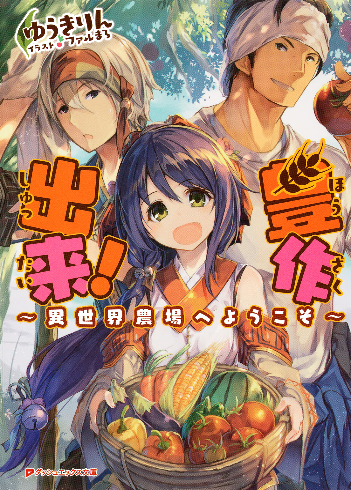
この本は縦書きでレイアウトされています。
また、ご覧になる機種により、表示の差が認められることがあります。
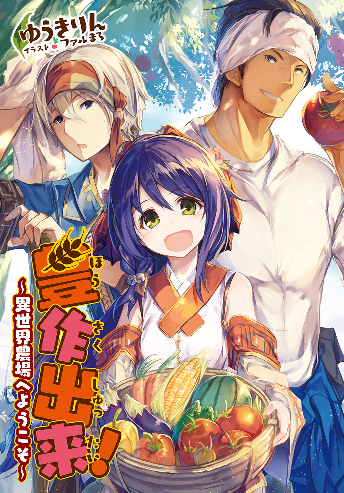
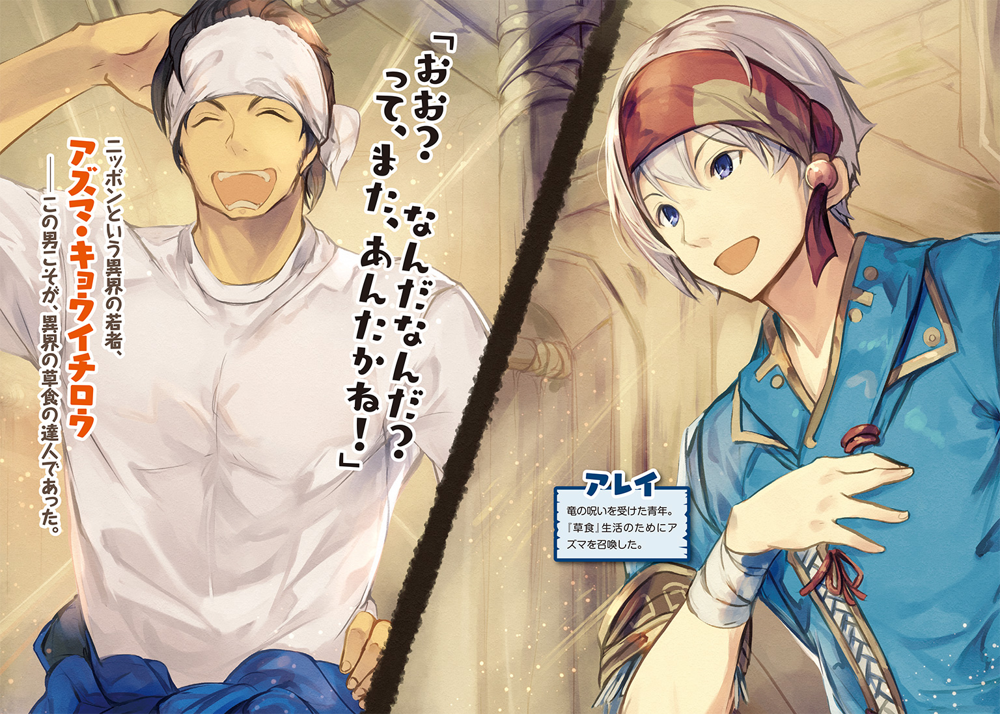
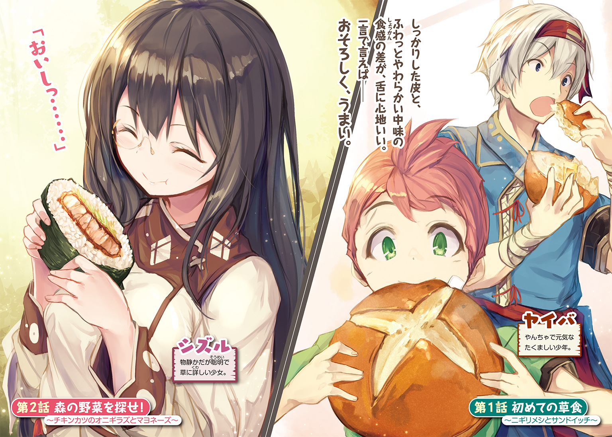
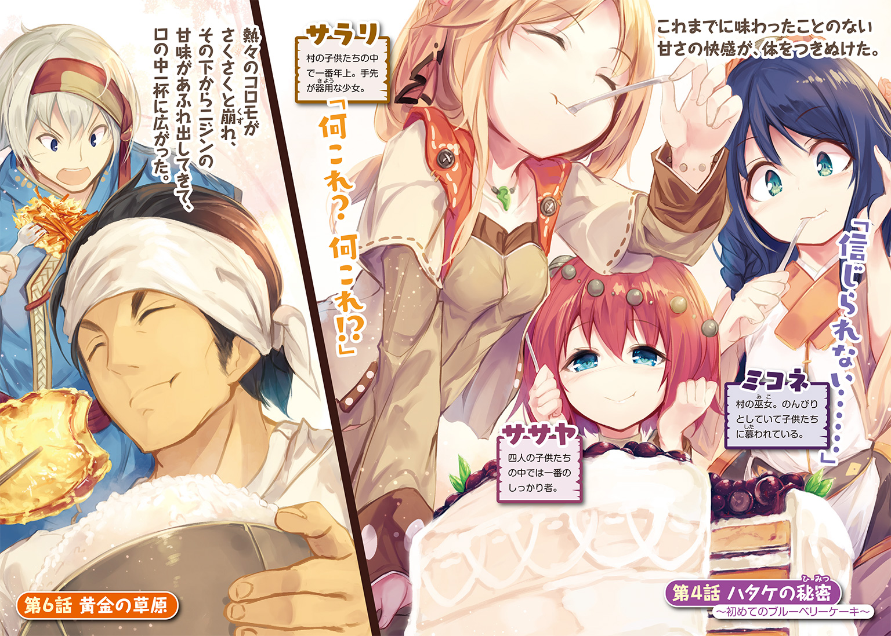
 ダッシュエックス文庫DIGITAL
ダッシュエックス文庫DIGITAL
豊作出来！
～異世界農場へようこそ～
ゆうきりん
第１話 初めての草食
～ニギリメシとサンドイッチ～
「長よ......もはや、草食しかないと思います」
自分の言葉に、モウノ村の長たる女たちの顔に怒りと驚愕が広がるのを、暗がりの中でアレイははっきりと見た。
だが、驚きはしなかった。
頭より下に生えているものを食べるのは、聖典に『卑しいことである』とはっきりと書かれている。長い人生を、聖典の教えを守ってきた長たちにとって、アレイの提案は冒瀆に等しいものであろう。
「躊躇いはわかります」
長の中の長、長々が皺の深い口を動かす前に、アレイは言った。
「ですが、現実を見てください。町に出稼ぎに行った女たちからの仕送りは、ほとんど絶えて久しい。金がなければ、商人も肉は売ってはくれません。塩漬け肉も残りは僅かしかないじゃないですか。ここを捨て、他の村に身をよせ、奴隷のように働きますか？」
老婆たちは唸った。
善き人が口にしていいのは、頭の上に生る果実と鳥獣だけと聖典に記されている。
二十二年しか生きていないアレイでさえ、実際、口にするには激しい葛藤があった。長たちが躊躇うのも無理のないことではある。
しかし、背に腹は替えられない。
「俺は竜に呪われ、小獣しか狩れなくなってしまった。男衆がいない以上、取れる道が他にありますか？ 長たちが他村を頼るというのなら、俺は子供たちを連れてここを出ます。あいつらの分くらいなら、俺でも何とかできる。蛙なら呪いも効果を発揮しない」
長たちは皺深い顔を見合わせた。
「......おぬしは食ったのか？ 草を」
枯れ枝のごとき指をアレイに向け、長々は訊いた。
「はい」
どよめきが、狭く薄暗い小屋の空気をゆるがせた。祈りの印を結ぶ老婆もいた。
「何を食った......いや、草に名などなかったな」
草は草でしかない。酔狂な学者は花にいちいち名をつけているらしいが、庶民にとってはどれも同じ草でしかなかった。
「その男は《ニギリメシ》と言っていました」
「男？」
アレイは頷いた。
「竜から奪った宝の力で現れた、謎の男です」
腰の袋から美しい装飾の施された珠を出し、アレイは床に置いた。
「古代の魔術師が造った召喚珠のようです。竜の呪いを受けた者にしか使えないため、骨董としての価値しかないとのことです」
これを売ってその金で当座を凌ごうと誰かが言い出す前に、アレイは先を制した。
「魔術によって現れたあれは、人ではないのかもしれません。ともあれ、その男が腹を空かせていた俺を見かねて、そいつをくれたのです」
「......ニギリメシ......」
「はい。男の話ではコメという草の小さな実を煮て固め、塩を振っただけのものだそうです。ですが、これがめっぽうまかった」
思い出すだけで唾が湧き、アレイはごくりとそれを飲んだ。
「ニギリメシは拳ほどの大きさで、雪のように白いのですが冷たくはなく、歯ごたえはもっちりと弾力があり、初め、まぶした塩気が軽く舌を刺すのですが、そのあとで不思議な甘さが滲み出してきて、なんともいえぬ代物でした」
老婆の誰かの細い喉が鳴った。
「つまり果実のようなものかい......？」
粒の固まった様子は、オレンジに似ていなくもないが、まったく違う。
「ああした甘さとは、別のものです。どちらかといえば、肉の甘みに近くて......そう......あれは、肉にすごく合いそうな気がする......」
ニギリメシを、焼いた肉と共に食べることを想像したアレイは、試してみたくてたまらなくなった。肉とニギリメシは、とても合いそうな気がする。
だが、肉でなくても合うものはある。
添えられていた木の根のようなもの。ぽりぽりとした不思議な食感と淡い辛味が、ニギリメシをさらにうまくしてくれた。
男は確か、あれを《タクワン》と呼んでいた。
老婆たちは、隣の長とぼそぼそと何かを囁き交わした。言葉は聞き取れなくとも、長たちが興奮を隠しきれていないのが、薄暗がりの中でも見て取れた。
それに、とアレイは続けた。
「あのニギリメシというもの、とても腹もちが良かった。洞窟を抜けるまで、授かった二つのニギリメシだけで乗り切ることができました。草の実をあれほどうまい飯に変えることができるあの男なら、我らのこの窮状を何とかしてくれるに違いありません」
皆が長々を見た。
村の大事は合議で方向性を決めるが、最後の決断は長々が下す。長々は枯れた指を組み、沈思した。
他の長たちは黙して言葉を待ったが、その間、アレイが考えていたのは、果たしてもう一度あの男を呼び出せるのだろうか、というそのことだった。
王都の魔術師の話では、同じ者しか呼び出せないということだったが、古代の遺物である竜の宝物のすべてをわかるはずもない。魔術師は、研究のために譲って欲しいと懇願したが、アレイは拒否した。
「アレイ」
皺に埋もれていた目が、暗がりで妖しく光を帯びた。
「その品、いくらになると魔術師は言っておった？」
アレイはぎくりとした。これだから長々は怖い。この老いた巫女に隠しごとなどできぬ。
「金貨五〇枚と言われました」
部屋がどよめきに揺れた。それだけの金貨があれば、肉が山と買える。どこぞの猟師を持参金をもって迎えることもできる。そんな呟きが交わされた。
「じゃが、金はいずれなくなる」
長たちの言葉を封じるように、長々は言った。
「肉は食えばなくなってしまう。男を婿に迎えると言うても、ミコネは我が跡継ぎ、三人の娘たちはまだ幼く、子を産むにはまだ早い。それに産まれた子が、いずれもまた娘ならば、どうする？」
長々の言葉に他の老婆たちは黙った。
「......と、おまえは言いたいのじゃろう、アレイ？」
にやりと笑った長々に薄ら寒いものを感じながら、アレイは頷いた。
しかし、と他の長が口を開いた。
「草を食えば、魂が穢れようぞ。ならば、清いまま朽ちた方が良いのではないか？」
「聖典には、魂が穢れるとは書いてはおらん」
彼の書を否定するがごとき長々の物言いに、老婆の幾人かが祈りの印を結んだ。
「卑しき獣のすること、と書いてあるだけじゃ。飢えて死ぬということがどれほど惨たらしいことであるか、知らぬではあるまい。コナム村の様子を、おまえたちも見たであろう？」
長たちは黙った。
アレイはその村のことは話でしか聞いたことはなかったが、飢えの苦しさは身を以て体験した。あの男が現れなかったとしても、洞窟に生えていた草を、何であれ食べていたに違いなかった。
「草ならば、どこにでもある。飢えずにすむのであれば、子らを飢えさせずにすむのであれば、卑しくてもかまわぬ。そも、生くることは卑しきことと聖典の初めにあるではないか。怨みながら飢えて死ぬより、卑しい獣として生きて、天寿を全うすることを、わしは選びたいと思う」
呻きがいくつか上がったが、アレイは小さく拳を握った。
長の決は下った。
これで、もう一度あの男を呼び出すことが出来る。
そのことにアレイの心は躍った。正直なところ、アレイはもう一度、あの男のニギリメシを食べてみたかったのだ。
だがそれすら、長々には見抜かれているように感じた。そして、実のところ彼女も、自分と同じく草食をしてみたくなったのではないだろうか。
皺深い口元に刻まれた笑みは、それを証しているように、アレイには思えた。
「では、決まりじゃ。アレイよ。その男を呼び出しておくれ」
「はい」
アレイは大きく頷き、召喚珠を部屋の中央に置いて、後ろに下がった。老婆たちも座したまま後退する。男が現れた時に、重なったりしたらどうなるかわからない。
召喚にこれといった手順はなかった。ただ、祈ればいい。初めての時もそうだった。腹が減ったと思ったら、男が現れたのだ。
（......来てくれ！ アズマ！）
男の姿を思い描き、そう強く祈ると、召喚珠がまばゆい光を放った。思わず目を閉じたアレイは、瞼を通してもわかる光が消えるのを待ち、ゆっくりと目を開いた。
「おお？ なんだなんだ？ って、また、あんたかね！」
アレイの顔を見て、男は面白そうに笑った。前の召喚の時と同じ、上下一体となった青い服を着て、その上だけをはだけて袖を腰に巻いている。
ニッポンという異界の若者、アズマ・キョウイチロウ――この男こそが、異界の草食の達人であった。
☆
「なぁるほど。話はわかったっぺ」
胡坐をかいて、長とアレイの話を頷きながら聞いていたアズマは、陽に焼けた大きな手で、膝を叩いた。
「つまり、あんたらは、農業を始めたいってことだべ？」
「ノウギョウ？」
「んだ。食える植物を育ててえんだろ？ そういうことなら俺も手伝えるっぺ」
「そ、育てる？」
何を言っているのか、アレイの頭は理解を拒んだ。この国の人間であれば、抜いたりすることはあっても、草をわざわざ育てるものなどいない。
「あのニギリメシというやつは、その辺に生えている草の実じゃだめなのか？」
「回ってみねえことには、わかんねえけども、さすがに米は生えてねえべ。あれはしっかり手をかけてやらねえと、すぐに枯れちまうし」
しらなかった。
長たちの視線が突き刺さるのを、アレイは感じた。男を呼びさえすれば、すぐにでもニギリメシを食わせてやれると思っていたのだが、当てが外れた。
「まあ、とりあえず見てみるべ」
よいしょ、と呟いて、アズマは立ち上がった。アレイは慌てて立ち上がり、あとを追った。
小屋の外に出ると、遠くから子供たちがこそこそと覗いているのが見えた。ササヤ、シズル、サラリの三人の少女と、一番年下の、村で唯一の男子、ヤイバだ。
アズマは子供たちに気づくと、あけすけな笑顔で手を振ったが、子供たちは蜘蛛の子を散らすように逃げていってしまった。
「嫌われたかなあ」
豪快に笑って、アズマはどんどんと先に行ってしまった。
まるで村の周りを知っているかのように、平気で茂みに分け入り、ふうん、とか、へえ、とか言って様々な草を調べていたが、やがてアズマは、ひとつの草の群生地で足を止めた。
「こりゃ、麦でねえか！」
嬉しそうに言って、アズマはその枯れ草をひとつ手折り、中の実を取り出して指で揉んだ。
「うん、こりゃ間違いなく、麦だ。これなら使えるっぺ。――あんた！ これはここの他にも生えてるんだべか？」
「ああ。どこにでも生えてるし、どこにでも生える。迷惑な草だ」
「迷惑なんて、とんでもねえ。こいつは宝でねえか。持って帰りてえんだが、刈るものはあるかね？」
アレイは腰の革帯に差していた大振りの短刀を差し出した。
アズマは受けとったそれで、ムギの根本をざくりざくりと切り、あっという間に両脇に抱えるほどの量を刈り取った。
「んじゃ、戻るべ。こいつで、パンを作ってやる」
「パン？ ニギリメシみたいなものか？」
「違うが、うめえぞ」
嬉しそうに言って歩き出す。アレイは後ろを歩きながら男の背中を見、歴戦の戦士のように逞しい、と感じた。
「アズマは、猟はしないのか？」
「せんなあ......俺は、農家だかんな。肉は知り合いのマタギに、うちで採れた野菜なんかと交換してもらうんだ」
「ヤサイ？」
「あー、そういう言葉がないんか。野菜ってのは、食べられる草の総称さ。米や麦なんかはちょっと違って、穀物って呼ぶ」
なるほど、とアレイは納得した。果実にいろいろな名前があるのと、同じというわけだ。
「お、こりゃあいい」
帰る道すがら、アズマは一本の草に目を止めた。それは拳大の、血のように赤い実をつけ、実に触れると手が爛れるといわれていた。
だが、アズマは躊躇することなく、その実を捥ぎ取った。
「トマトでねえか。うん、匂いも間違いなくトマトだ。――って、おいおい、こっちのこれはレタスか？ 驚いたなあ、野生のレタスなんて初めて見た」
アズマがレタスと言ったのは、葉が花の蕾のように重なっている葉玉の草だ。まさか、それも食べようというのだろうか。
喜ぶアズマの背中を見つつ、アレイは僅かな後悔を覚えずにはいられなかったが、村に戻ってすぐ、アズマの体はぼんやりと透け始めた。
「お。そろそろ戻る時間みてえだな」
「そうなのか？」
アレイは焦ったが、アズマは妙に落ち着き払っていた。
「そだよ。前んときも、こんな感じだったわ」
知らなかった。洞窟のときは、前を歩いていたアレイが振り返ると、アズマはいつの間にかいなかったのだ。
「んじゃ、また明日、呼び出してくんな。そんだなあ、朝がいいな。そんときまでに、必要なもんを用意しとくから」
そう言うと、アズマは消えてしまった。
前回はわからなかったが、アズマの滞在は、二つ鐘が打つ程度であった。鐘が十二回で一日である。長い時間とはいえない。
効率よく教えを請わねば、と思いつつ、アレイはアズマの残したムギの束を拾いあつめ、迎えに出てきた長たちに、彼は帰ったと伝えた。
☆
翌朝、アレイが再び召喚珠に願うと、アズマは何事もなく姿を現した。
前回と違うのは、大きな袋を持っていたことだった。アズマは中から書物らしきものを何冊も取り出して、机に置いた。
「発電機とパン焼き機を持ってこようかと思ったんけど、俺も何回こっちにこれるか、わかんねえし、あんたらが自分たちで焼けるようにならないとなあ」
何かの道具を持ってこようと思ったがやめたらしい、ということはわかった。だがそれよりも、アズマの、あと何度こっちにこれるか、という指摘にアレイは驚いた。
考えてもみなかったが、ありえないことではなかった。竜の宝珠については、ほとんどわかっていることはないのだ。これが召喚珠だと判明したのも、アズマを呼び出すことができたからだった。回数に制限があってもおかしくはない。
「日本語が読めるかわかんねかったから、なるべく絵の多いのを選んで持ってきたけんど、わかんねえところがあったら訊いてくれ」
アレイは頷いた。
アズマの言っていることは正しい。自分たちだけで草食をやれなければ、飢えから逃れることはできない。
アレイは長たちの他、子供たちも呼んだ。これから先の村を支えるのは子供たちだ。彼らが草食を学ばなければ、アズマを召喚した意味がない。
子供たちは、最初こそアズマに警戒心を隠そうともしなかったが、服以外は自分たちと変わらない《人》であること、言葉が通じることがわかると、興味が勝った様子だった。
「ンじゃ、始めるべ」
アズマは大きな手を、ぱぁんと打ち合わせると笑顔になった。
するとそこへ、
「すいません、遅くなりました......」
柔らかく囁くような声と共に、ひとりの美しい娘が奥の戸口から顔を覗かせた。
アズマの目が驚いたように瞠られ、アレイは己のことではないのに、少しばかり誇らしい気持ちになった。ミコネほどの美しい娘は、アズマの住む異界にもいないに違いない。
「ミコネ姉ちゃん！」
子供たちが声を弾ませた。
ミコネは、唯一村に残った若い娘だ。
元来あまり丈夫でないのに加え、巫女見習いでもあり、長々である祖母の身の回りの世話をする必要もあったため、残らざるを得なかった。
だが、まだ母親の恋しい年である子供たちには、心のよりどころとなっている。
「どうした、アズマ？」
多少、からかうような声になってしまったが、アズマは気づかなかったようだ。
それどころか、
「いやあ......あんまり綺麗でびっくらしちまっただ」
ミコネの顔は火がついたように赤くなった。
下心がないのはアズマの顔を見ればわかる。ただ正直に思ったことを言ったのだろうが、アレイにはとても言えない台詞だった。しかもそれを特に気にした様子もない。
「えっと......始める前に、誰か湯を沸かしてくんねえか？ あとで必要になるからよ」
「わ、わたしが......」
ミコネが素早く手を挙げ、そそくさと部屋を出ていった。
アズマにはその理由もわからないようだ。
「んじゃ、その間に――」
目の前の机の上に、昨日持ち帰ったムギの束が置かれた。子供たちは、もうアズマに慣れたのか、何が始まるのかと興味深そうだった。
「まずは、麦の種の皮を剝かねえと」
アズマはムギを一房手にすると、実の部分を大きな両手に挟み込んで、擂り合わせた。すると、種と殻は簡単に剝がれて、共に机の上に落ちた。
「とまあ、こんな具合だべ。やってみな？」
どうすればよいのかと自分を見る子供たちに、アレイは頷いて見せた。
子供たちの中では一番しっかりしてるササヤが、ムギの穂を小さな手に挟みこんで揉んだ。ぱらぱらと種が机の上に落ちる。他の子供たちも、おっかなびっくりといった様子ではあったが、穂を揉み始めた。
程なく、机の上にはかなりの量の種が、高く積みあがった。
「じゃあ、次はこいつだ」
アズマはそう言うと、傍にあった廃材の薄い板を手にした。
「今は殻と実が混じってんだろ？ だから、こいつでこうして――」
アズマが大きく板を一振りすると、起こった風で殻が舞い上がった。
「うわ！」
「きゃ！」
子供たちが驚いて顔を覆う。だが、その口元は笑っていた。
「――邪魔な殻を、飛ばすんだ。脱穀機って便利なもんもあるんだけんど、いまはこいつで代用するっぺよ」
言って、アズマはアレイに板を突き出した。
「やってみ？ あんたもコツを覚えないとなぁ。俺は帰るんだし」
「そ、そうだな」
頷き、アレイは板を受けとると、思いきり振った。今度は、本当の悲鳴が子供たちの口から上がった。殻はそれだけでかなりの量が机の上から吹き飛んだが、種も同じくらい飛んでしまった。
「あ、わるい」
殻まみれになった子供たちに睨まれ、アレイは謝った。同じように殻にまみれたアズマは大笑いをしていた。
初めてのことだから、なかなか、加減が難しい。あまり強く振れば、殻だけでなく種も飛ばしてしまう。
何度か振り、コツがつかめたと思った頃には、残念ながら作業は終わっていた。
机の上には、乳めいた色の小さな実が小山となって残った。だがまだ、とても食べられるものには見えなかった。触れると、砂利のように硬い。
「んじゃ、次はこれだ」
アレイは、机の下から石臼を取り出して置いた。焼いた動物の骨や果実の種を細かく砕いて擂り潰し、薬を作るときに使うものだ。
「構造は一緒みたいだから、穴に麦の実を入れて......」
アズマは把手をゆっくりと回した。しばらくすると、上下の臼の合わせ目から、さらさらの粉になったムギが零れ落ちはじめた。
見本を見せると、アズマは身振りでアレイに、やってみろ、と言った。
把手をつかみ、アレイは同じように回した。ごりごりごりごりと臼を回転させるのは、単純な作業だったが、不思議と心が落ち着いた。
竜に不殺の呪いをかけられたあと、アレイには出来ることはほとんどなかった。村に戻ってヤイバに狩りを教えてはいたが、役立たずであることに変わりはなく、いつも後ろめたさがつきまとっていた。
だが、こうして臼を回していると、何故か余計なことは考えずにすんだ。
そのうちに、ムギの種はすべて綺麗な白い粉となった。思ったよりも力をこめていたのか、指はすっかり擂り棒の形に固まっていた。
アレイが指をほぐす間に、アズマは子供たちに頼んで、別の大きな器に粉を移し替えた。
「これからだんぞ」
アズマはふふっと笑って、小さな瓶を取り出して置いた。中には茶色い液体が入っている。あまり揺れないところを見ると、粘性の液体のようだ。
「それは？」
「俺が作った、天然酵母だ。こいつはこの白い粉を、あんたたちがいままで見たこともないような食べ物に変えるために、欠かせない代物だ。他にも水と砂糖がいるけんど、天然酵母がなくっちゃ、なんも始まんねえ」
「その、天然コウボというのは、俺たちにも作れるものなのか？」
「んだ。葡萄や林檎からつくれんぞ。生えてるか？ 葡萄や林檎」
アレイは頷いた。アズマの説明を聞くとおそらくブレプとアプレのことだ。酒の材料として一般的に使われているし、食べもする。
「んじゃ、あとで教えっから」
そう言うと、アズマは袋の中から奇妙な形をした瓶を二つ出した。ひとつは透明、ひとつは褐色。
「これは水と蜜。さて、混ぜるべ。よーく見とけよ？」
子供たちが机に群がって、アズマの手元を覗き込む。
「順番はあるのか？」
「蜜、天然酵母、水の順番だな。最初は手にくっつくんだが、混ぜている内に取れるから気にしないこった」
アズマは蜜を入れ、匙にすくった天然コウボを入れて、ざっくりと混ぜた。次に瓶から水を回し入れ、おもむろに手を突っ込んでゆっくりと混ぜた。
さらさらだった粉が、見る見る粘り気を帯びる。
べたべたと指にまとわる感触が不快そうだったが、アズマの言った通り、粘つきは徐々に薄れて、ムギの粉はやがてひとつの白い玉のようになった。
そこへ折りよく、
「あの......言われた通りに、お湯を沸かしましたけれど......」
湯気を立てる大きめの鍋を持って、ミコネが戻ってきた。
「んじゃ、そこの盥に湯を張ってくれっか？」
小さく頷いたミコネが言われた通りにすると、アズマは白い玉の入ったままの器を盥に半ばまで沈めた。器には布をかける。
「こんで、パン種の一次発酵はしまいだべ。簡単だろ？」
発酵という言葉は酒造りでも使われるが、同じ意味なのだろうか。種は草の実のことだが、この白い玉から芽が出るということではないだろう。
「こんまま、一晩置かねばなんねから、焼くのは明日だな。そうだ、アレイ。こん村に石窯はあるか？」
「ああ。肉を焼くのに使っていたのがある」
最近は冷えたままだが。
「じゃあ、そいつをちょっと見せてもらうべか。そんすれば、明日来る時、必要なもんがわかっからな。あ。それと、アレイ。あとでちょっと頼みたいことあっから」
「頼み？」
「んだ」
大きく頷いて部屋を出ようとしたアズマは、不意に振り返ると、
「......中、見んなよ？ 覗いたら、呪われっぞ？」
そう言ってにやりと笑い、子供たちを――特にヤイバを震え上がらせた。
☆
翌朝、再び召喚されたアズマが布をとった途端、子供たちは、きゃっと悲鳴を上げた。ミコネはさすがに堪えたが、それでも息を呑んだのはわかった。アレイとて同じだった。
器の中で、白い玉は何倍も大きく膨らんでいたのだ。まるで本当に、何かのまじないをかけられたかのようだった。
もしくは本当に魔術なのだろうか？
「練った小麦粉に酵母を加えて発酵させると、こんなふうに膨らむんだべ。呪いじゃねえから、安心しな」
そう言って、アズマは笑った。子供たちはそれを聞いて安心したようだ。アズマは余っていたムギの粉を机の上に撒くと、膨らんだ玉を器から取り出して置いた。
「できあがったこいつは、パン種っていうだ。パンの元だから、パンの種で、パン種だな。焼くとまた膨らむから、まずこれを、拳骨の大きさくらいに分ける」
アズマは小さく薄い板で、パン種を押し切って分けた。かなりの弾力があるようだが、ぷつっと楽に切れて、あっという間に、九個になった。
「次に、こいつをこの棒で伸ばす」
分けたパン種のひとつを、細い木製の円柱を転がして、端から潰していく。すると中の気体が押し出され、ぷつぷつと気泡ができては潰れていった。
「で、こんな風に円盤状になったら、端を真ん中に向けて折り畳むようにして丸める――」
アズマは器用にパン種を畳むと、再び元の玉を作った。
「――折り畳んだこっちを下にして置けば、こんでひとつ完成だ」
子供たちの口から、感嘆の息が漏れた。
見事な手際だ。
簡単そうに見えるが、達人の動きというのはそうしたものだと、アレイは知っていた。よどみのない動きを見ればわかる。
「じゃあ、やってみるべか？」
アズマがそう言うと、待ってましたとばかりに、子供たちはパン種に手を伸ばした。粘土細工のようにみえるが、表情は真剣そのもので、ふざけたりはしなかった。
そうして九つの玉が出来ると、アズマはパン種の上に再び粉を撒き、布をかけて、またしても覆い隠した。
「こうやってもう一回、パン種を寝かせて、またちょっと膨らませんだ」
もう呪いなどと言って脅かさずとも、子供たちがいたずらなどしないことは、顔を見ればわかった。
アズマは大きく頷くと、
「んじゃ、待ってる間に窯の準備をしようかね」
下見は昨日、済ませてある。
村の厨房へ移動すると、アズマはまるで自分の家の窯であるかのように、下の穴に薪と種火を入れ、火吹き筒で空気を送り込んで、火を熾した。
しばらくすると、薪は見事に燃え上がり、蓋が開いたままの窯の中がじわじわと熱くなっていくのがわかった。
「ミコネさん、言うたっけ？」
立ち上がったアズマが振り向くと、ミコネは戸惑いながら頷いた。
「窯を任してもいいかい？ いまくらいの温度を保って欲しいんけど」
「わ、わかりました」
緊張しながら答えたミコネに、アズマは火吹き筒を渡した。
何故か、ミコネは吹き口をじっと見ている。
「行くべ」
ミコネは何を考えているのだろう、と思うアレイの肩を叩き、アズマは厨房を出て行き、アレイは慌ててあとを追った。
パン種のある部屋では、子供たちが、まるで貴重な供物を盗まれでもしないように、机を取り囲んで見張っていた。
逞しい腕を伸ばし、アズマは子供たちの頭越しに布を取り去った。
「わ！」
子供たちが揃って声を上げる。気持ちはわかる。拳ほどだったパン種が、今度は倍以上の大きさに膨らんでいたのだ。
「面白いべ？ これぞ天然酵母の力さ。あとはこいつを石窯で焼けば、麦の粉から作った食いもん、『パン』の完成だ」
膨らんだパン種の一つを手に取り、表面から軽く粉を叩き落としたアズマは、まるで眩しいかのように目を細めた。
☆
鉄板にパン種を少し離して等間隔に並べると、アズマは石窯の中へそれを押し込んだ。
窯の中は、火山の火口のように熱い。
蓋を閉めると、アズマは時折中を覗いて、加減を見ていた。その目は真剣そのもので、誰も声をかけることは出来なかった。
どのくらい経ったか、これまで嗅いだことのない香りが窯から漂い出し、アレイは鼻をひくつかせた。なんだろう。胸が騒ぐ――というか、腹が騒ぐ。ぐぐう、と胃が動き、アレイは腹を押さえた。
ニギリメシとはまったく違うのに、口中に唾が湧き出してくる。子供たちも何かを感じているのか、目を輝かせて石窯を見つめていた。
「......よし」
やがて、アズマは大きく頷くと、剣を打つときに鍛冶師が使う、金属糸を編みこんだ分厚い手袋に似たものを嵌め、焼けた鉄板を窯から引き出して、机の上に置いた。
パンは、入れたときよりもさらに膨らんで赤ん坊の頭ほどになっており、薄く茶に色づいた表面が割れて裂け、そこから真っ白な中味が顔を覗かせていた。
これはムギの香りなのだろうか。初めて嗅ぐのに、何故かひどく食欲をそそられる。まるで体がこれを知っていて、求めているかのようだった。
アズマは鉄板を傾けた。ころんころんとパンは机の上に転がったが、見た目よりも随分と軽そうで、割れたり砕けたりはしなかった。
鉄板を脇に置いて手袋を外したアズマは、とても満足そうな顔をしていた。
「いい出来だあ。ここの麦は、すごくいいな！」
笑みを浮かべながら、アズマは鞄から陶器の瓶を取り出した。金属製の蓋を取ると、中には黄色っぽい塊が入っていた。
「それは、固乳か？」
匂いはそれに近い。獣乳を容器に入れて塩を加えて振ると水気が分離する。肉を焼いたり、上にのせたりして食べると、濃厚な風味が加わる。
「お。こっちにも、バターはあるんか！ そりゃあよかった。こいつはパンによく合うんだ」
アズマはパンをひとつ手に取ると、真ん中から割った。
ぱりっと乾いた音を立ててパンは二つに割れ、湯気が立ち上った。驚いたことに固いパンの中は、綿のようにふんわりとしていた。
小さな匙で固乳をすくって、綿のような部分にのせると熱でたちまち溶け、蜜のような液体に変わってしみこんでいく。
アズマはそれを、躊躇うことなく口に運んだ。ぱりっ、ばりっと皮が砕かれる。だが、刃が割れるほど固そうではない。唇に溶けた固乳がついて、てらてらとぬめる。
「うめっ！」
吐息と共に、アズマは叫んだ。
「いやあ、ほんとうにいい麦だべ。やっぱ、石窯で焼くと違うなあ......帰ったら、うちでもつくるっぺか？」
独り言のように言って、また齧る。
白い中味がむっちりと伸びてから、ぷつっと切れる。その度に放たれる香りに、ごくり、と喉がなってしまった。
「お、わるいわるい。さ、食ってみ？ うめえぞ」
そう言われても、長たちはなかなか手が出ない様子だった。子供たちも、長たちが食べないものに手を伸ばすことは躊躇われる様子だった。
ならば、とアレイはパンを手に取った。
焼き立てだからか、溶岩弾のように熱い。指に力を籠めると、焼けた皮は卵の殻のように簡単に割れた。そこへ固乳を匙で大目にすくってのせ、かぶりつく。
目を瞠った。
しっかりした皮と、ふわっとやわらかい中味の食感の差が、舌に心地いい。溶けて染み込んだ固乳がやけに甘く感じる。
一言で言えば――おそろしく、うまい。
口が止まらず、アレイはあっというまに、ひとつ、平らげてしまった。不浄なものに対する抵抗感など、まるで感じなかった。
「......本当にうまいな」
思わず呟くと、アズマは満面の笑顔で頷いた。
だが、村人の手はまだ出ない。
アレイは冒険者ゆえ、未知の状況に対しての順応性は一般の人間よりも高くはある。
だが、彼女たちは違う。自分たちで望んだこととはいえ、いざ食べてみろといわれると、踏み出せない気持ちはわかる。
その時、小さな手が伸びて、パンをつかんだ。
ヤイバだった。
土のような色をしたパンをしばらくじっと見つめていたが、やがて目を強く瞑ると、大きく口をあけ、何もつけずにかぶりついた。
ばりばりっと皮が割れる音が響く。
「むふっ！」
おかしな声を上げて、閉じた目が開いた。
「うめえっ！」
叫び、こんどは固乳をすくいとって塗りつけ、もう一度齧る。それを食べ終わる前に、開いた手でもうひとつつかみ、それにも固乳を塗りつける。
そんなヤイバの様子に、他の子供たちも、わっと手を伸ばし、遅れて、意を決したように長々が、パンを手に取った。
「うそっ！」
「おいしい......」
子供たちがそんな声を上げる中、長々がパンに歯を立てた。
「ほう！」
普段は皺に埋もれている目が露になり、ぽろぽろと皮がこぼれた。
「これが、本当に草から作られたものなのか？ うまい。うまいではないか。ううむ......こうしてそのまま食べても十分にうまいが......」
長々は固乳を塗り、溶けたそれを啜るようにしてパンを食べた。
「......固乳を塗ると、さらにうまい！ 不思議な甘みに固乳のコクが加わって、これは肉に劣らぬ、素晴らしいご馳走じゃ！」
それを聞くと、他の長老たちも手を伸ばし、同じような感嘆の声を上げた。
アズマは何度も頷くと、
「アレイ、頼んでいたもんは、採ってきてくれたか？」
「え？ あ、ああ」
アレイは机の下から、残り少ない燻製肉と、例の血のように赤い実、葉玉の草を取り出した。こんなものをどうするのか、と思っていると、アズマは鞄から短刀を取り出し、赤い実を輪に切り分け、葉玉の葉を剝いだ。
「こいつは、俺の世界じゃトマトとレタスいうてな、パンに良くあうんだ」
言いながら、パンの横に刃を入れ、大きく開いたそこに固乳を塗りつけ、紙のように薄い燻製肉を一枚と、トマト、レタスを挟むようにして閉じた。
「食ってみ」
腹の足しにもならない少量ではあるが、貴重な肉には違いない。食べても良いものか、アレイは長々を見ると、老婆は頷いた。
アレイは、野菜と薄い肉を挟みこんだパンにかぶりついた。
「むふっ！」
思わず声が出てしまった。
なんという、うまさだ。パンと固乳だけのときよりも、はるかにうまい。肉は僅かな量でしかないのに、トマトの不思議な酸味と、みずみずしいレタスの食感、そしてパンが、しっかりとした満足感を与えてくれる。
「俺の世界の料理で、サンドイッチっていうんだ。こいつなら、ちょっとの肉でも腹がいっぱいになるべ？」
アレイは頷いた。ほんとうにそうだ。これなら小獣しか獲る事ができなくとも、十分に腹が満たせる。なんて素晴らしい食べ物なんだ！ サン・ドイチ！
「ちょうだい！」
子供たちの手が伸びてきて、サン・ドイチを奪われてしまった。ヤイバたちは慌しく千切って分けると、小さな口に放り込んで夢中になって食べた。
アズマは笑いながら、残りのパンで作れるだけのサン・ドイチを作りながら、
「とりあえず、あんだけの量の麦があれば、しばらくは困らないだろ。けんど、ただ採るだけでなくて、野菜も穀物も人の手で植えて育てりゃ、安定して食糧を確保できるべ」
「......俺たちにできるだろうか」
「土はよさげだし、あんだけ野生で育ってんなら、がんばって開墾すれば何倍も採れんべよ。ま、簡単じゃないけんど」
そこは任せておけ、とその笑顔は語っていた。
「異界の人よ」
口の回りに固乳をつけたままの長々が、前に進み出て、アズマを見上げた。
「よろしくお願いする。我らに草食を教えてくだされ」
深々と頭を下げると、夢中になってサン・ドイチに齧りついていた子供たち、他の長たちも手と口を止め、同じように頭を下げた。
アズマは、困ったように苦笑いを浮かべた。恐縮しているようにも見える。驕ることのない人の良さが、その様子から見て取れた。
「......わかった。これもなんかの縁だ！」
アズマはその厚い胸を、どん、と叩いた。
「この異世界じゃ俺にとっても手探りだけんど、一緒にやるべ！ ――農業を！」
ノウギョウ！
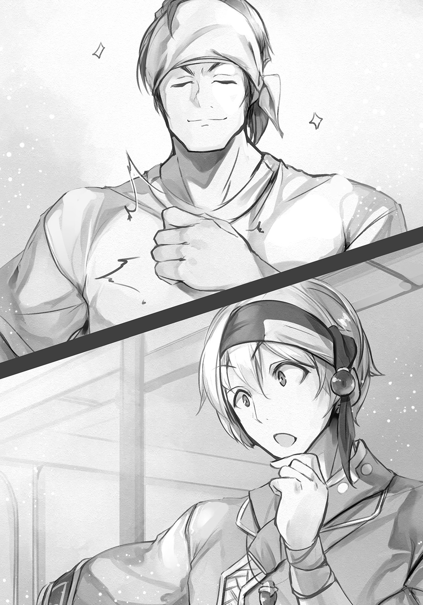
その言葉を聞くのは二度目だったが、初めてのときと違い、こうして実際にサン・ドイチを食べ、草食に踏み出してからでは、まったくちがく聞こえた。
ノウギョウ――それは神の福音のように、アレイたちの胸を強く揺さぶったのだった。
～第１話 終わり～
第２話 森の野菜を探せ！
～チキンカツのオニギラズとマヨネーズ～
「こっちでは、麦は芽が出てからどんくらいで実んだ？」
刈り取った束を指し、アズマはそう訊いた。
傍では子供たちが木を組んで、三角形の台を作っている。保存のためには、そこに収穫した穂をかけて、よく乾燥させなくてはならないらしい。
「どのくらいといわれても......」
いままで気に留めたことがなく、まったくわからなかった。草の芽がいつ出るのかなど、気にしたこともない。
「......雪が降る季節」
少し離れたところで台を紐で縛っていた娘が、ぼそりとそう言った。
「おお、そうか！ ありがとう！」
アズマがそう答えると、娘――シズルは単眼鏡をかけた顔を隠すように背を向けた。瘦せた背中に落ちる長く黒い髪の隙間から覗く耳が、何故か赤くなっている。
驚いた。
普段からあまり喋る娘ではないのに、自分からアズマの話に答えるとは。そのうえ、草の芽が出る頃合などを知っているとは。
「あん娘は？」
アズマは、感心したようにシズルを見ている。
「シズルだ。もともとはこの村の者じゃないんだけどな。瞳が赤いだろう？ あれは砂の国の民の目だ。旅の途中でこの村の近くで山賊に襲われ、両親を失ったんだ。今年で十三になる」
「食いもんが少ないのに、引きとったんか？」
「山の引き合わせだからな」
当たり前のことを言っただけなのに、アズマは何故か感心した様子だった。
「なるほどなあ。......ところで、実が生るんは年に一度かい？」
「それは――」
アズマは自分を見ていない。視線を追うと、その先に立つシズルが、こちらに背中を向けたまま小さく頷いた。
たいしたものだ。どうやらもうシズルの心をつかんだらしい。アレイ自身はまだ、打ち解けてもらえたと思えたことはないのだが。
つうことは、と呟いて、アズマはこちらを向いた。
「麦の生育は、あんま俺んとこと変わらんってことか」
そう言われても、答えようがない。
「だとすると、こんだけの麦があれば、節約すれば冬まではもつだろうけんど、その先がちょっと厳しいなあ......」
フユというのは季節のことだろうか。ムギの束を見ただけで、どのくらいの量の粉ができるのか、どのくらいもつのかまでわかるのか、とアレイは驚いた。
だが、それは杞憂だろう。なにしろこれは草だ。
「いまから育てれば、丁度、いまある分が無くなる頃に採れるんじゃないか？ 草なんか放っていても生えてくるもんだろう？」
「いんや」
アズマはゆるりと首を振った。
「こん麦の生育条件が、俺んとこといっしょなら、いま種を蒔いたって、まんず育たんさ。獣だって発情期は決まっとろ？ 植物はほとんどが一年に一度しか実をつけんのよ。こっちのもそうじゃないかね？」
いわれてみれば、そうかもしれない。
果物が実るのは、一年の内の決まった時期、それも一度だけだ。前後して次々と実りはしても、同じ種類の果実が食べられるのは、ほぼ一季節に限定されている。
「農業っつうのは魔法じゃないかんね。子育てと一緒。働き手が欲しいからって、急に大っきくはなってくれんだろ？」
その喩えは腑に落ちた。
「つまり......ノウギョウというのは、草が育つ手伝いしかできないということか？」
「そん通り」
アズマは大きく頷いた。
「ところで、こっちの世界じゃ、畜産はやっとらんのかね？」
「チクサン？」
「バターはあるんじゃろ？ 乳はどうやって手に入れとるんよ」
「乳なら、野生の獣に餌をやって、その隙に絞っている」
「はあ、なるほんど」
アズマはうんうんと何度も頷いた。
「本当、あんたらは自然に生きとるんじゃなあ......」
どこかしみじみと言ったその言葉には、うらやましげな匂いはあっても、田舎者を馬鹿にしているかのような空気はなかった。
「だからって、飢えて死ぬのも仕方ないとは思えんわな。それじゃあ何のために、人に知恵があるのかわからん」
その通りだった。
状況をただ黙って受け入れて死ぬだけなら、それは獣と同じだ。獣を狩るために、人は努力を重ねてきた。道具を作り、より効率よく、便利に、さまざまな改良を加えてきた。
そのおかげで今では竜とすら対峙できるようになった。数は少ないが狩猟した例もある。それは生きるための努力だ。
「ムギが駄目なら、どうすればいい？」
「二毛作って言うて、俺ん世界じゃ麦が終わると、今度は米をつくるけんど......」
「コメ、というと......ニギリメシの？」
「んだ」
それを聞いた途端、口中に唾が湧いた。
「じゃあ、そいつを教えてくれ！」
ムギ束を干していた子供たちが、何事かと振り返った。だが、喧嘩をしているわけではないとわかると、再び作業に戻った。
「ええけんど......俺ん世界の米を持ち込むんは、ちょっと気乗りせん」
アズマは申し訳なさそうに頭を搔く。
「何故だ？」
「こっちの世界にゃ、こっちの世界の生態系ってやつがあるだろ？ 俺ん世界でも、別の国に他の国ん植物を持ち込むんは禁じられとるところもある」
「それはどうして？」
「持ち込んだ植物が強すぎたら、その土地の他の植物を枯らしちまうんさ。俺んとこの米は長いことかけて品種改良をしてきて、人が手をかけてやらねばまともに育たん、繊細な作物だけんど、こっちの世界じゃどうかはわからん。他の草が枯れれば、それを食べていた動物も死ぬ。その動物が死ねば、そいつを食べてた動物も死ぬ」
「そいつは......恐ろしいな」
「だろ？ だから迂闊には持ち込めん。俺んには責任が取れん」
アズマの言うことは、何となくではあるが理解できた。獣でも、ある種の獣が増えすぎたり減りすぎたりすると、他の獣にも影響が出る。
いままで、それが草のせいとは考えたこともなかったが、獣の内のほとんどは草を食べて生きているのだから、確かに影響はあるはずだ。
「なら、どうすればいい？ アズマの言いたいことはわかるが、冬を越せずに飢えて死ぬのを待つわけにはいかない」
「当たり前よ。農業いうんは、人が、飢えんようにと考えた知恵の結晶だ。それを教えるんと決めたんに、簡単に白旗をあげてたまるかいな」
「白旗？」
「ああ、わからんか。白旗は、俺ん世界じゃ、降参の意味なんよ」
なるほど、とアレイは頷いた。
二つの世界は自然という点では似ているところもあるようだが、文化ということになると草食のことひとつとっても、随分と違うようだ。
「それで、どうするんだ？」
「まずは、もっとよくこの村の周囲を調べんと。前に来たときにも思うたんだが、天然の野菜畑じゃなかろうかってほど、色んなもんが実ってた。麦もあったんだ。ひょっとすると稲もどっかに生えとるかも知れん」
アズマの言葉は、アレイの胸に大きな希望の火を灯した。いままで人が手をつけてこなかった故に、豊かに育っているのかもしれない。
「では、いついく？」
気が逸る。だが、すぐにでも、と思ったのが顔に出てしまったのか、アズマは、落ち着け、と言いたげに苦笑した。
「これから行っても日が暮れちまいそうだし、俺もいつ戻されるかわからん。明日の日の出すぐにというのはどうかね？」
「アズマさえよければ俺はそうしたいが......迷惑じゃないか？」
「なあに、夜明け前に起きて作業するなんてのは、朝飯前さ」
そんな頼もしいことを言って豪快に笑いながら、アズマはアレイの肩を分厚く大きな手で、バンバンと叩いた。
☆
祈りをささげると、いつものようにアズマは光に包まれて実体化した。
さすがに慣れた。
何の兆候もなくいきなり出現されたら、たとえ何度呼び出しても驚くだろうが、まずは光が現れ、それが徐々に人の形に成ってくれるのはありがたい。
アズマは今朝も、ツナギという名称の青い服に、素材不明の長革靴という変わらぬ格好で、頭にもいつもの布を巻いている。
馬鹿な話だと思うが、アズマはひょっとしてこの姿のままでどこかにしまわれていて、呼び出されたときだけ意識を取り戻すのではないだろうか、という想像もしてしまう。
それほど毎回、寸分違わない格好だった。
「よ、おはよう」
にこやかに片手を挙げ、アズマは言った。
「ジーモン」
と、アレイも返した。アズマは小さな鞄を肩にかけているだけで、武器らしいものは持っていない。比べると、軽鎧に剣を下げた自分が、臆病者のように思えるが、この辺りの森にも危険な獣は少なくない。
「武器は持たないのか？」
「んん？ その剣みたいなもんを言っとるんなら、持たんよ。俺ん国じゃ、剣とか刀とかは持ち歩けん。法律で禁止されとる」
驚きだった。こちらでは子供ですら、護身のために小刀くらいは持っている。
「それでどうやって身を守るんだ？」
「獣からか？ それとも犯罪から？」
「両方だ」
「獣の方は、まんず出会わんし、武器を常に持って自分で身を守らなくちゃまずいほど、俺ん国の治安は悪くないんさ。まあ、こんくらいかの」
そう言ってアズマは腰を捻り、尻の前にさげた鞘を叩いた。
斧――ではなく、鉈か。確かに武器と呼ぶには心許ない。あれでは枝を掃うことはできても、獣の頭を割ることは難しいだろう。
「剣を貸そう。予備が何本かある」
「いんや、いいって」
アズマは、大きな手を挙げてアレイの申し出を拒んだ。
「使うたことのない刃物を振り回しても、あんたの邪魔になるだけだ。何かあったときは、あんたに任すよ」
そう言って、アズマは笑んだ。
その笑顔に、アレイは胸が熱くなった。アズマは、さしてよくも知らない自分に、命を預けると言っているも同然だった。
「......任せてくれ」
アレイは、板金の胸当てを革手袋をした拳で叩いた。
「俺には竜の呪いがかけられているから、相手を殺すことはできないが、傷つけて追い払うことはできる」
「うん、わかっとる。あんた、強いもんなあ」
どうしてそう言い切れるのかがわからず、アレイは眉をひそめてしまった。
こうなると、もはや信頼とは違う。アズマは、見ただけで相手の技量がわかるほどの、実は達人なのだろうか？
「ほんら、初めて会った変な迷路で、あんた、でっけえ化けもんを追い払ったろ？ 上半身が人で、頭と下半身がヤギのやつ」
やぎ、という言葉は知らなかったが、おそらくはゴルトンのことだと思えた。半人半獣の魔物の中では強敵に入る類で、頭と下半身はゴルトという獣で構成されている。
（あれを、見ていたのか）
渦を巻く巨大な角の一本を叩き折られたゴルトンが逃げ去り、振り返ったときにはアズマはいなかったので、てっきり逃げだしたと思っていた。
だが、おそらく時間がきて帰ったのだ。寸前まで、後ろで戦いぶりを見ていたのだ。
ならば得心もいく。
「わかった。任せておいてくれ。この辺りには、あの強さの魔物はいない。俺一人でも十分に追い払える」
「おう、頼りにしとるかんな」
あけすけに笑んで、アズマはアレイの二の腕を叩いた。その手の熱さに、感じた親しみに、アレイは息が詰まる思いがした。
竜に呪われてからこちら、自分が役に立てることはほとんどなかった。
冒険において、殺さずに済ませられるほど魔物は甘くなく、仕事はすぐになくなった。
しかたなく村に戻ったが、狩りのひとつもできないのでは、居候も同じだ。力仕事は何でもやったが、食べ物を確保する以上に大事な力仕事などない。
アズマを守ることは、その一番大切な仕事である、食べ物を手に入れることに繫がるのだと思うと、僅かだか、心の重石が減る気がした。
「んじゃあ、行くか」
小さな鞄を担いだアズマにアレイは、
「ちょっと待ってくれ。いま、ミコネが弁当を用意してくれている」
「おお、そうか。俺も弁当を持ってきたから、あとで分けんべ」
弁当、と聞いて、アレイは唾を飲んでしまった。誰が聞いているわけでもないのだが、つい声を潜めて、
「......ニギリメシか？」
と訊いてしまった。
「んだ」
アズマが大きく頷く。遠い昔のことなのに、あの味がはっきりと蘇ってきて、ますます唾が湧き出してくる。あの塩気と不思議な甘み、そして香り。再びあれを口にすることができると思うだけで、力が湧いてくる。
「――ジ、ジーナイ、アズマ」
薄闇の中から聞こえた声に振り返ったアレイは、そこにミコネと、もうひとり、思ってもみなかった娘の姿を見つけて驚いた。
「シズル、どうした？」
単眼鏡の奥で赤い瞳を揺らす娘は、ミコネの背中に隠れるようにして立っている。
だが、その意思は格好を見れば明らかだった。旅支度に近い服を着て、小さな背囊を負っている。共に山に入るつもりなのだ。
どういうことだ、と思いを込めてミコネを見たが、彼女は困ったように眉を寄せた。説得はしたが聞かなかったということだろう。
「シズル。俺たちは遊びに行くわけじゃないんだぞ？ 森の奥は、村の周りとは違う。子供が行けるような場所じゃない」
アレイの言葉に、シズルは服の裾をぎゅっと握りしめた。何かを言いかけたが、開きかけた口を閉じて唇を嚙む。胸が痛んだが、これがシズルのためだ。
「......えんじゃないの？」
アレイは驚いて振り向いた。まさかアズマがそんなことを言い出すとは、欠片も思ってはいなかった。にこにこと笑っているが、森のことをわかっていない。
「アズマ、駄目だ」
声を落として、アレイは小さく首を振った。
「シズルは子供だ。体力もないし、俺たちに比べたら足も遅い」
「じゃあ、おまえさんが覚えるんだな？」
「え？」
「俺は帰っちまうんだぞ？ もちろん地図は作るけんど、作物は育つ。育てば姿が変わる。べつん草も生えてくる。何を残して何を間引くか、覚えられるんか？」
「それは――」
自信はなかった。草などどれも同じに見える。
「し、しかし、それはシズルも同じだろう？」
「いんや」
アズマはゆるりと首を横に振った。
「あん娘は、麦が何時、実をつけるか知っとった。植物がよっぽど好きでなかったら、んなもん、覚えとるわけがない。まあ、食えるとしっとれば別かも知れんがの」
確かに、とアレイは思ってしまった。
「あん娘なら、どこに何が生えとるか、ちゃんと覚えてくれると思うよ。それに農業ってのは好きでないと続かん。この村じゃ、あん娘が一番、興味を持ってるんじゃないかね？」
アレイはシズルを見た。話は聞こえていないはずだが、彼女の赤い瞳は何かの期待に揺れていた。服の裾を持つ指が、白く変じている。
「あんた、地図を作るんは得意だろ？ こん森のどこで何が育ってるか、きちんと把握しなくちゃならん。麦とトマトを食って思ったんだが、開墾するより、いま育ってるんを生かして育てた方がよいと思う。そんためには、ちゃあんと作物を把握できる人間が要る。アレイ。あん娘は、どこに何が生えとるか知っとる。あん娘は、いい農家になんぞ」
「ノーカ？」
「土を耕し、作物を育てるんを生業にするもんのことさ」
アレイはシズルを意外に思いながら見た。無口で大人しくて、心の半分は砂漠で死んだのだろうと思っていた。あの娘の中に、そんな素質があるとは。
小さく息をつくと、少女の背がピンと伸びる。
「......わかった。おいで」
手で招くと、シズルは躊躇わずに駆け寄ってきた。そうして、アズマに会釈をする。誰のおかげか理解しているのだ。
「んじゃ、出発だぁ」
アズマがそう言うと、
「あのっ、お弁当はシズルの鞄に入っていますから！」
ミコネの慌てたような声が追いかけてきた。伝え忘れたら一大事というような声だった。
おう、と答えて、アズマが軽く手を挙げた。
その笑顔に、ミコネの頰が微かに赤く染まったように見えたが、昇り始めた陽の曙光の具合に過ぎなかったのかもしれなかった。
☆
普段、アレイは足元の草など気にしたこともない。
興味がないからだ。
花が咲こうが、実が生ろうが、草の存在自体が卑しいものであるから、それを愛でようと思う心がない。
しかし、それが食べられるのだとわかると、森には実に様々な草が生えているのだと、認識することができた。
先日見つけたトマトは、あの派手さゆえ、生えていることを知っていたが、血の珠のような実には嫌悪を覚えこそすれ、好ましさなど一度も感じたことはない。
だが、いまは違う。
青臭い酸味と微かな甘みは塩を振るとより際立って、パンによくあう。この季節に実るものだからか、暑さをやわらげてくれる効果もある気がする。
現金なものだ。
草食にあれだけ抵抗感を抱いていた村人たちも、腹が満たされ、とくに祟りや神罰もなさそうだとわかると、俄然、興味を抱いたようだ。
だが、勝手に採ることは、長々の命で固く禁じた。そうでなければ、たちまち飢えてしまいかねない。
いくらでも生えているからといっても、無限ではない。管理する必要がある。アズマの話では、草は基本的に、一年に一度しか食べられないというのだから、尚更だ。
そのための地図作りでもあった。
トマトの群生地は、きちんと地図に記されている。文字と共に、可愛らしい絵も。シズルの手によるものだ。他にも見つけた野菜の場所が同じようにわかりやすく描き込まれている。
初めはアレイが書いたのだが、村との位置関係を含め、生えているのが森のどの辺りなのかが大雑把過ぎてよくわからないと二人に言われてしまった。
迷宮や洞窟の地図はそれなりに使えるものが描けていた。だが、開かれた場所の地図を描くのは苦手らしい。自分でも初めて知った。
「んにしても、ここはまるで楽園だなあ......」
獣道を歩きやすく切り開きながら、アズマはそんなことを言った。
アレイが抱いたこともない気持ちだった。
この辺りは、元より獣が多く獲れる土地ではない。一日駆けずり回って、ほとんど食べるところのない、瘦せ鳥しか獲れないことも珍しくなかった。
村を出たのは、そうした暮らしに嫌気が差したからということもある。だが、竜の呪いのせいで、瘦せ鳥程度しか獲れなくなってみれば、帰るところはここしかなかった。
そんなここを、アズマは楽園だというのか。
「どこがだ？」
思わず口に出してしまってから、しまった、と唇を嚙んだ。だが、『唱えてしまった呪いは舌に戻らない』の喩えもあるように、それで消えるわけもない。それに、声に滲んだ棘に、気づかないはずもないだろう。
「普通はかなり手をかけてやらねば育たん野菜が、たくさん生えとる」
鉈を振り、進みながらアズマは言った。
「トマトに茄子。南瓜に枝豆。キュウリにゴーヤ。夏の野菜が採り放題だ。それにまだ実はなっとらんかったけど、芋も生えとった。芋はいいぞ。保存も効くし、腹持ちもいい。応用もいろいろとできる。食いもんでいっぱいだ」
草を食べる人間には、この瘦せた森がそう見えるのか――正直、アレイは驚いた。見方が変われば、こうも違って見えるとは。
「なあ、歩いてみてわかったけんど、この辺り、獣は少ないんだろ？」
「どうして、わかった」
「やっぱりのう」
納得した、とばかりにアズマは頷く。
「獣が多けりゃ、野菜は食い荒らされとるかんなあ。農業は、害をなす連中をいかに追い払うかで、苦労するんよ。病気。虫。大食らいのやつが畑におりてきたら、一晩で全滅だあね。ほんとに、うらやましい」
しみじみとアズマは言った。
「けんど、野菜ってのは、本当はこんなふうに逞しいもんなんかも知れんなあ」
「世界の差で、そっちじゃ弱いのか？」
「いんや」
アズマは首を振った。
「俺の世界でも放っておいても育つもんは育つ。けんど、安定して収穫するんには、手をかけてやらんといかん。俺ん世界じゃ、そりゃあもう長い長い時間をかけて、飢えんように技術を磨いてきたんよ。自然に任せておいたんじゃ、採れん年には飢えて死ぬしかなくなるかんな。農業だけじゃない。畜産や養殖も同じ、飢えんための知恵だあな」
チクサン、は前にも聞いたが、ヨウショクというのは初めてだった。共に獣を育てて増やす技術の意味だろうか。
だが、獣は自然の恵みであり、それを人の手で、食べるためだけに育てるのは、聖典の教えに反する気がする。草を食べるのとは違う抵抗感がある。
「――アズマさん」
少し先を歩いていたシズルが、振り返って筆を持った手を上げた。彼女の背負った鞄は、採集した草実ですでに大きく膨らんでいる。
どうやらまた、何かを見つけたらしい。
急いで傍に寄ると、緑色の実をいくつもつけた草が群生していた。萎びた果実のような形をしているが、どう見ても熟れていない。
「さすがにこれは食べられそうもないな」
触れてみるとつるりとしていて、肉厚の葉がくっついてできているかのようだ。
「こいつはピーマンかあ？」
言って、アズマは迷うことなくひとつ、捥いだ。
「まさか、食べられるのか？」
「たぶんな。こいつはトウガラシの甘味種で、中味は空っぽなもんで、この皮を食べるんだ。ただし、苦えぞ。子供は大嫌いだな」
「苦いのか......」
「ゴーヤほどじゃないけんど」
「ゴーヤというのは、さっき採った、表面がぶつぶつした緑の棍棒か？」
「んだ。あれに比べりゃあ、ピーマンの苦味なんぞ大したこたぁねえ。けんど、このまま食べることはまずないけんどな。細く切って他の具材と炒めたり、挽肉をつめて焼いたりすると、いいアクセントになるんよ」
「あくせん、と？」
「ん？ 伝わらんのか。ええと......つまり、こいつを入れると、料理が美味くなるんだな。なんにでも合うってわけじゃないけんど」
立ち上がり、アズマはシズルの鞄にピーマンを押し込んだ。
トウガラシというのはわかる。アズマは、軒先に束ねられてぶら下がっていた乾燥させた実を見つけて、喜んでいた。
「なんだ、ちゃんと野菜を食うんでねえか！」
と言ったが、それは間違いだった。
トウガラシ――悪魔の牙、と呼ばれている草の実は、人が食べるために干していたわけではない。煮汁で虫除けを作ったり、儀式に使うためだ。
アズマの世界では料理に使うと聞いて驚いた。
味をつけるのに使うらしい。カライ、というらしい。甘い、苦い、酸っぱい、塩っぱい、は知っているが、カライというのはわからなかった。
「描いたかね？」
アズマの言葉に、シズルが小さく頷く。彼女の手にした地図には、ピーマンの絵が器用に描かれている。うまいものだ。
「アズマ。これもいるのか？ 苦いだけの草実など、誰も食べたがらないぞ」
「さっき言うたろ？ こいつは料理を美味くする。肉の代わりに水を切った豆腐をつめて焼いてもうめえぞ」
また知らない単語ができてきた。トウフとはなんだろうか。それも草の名前なのか。
だが、いまそれを問う気にはなれなかった。食い物の話を聞いたせいだ。
いい加減、腹が空いた。
朝から草のことばかりで、これ以上、新しい草の知識を、頭に詰め込みたくはなかった。いまは、腹に弁当を詰め込みたい。
顔に出てしまったのか、アズマは笑顔になってアレイの肩を叩くと、
「ンじゃ、そろそろ昼飯にすんべえか」
と言った。
隣でシズルの腹が、くう、と鳴って、さっと顔を伏せた娘の耳は、よく熟れた果実のように赤かった。
☆
ピーマンの群生地から少し奥に、空の見える開けた場所があり、離れた場所を流れる小川の音が心地よかった。座るのにちょうどよい倒木もあって、昼はここで食べることにしたが、シズルは前からここを知っていた様子だった。
「ときどき、ひとりになりたい時に、来ていました......」
そう、彼女は言った。
「他の子供たちとうまくいっていないのか？」
そう訊ねたアレイに、シズルは首を振った。
「......でも、わたしはここで生まれたわけじゃないから......」
それがなんだというんだ、と言いかけてアレイはやめた。
自分はこの村の生まれだ。王都では田舎者扱いされ、余所者の気持ちはわかるつもりだが、帰る場所も、親族もいないシズルとは立場が違う。
「うん、わかるわかる」
無責任にアズマが大きく頷き、アレイは、おい、と窘めたくなった。
「俺も、天涯孤独だかんなあ。金だけは残してくれたから、山ん中に古い民家つきの耕作放棄地を買ったんよ。村ん連中との付き合いは仕方ないけんど......ひとりきりん家に帰ると、ホッとするんだわ」
単眼鏡の向こうで赤い目を瞠って、シズルはアズマを見つめた。
「寂しくない......？」
「そりゃあ寂しいけんど、人ん中にいる方が、もっと寂しいこともあるかんなあ」
シズルは膝の上で小さな手を握りしめて、大きく頷いた。
「けんど、畑でなんもかんも忘れるくらい懸命に働いて、汗をだらだら流せば、寂しさなんか吹き飛んじまう。手をかければかけるだけ、作物は応えてくれるしのう」
「......わたしにもできる？」
アズマはしっかりと頷いた。
「おれん村じゃ、子供はあたりまえに畑を手伝っとる......ぶつぶつ言いながらな」
アズマがにやりと笑うと、シズルが目を細め、口元を拳で隠しながら、くすりと笑った。
驚いた。
シズルと会ってからこっち、思わずこぼれた自然な笑いは、初めて見た気がする。
異界の人間だから、心を開きやすかったのだろうか。
村の人間には、世話になっているという負い目がどこかにあるのかもしれない。そんなものを感じる必要はないと言葉にしても、なくなるものでもないだろう。
その点、アズマとはしがらみがない。
世話になるという点では、アズマには村全体の命運すら託しているのだが、自分たちで草実を集め、加工し、食べられるようにしているため、感謝はあっても、負い目は感じずに済んでいるのかもしれない。
「アズマ。何がどこに生えているかはわかったが、それで、どうするんだ？ 刈り取ってどこかに保存しておくのか？」
「もちろん、せねばならん。けんど、麦みたいに粉にして長期保存ができるもんはすくない。採ったら、その日に食べねば腐っちまう」
「肉みたいに、干したり、塩漬けにしたりしておけないのか？」
「干し野菜はトマトなんかでもできんこともないけんど、ありゃあ、まんま食うのとは別もんだ。この辺りに、いまん季節でも寒いくらいの場所はあるか？」
「村はずれの古い坑道の奥にある肉貯蔵庫は、スムアの季節でも、オルトの終わり頃みたいに涼しい。肉と草を一緒に置くのに抵抗を感じる村人もいるだろうが、必要なら長々が説得してくれると思うが」
「もちろん、必要さあ。......ところで、今の話からすんと、スムアってのが夏で、オルトってのは秋かのう？」
「季節の呼び名か？ ああ、そうだ。いまがスムアで、次がオルト。雪が降る季節がクルディで、次がまたオルト。それで一巡りだ」
ふうむ、と唸ってアズマは顎を撫でた。
「翻訳の基準がよくわからんなあ......春と秋が同じだから、訳されんかったんか？」
何を言っているのかわからないが、ハル、アキとかいうのが季節のことだろうとは、なんとなくわかる。
「ま、いいか」
アズマは、もう忘れた、とばかりに肩を小さく竦めた。
「とにかく、だ。できるだけその日に必要なだけの量を採るようにして、余ったら貯蔵庫にしまって、それでも余ったやつは干して保存する」
シズルが地図の裏に書き留める。
「野菜は干すと味が濃くなんから、水で戻して炒めたり煮たりすればいい。中には干した方がうまくなるもんもあるくらいだけんど、レタスみたいな葉ものは向かん。俺ん世界じゃ、冬は実ものは少ないから、干したもんを昔は食べとった」
「いまは違うのか？」
「寒い場所で採れんもんは、暖かい場所のもんを運んできて売るかんな。わざわざ干して取っておくなんてことはしなくてもすむ」
王都でも通年で売られている肉があるので、その仕組みは理解できた。
あれはその季節ごとで一番肉の旨味が濃い土地のものを巡るように仕入れていると聞いた。アズマの世界では、野菜でそれをしているということか。
「とにかく、いま育ってるもんを大事にして来年につなげんと。そんためにはまんず、雑草を抜いて、害虫やら害獣やらを追い払って、病気なんかにも罹らんよう、罹っても早い対処で被害が最小限になるよう、管理せねばならん。それが、あんたらの今年の仕事だ」
シズルがしっかりと頷く。
どうやら、すっかりやる気の様子だ。村のために働けるのが嬉しいのかもしれない。子供なのだからと、大したことはさせていなかったのだが、世話になりっぱなしは、心苦しかったのかもしれない。
再び、シズルの腹が小さく鳴った。再び耳が赤くなったのを見てアズマは、すまんすまん、と笑いながら、背囊を下ろした。
「じゃあ、昼飯にするかの」
アズマの言葉に、シズルはいそいそと鞄の中から布の包みを取り出した。全部で三つ。うちの二つをアズマとアレイは受けとった。
包みを開くと、中には草の葉に包まれたサン・ドイチが入っていた。せっかくミコネが作ってくれたものだが、アレイは、思わず渋い顔になってしまった。
正直、飽きた。
パンはなんとかうまく焼けるようになってきたが、貴重な干し肉をいつもいつも挟むわけにはいかないので、固乳がある時はそれを塗り、塩を振っただけのサン・ドイチは、贅沢な話だとは思うが、手放しでうまいとは言えなかった。
シズルも同じ思いのようで、顔からは感情が消えてしまっている。貴重な食べ物に、文句を言うわけにはいかないという思いからだろう。もそもそと口をつける。
アズマはもちろんそんなことは知らない。包みを開き、野菜だけを挟んだサン・ドイチにかぶりつくと、んん？ と呟いて小さく首を捻った。
「なあ、アレイ。こっちじゃ、食いもんに味をつけるには、何を使うんだ？」
「......塩だな。あとは蜜とか」
「他には？」
「それだけだが？」
アズマの目が驚いたように瞠られる。
「本当に？ 塩と蜜だけたあ、こりゃあ驚いた。......けんど、考えてみればソースもケチャップも、野菜がなかったら作れんもんなあ。仕方ないんか」
ソスにケ・チャプ、と聞こえた。肉に味をつけるものだろうか。どんな味なのか、想像もつかない。
「けんど、マヨネーズなら作れるか......だいぶんでっけえけんど、オリーブに似た実も見つけたし、幸い、飲むお酢もあるし」
独り言なのだろうが、どんな意味なのかはわからなかった。
アズマは顔を上げ、なあ、と言った。
「この森で、卵は手に入るんか？」
「ああ。鳥、蛇、虫、といろいろあるぞ。その辺を回れば、鳥の卵なら、一個か二個、必ず落ちてる。この辺に棲んでいる鳥は、毎日、卵を産まんと死んでしまうらしくてな。さっきも一個拾った」
アレイは背囊から、表面が薄い黄色をした卵を取り出して見せた。親鳥の方は、骨ばかりで食えたものではないが、卵は悪くない。
「それ、くれんか？」
本当はあとで茹でて食べるつもりだったのだが、仕方がない。放ると、アズマは器用に受け取り、今度は、
「こん世界、お酢はあるんか？」
「酢？ 消毒に使うあれか？ どうするんだ、あんなもの」
「果実酢か？」
ああ、と頷くと、アズマは小さく、よし、と呟いて、鞄の中から小さな金属椀を取り出した。
そこへ卵を割りいれ、匙でかき回す。黄身と白身がひとつに交じり合うと、
「シズルちゃん。集めた実ん中に、赤緑ん色した、だいたい拳くらいんがあったろ？ そいつをくれんか？」
シズルは鞄をあさって、すぐに目的の草実を見つけ出した。アズマはそれを受けとると、
「ふんっ」
力任せに握った。熟れていたのか、実はぐずぐずと崩れ、指の間からてらてらとした粘りのある液体が溢れて、金属椀に滴った。
「それは？」
「植物ん実の油だ。オリーブに似てる。動物から取れるんに比べると匂いがくどくないし、採れる量も多いから、便利だぞ」
確かにそれはありがたい。油灯に使う獣油も値段は馬鹿にならない。このオリーブとかいう実があれば、高い金を出して油を買う必要がなくなる。
アズマはオリーブの実の搾り滓を大地に返し、手についた油を布で拭った。
次に、背囊から瓶を二つ取り出す。ひとつには白い粉が、もうひとつは黄金色の液体が入っている。その中味を少量ずつ、金属椀に入れる。
「これは塩と酢だ」
訊かずとも、説明してくれる。アズマは金属椀を膝の間にしっかりと挟むと、卵を溶いた匙でいきおいよく混ぜた。
匙と椀が当たって、がちゃがちゃと騒がしい音を立てる。
それが獣を呼びやしないかと、アレイは木々の間に目を走らせた。小獣は逃げるが、大獣は逆に縄張りを侵されたと思い、襲ってくることがある。
「よし、できた」
アレイは静かに肩の力を抜いた。どうやら大獣はこの辺りにはいなかったらしい。だがアズマにあとで言っておかなくては。
「いったい、何を作っていたんですか......？」
単眼鏡を持ち上げるようにして、シズルが身を乗り出すと、アズマは金属椀を中味が見えるように傾けた。
卵もそのほかの材料も姿を消し、椀の中には、霞がかかった陽のような色をした半練り状の固形物が入っていた。
「マヨネーズだ」
シズルが、マヨネーズー、と繰り返す。
「オリーブがあるならドレッシングもいろいろ作れるけんど、せっかく卵が手に入るんだあ。こいつを試さん理由はない」
アズマはマヨネーズーとやらを匙で掬った。随分と柔らかいようだ。それを、ミコネの作ったサン・ドイチを開き、中にたっぷりとのせて再び閉じた。断面からマヨネーズーが押し出されて垂れそうになる。
「おっとと」
アズマはそれを嘗め取るようにして、サン・ドイチにかぶりついた。
「うん、うまい！」
顔を見れば、噓は言っていないと思えた。あの練り物を挟んだだけで、あの塩気だけの味気ないものが、うまいと言ってしまえるほどに変わるというのだろうか。
「ほれ」
促され、アレイは残ったサン・ドイチを同じように開いて差し出した。アズマは片手でマヨネーズーを掬い、たっぷりと落としてくれる。わたしも、と手を伸ばしたシズルも同じようにのせてもらう。
卵に草油と塩、それに酢まで入れて混ぜたものの味など、想像もできない。
だが、アズマは食べた。
彼には平気でも自分たちには毒、ということはあるのだろうか。ともあれ、騙そうとしているとは思えない。そんなことをする利がない。
ええい、こっちはもう、草を食べたのだ。酢を入れた卵など、なんてことはない――そう自分に言い聞かせ、アレイはサン・ドイチにかぶりついた。
............。
......おお、うまい！
信じられない。あれほど味気なかったサン・ドイチが、まったく別のものになっている！
なんという、不思議な味だろう。
卵の濃厚なコクと、滑らかな口当たり。この香りは、オリーブから搾った油だろうか？ それだけならばくどくなりそうなところを、爽やかな酸っぱさが引き締めてくれている。これは酢のおかげか？
「うまいべ？」
意味もなく少し悔しいが、認めないわけにはいかない。これはうまい。トマトは塩だけでもいけるが、レタスはそれだけで食べるのは少々厳しいと思っていた。だが、これをつければもりもりと食べられそうだ。
「シズルちゃんはどうだべ？ 気に入ったか？」
もぐもぐと口を動かしながら、シズルは何度も頷いた。さっきまでの、もそもそとした食べ方とはまったく違う。
マヨネーズーとかいうものひとつで、これほど劇的に味が変わろうとは、まるで魔法だ。
「んじゃあ、これも――ほい」
アズマが磨いた銀色の板のような物を、アレイとシズルの膝の上に放り、危うくそろって声を上げるところだった。
「これは？」
銀板にしては軽い。持ち上げると、分厚い、むくの銀の板ではなく、極薄い銀のようなもので何かを包んであるのだとわかった。剝がれかかっているところがあり、引くと簡単に剝ける。
中には、見たこともない、黒い塊が入っていた。焼け焦げた石のようにも見える。
いったい、これはなんだ？
顔を上げたアレイは、目に飛び込んできた光景に目を瞠った。アズマが躊躇いなく黒石にかぶりついている！
歯が砕けるぞ、と思ったが、そんなことはなかった。
黒い表面もまた包みだったのか、中には、今度こそ見覚えのある、白い粒を握り固めたものが顔を覗かせた。
ニギリメシか？
だが、間に何か挟まっている。遠目には、まるでサン・ドイチのようだ。
「銀の包みはアルミホイルっていうて、食いもんじゃないから、気をつけてな。嚙むと歯がきぃんて痛えから」
「この黒いのは？ 焦げてるのか」
「いんや。そいつは海苔っていうて、海の草をあれこれして固めたもんだ」
「これも草なのか......？」
アレイは、まじまじとニギリメシを見た。このような奇っ怪な草で草実を包むことに、何の意味があるのだろうか。
「食えばわかるさ」
こちらの考えていることを読んだように、アズマは自信ありげに言った。
そこまでいうのなら、と、アレイは大口を開けてかぶりついた。
やはりニギリメシだ！
だが、サン・ドイチのように中に具が挟まれている。
不思議な味だった。
甘いのだが、果実のような甘味ではなく、コメの味を邪魔しない。
そして挟まれているこれは――肉だ！
身質は鳥や蛇に近い気がする。それが何かに包まれていて、それをさらにコメで包んで、それがまた、黒い草の紙で包まれているらしかった。
「オニギラズ、いうんだ」
どうだ、といわんばかりの顔だ。
「米でつくるサンドイッチといったところだあな。パンと違って、そのまんまじゃあ持てないから、海苔でつつんである。どうだね？」
「......うまい」
「だろう？ 挟んであるんは、チキンカツいうてな。溶いた卵に鶏肉を潜らせてパン粉をつけたものを、高温の油で揚げたもんだ。たっぷりとソースをつけてある」
また出た。ソスだ。それがこの甘さの理由なんだろうか。マヨネーズーと同じく、これも色々なものに合いそうだった。
「おいしっ......」
感に堪えず、思わず口に出してしまったのか、シズルはハッとしたように口を手で押さえ、またしても耳を真っ赤にして、小さく首を竦めた。
恥じることはない。これは確かにうまい。自分たちだけがこれを口にしていることが、村の家族に申し訳なく思うほどだ。
それにしても、この鳥肉は不思議だ。ここまで柔らかい肉は食べたことがない。この辺りで獲れる鳥の肉は、どれこれも顎が痛くなるくらい固い。揚げるというのはどういう調理法なのだろう。今の説明だけでは想像もできなかった。
「気にいったようだなあ」
嬉しそうにアズマは笑んだ。
「こいつは提案なんだが、来るたびに肉を持ってこようか？ 俺ん世界で流通しているのは、悪さをするような菌もついとらんだろうし、大丈夫だと思うんだが」
シズルの赤い瞳が期待に輝く。
アレイにとっても、それはとても魅力的な申し出だった。だが、しかし。
「......いや、やめておこう」
シズルの瞳が暗く濁る。だが、アレイの決心は変わらなかった。
「アズマ。おまえが自分で言ったんだぞ？ 召喚はいつまでできるかわからない。食糧の調達をお前に頼っていたら、召喚できなくなったら、俺たちは飢えて死ぬしかなくなる。それに、せっかく村の連中もノウギョウに興味を持ち始めたところだ。いま、こんなうまい肉が手に入るとわかったら、興味をなくす。いやそれどころか、やめようと言い出しかねない。そもそも草食は聖典によって卑しい行為と規定されているのだから。だから、すまないが――」
「――すまん！」
全てを言い終える前に、アズマは深く頭を下げた。
「あんたの言う通りだわ。ここにあるもんで、何とかやっていけるようにならんと、いかんもんなあ。俺が浅はかだった。すまん！」
「い、いや、わかってもらえればいいんだ......」
こう素直に謝られると、えらそうに言った自分が恥ずかしくなる。それに本当は、この肉をもっと食べたいと、正直、思っているのだ。つまりはやせ我慢だ。
「けんど――」
顔を上げたアズマが、真面目な顔で言う。
「たまにならええか？ 例えば......なんかを成し遂げた、その褒美とかなら？」
「それなら......ぜひ、お願いしたい」
褒美がある方が人はやる気を出す。さすがに自分と子供たちだけでこの森の全てを管理することはできない。どうしたって、老人たちの手がいる。彼女らのやる気を引き出すには、肉が一番いい。狩りはできなくても、頑張って働けば肉が手に入るのなら、老骨に鞭を打つことを厭わないだろう。
「わかった。褒美を出す判断は、あんたに任す。いつでも言ってくれ」
分厚い胸板を大きな拳で、どん、と叩いた。
いい音だ。
シズルもそれに聞き惚れたのか、アズマをどこか呆けたように見ていた。
「にしても――」
アレイは手の中に半分残っているオニギラーズを見た。
「やはり、コメが欲しいな......」
パンもうまいのだが、こちらの方が腹にたまる上、満足感が高い。レタスのような生の草とはあまり合わない気がするが、迷宮で分けてもらった太い草根を薄く輪切りにしたものは、少量でコメが進んだ。
ニギリメシひとつで迷宮を乗り切れた、あの経験は印象に強い。同じ大きさのパンでは、ああはいかなかった気がする。
ううん、とアズマは唸った。
「いまんとこ、稲らしいもんは見かけんかったなあ......季節的には、そろそろ育ち始めてるはずなんだけんど。こん森は、そこそこ日も当たっとるし、麦も育っとったんだから、無理ってことはないと思うんだが」
「あの......」
そろり、とシズルが手をあげた。
「その、イーネというのは、どういう姿をしているんでしょうか......」
「稲は、こんなん草だ」
言って、アズマは地面に棒で絵を描いた。細い小刀のような葉が密集して生えている、どこにでもありそうな草だった。
「ぴん、と真っ直ぐ伸びてるのが、特徴って言えば特徴かのう」
だが、シズルはその絵をじっと見て、単眼鏡の奥の瞳を凝らした。
「......日当たり......真っ直ぐ......もしかしたら......」
彼女は残ったオニギラーズを小さな口に押し込むと、味わう間もなく飲み込んで、
「こっちです！」
と言って歩き出した。
アレイも慌てて立ち上がると、食べかけのオニギラーズを銀で包みなおして鞄に入れ、あとを追いかけた。アズマもすぐ後ろをついてくる。
「もしかして、もしかしたら」
頰を赤く輝かせてそう呟くシズルの顎には、コメが一粒ついて、白く輝いていた。
☆
「こりゃあ、まるで棚田でねえか！」
森の外れの急な斜面に広がる光景を見て、アズマは驚きに耐えないといった様子だった。
段々になった坂に、青々とした草が茂っている。
小さな花を咲かせているものや、うねりながら他の草に巻きついているものもあって、緑の沼といった様子だが、目を凝らしてよく見れば、確かにアズマの描いたものに似た草が生えているように見えた。
「前に来た時に、見た気がして......これは、イーネですか？」
シズルの声を背に受けながら、アズマは斜面を降りた。棚地にしゃがみこみ、すっくと伸びた草を手にして、しげしげと眺めた。
「うん、稲だ」
大きく頷いてアズマは立ち上がり、棚地をぐるりと見回した。
「俺ん世界の米と同じもんかどうかはわからんけど、トマトやレタスを見る限り、たぶん、米だと思う。陸稲かあ......こりゃあいい」
腰に手を当て、アズマはアレイを見上げた。
「陸稲は、水稲に比べると、収穫までの日数が短いんだ。小麦を食いきっちまうまでに、収穫ができるかも知れんぞ」
「本当か！」
それは、これまでに聞いた報せの中では一番良いものに思えた。ニギリメシがあれば、寒さの厳しいクルディの日々も越えることができる気がする。
「まあ、実るまでは安心できんけど。まったく別の実が生る可能性もあるからのう。......シズルちゃんは、どんなんが実ったか、覚えとるかい？」
シズルは首を振った。
「この辺の草は、寒くなる前にスパメが食べてしまうから......」
スパメとは？ とアズマの目が問うている。
「大きな鳥だ。まあ、翼を含めても、大人が両手を広げた程度だが」
「程度って......そりゃあ、相当なもんだと思うが」
「そうでもないが、今の俺には狩れない」
呪いのせいだ。あの大きさの獣でも、呪いは発動して体が硬直する。それはそのまま死へ繫がる隙になる。
「何とかせんといかんなあ......」
ふうむ、と呟いて、アズマは何事かを考え込むような様子を見せた。確かに、つける実が何であれ、スパメに食べられてしまったのでは意味がない。
「けんど、これで方針は決まった」
アズマは何故か不敵に笑って、大きな掌を、ぱあん、と打ち合わせた。
「さあて......本格的に、農業を始めようかの！」
～第２話 終わり～
第３話 小さなノウギョウ
～ヤイバの冒険とラーメン作り～
「まずは、とりあえずの食糧の確保こそが大事。ゆえに、アズマの申し出の通り、自然に生えている草を生かす方向でいこうと思います」
長たちがぐるりと周りを囲むその中心に立って、アレイはそう告げた。
恒久的に安定して食糧を手に入れることはもちろんだが、草は、実をつけるまでに数ヶ月から半年はかかる。葉を食べる種類は半月ほどで収穫が可能になるらしいが、主食にするには厳しいと言っていた。
「収穫したムギの量では、クルディを越すことは難しい。そこで、コメを育てて、そいつをクルディの間の主食としたいと考えています」
「その、コメ、というのは、どういった草実なのじゃ？」
長のひとりが、枯れて折れそうな指でアレイを指した。
「俺がアズマに最初に貰って初めて草食した、あのニギリメシの原料です。小さな実で、麦に似ています。その苗を、森の奥で見つけました」
おお、と静かな声が上がる。
「アズマは、自分の世界の草をこちらに持ち込むことには反対のようです。どんな育ち方をするかわからないから、と」
「それは、わしも賛成じゃ」
長々が居眠りをするように頷いた。
「アズマがこちらにこられなくなったとき、その草たちも消えてしまうかもしれない。魔法によって現れたものに頼り切るのは危険じゃ」
まさしく、と他の長たちが頷く。
「それで......具体的には、我らは何をすればよい？」
「まずは、土の中の栄養を奪われないために、必要のない草を抜くそうです。そうすることで採れる草実が増えたり、実が大きくなるとか」
「つまり、間引くのじゃな？ やれやれ。草も人も同じというわけか。世知辛いことよ」
長の嘆息に、アレイは何も答えなかった。
この村ではまだ行われたことはないが、飢饉になればどこでも人減らしは行われる。村自体が滅びないための措置だ。基準は村によって違う。働けなくなった老人を真っ先に森に捨てる村もあれば、子供から売るところもある。
「余計な草は、すぐにまた生えてくるらしいので、定期的に抜いてやる必要があるとのことです。あとは、草がかかる病や、草実を食べる獣や虫にも気をつける必要があります。去年のオカボ――コメのことですが、そいつはスパメが全て食べてしまったらしいです」
「なぜわかる？」
「シズルです。あの子は草に詳しい。とても熱心だ。オカボが生えている場所を教えてくれたのも、あの子です」
さすがは異端の民というところか、と誰かが呟いた。
砂漠の民は、同じ神を信仰しているが、祈り方が違う。それが気に食わない者もいる。
シズルがいまもどこか頑ななのは、そのあたりの空気を子供ならではの敏感さで感じ取っているからかもしれない。
「わしらももはやさして変わらん。草実から作った物を食うておるんじゃからな」
長々が一同をじろりと見渡すと、長たちは押し黙った。
「......して、アレイよ。その、コメというのは、いつ採れるのじゃ？」
「うまく育てば、次のオルトの終わりには」
アレイがそう告げると、不満気な呻きが起こり、静かに広がった。誰かが、パンはもう飽きた、と呟くのが聞こえた。
贅沢なことを、と喉まで出かかったのを、アレイは呑みこんだ。自分もどこかでそう思っていることを、否定できなかった。
マヨネーズーは草食を劇的に変えてくれたが、結局は同じ味だ。腹が満たされると、どうしても欲が出る――もっとうまいものを食いたい、と。
なかなか人は聖人にはなれないものだ、とアレイは居並ぶ老人たちの萎びた果実のような顔を見ながら、思った。
☆
「ふうん......じゃあ、今度、うどんでも打ってみるかい？」
「ウドン？ 打つ？」
草を抜きながら会合での長たちの反応をアズマに話したアレイは、返ってきた答えが何のことかわからず、首を捻った。
「うどんいうんは、小麦粉で生地を作ってそれを平たく伸ばして、細く切った、麵つう種類の料理だ。パン生地との違いは、発酵の有無だんな。パンよりも簡単にできるけんど、パンや米と違って、それだけで食うんは厳しいからなあ。基本的には、つゆといっしょに食うもんだし」
「メン......ツユ......？」
また知らない言葉だ。
「あー......味をつけたお湯ってとこかんな。うちん方じゃ、干した魚で出汁をとって、醬油で味を調えて作るんけんど、ないだろ？ 醬油」
「ダシ......。ええと、どんなものなんだ？ そのショーユってのは」
すると、アズマは傍に置いてあった鞄を漁り、小さい焦げ茶色の板状のものを取り出した。固くはなさそうだ。アズマの指の力で簡単にへこむ。
「こいつが、醬油。味見してみっか？ こんあいだ買った弁当についてたんのを、棄てよう思ってて忘れとったんよ」
一瞬、躊躇い、だがアレイは頷いた。食べ物には見えないが、味がわかれば別の物で代用できるかもしれない。
アズマは手を出すように言い、アレイがその通りにすると、板の端を千切った。
「うわ」
中から黒っぽい汁がちゅっと出て、掌に溜まった。これを嘗めるのか、とアズマを見ると、にこにことしている。
腹を括り、アレイはショーユを嘗めた。
塩っぱい。
だが、塩水とはまったく違う。その中に微かな甘味と、独特な香りがある。こんなものは飲んだことはない。色だけなら赤葡萄酢に似ているが、まったくちがう。
「これは、なんなんだ？」
「調味料のひとつだ。大豆と小麦で作る下地に麴っていう菌と、塩水を加えて作んだ。こん世界に俺んとこの生きた菌を持ち込むわけにはいかんから、同じもんは作れん。似たようなもんはあるか？」
「......いや」
ダイズがどんなものなのかは、教えてもらった。少し離れた場所に生えている、エダマメという草の実だ。
だが、ダイズとコムギを使うというなら、草を食べることをしないこの世界に、これと同じものが存在するはずはない。
「そうかあ。けんど、まあ、パンにはあまり合わんから、なくちゃ困るってもんでもないからな。だったら、ラーメンとかパスタにすっか」
「それは、どんな食べ物なんだ？」
「ざっくり言うと、同じような麵生地を使って作る料理でな。ラーメンは、うどんよりも生地を細く切ったんを茹でて、いろんな材料で出汁をとったスープで食う。パスタは、同じくらいの細さの麵を、茹でたあとで、いろんなソースを和えて食う」
もはや何がなんだかわからない。
「本当は、ラーメンの麵生地とパスタの麵生地は、使う麦ん種類とか、加えるもんとか色々違うんだけんど、ざっくり、ラーメン風、パスタ風ってことで」
にやりとする。
何がおかしいのかわからず、アレイは笑みを作って返すしかなかった。
「師匠――」
その声に振り返ると、シズルが不思議そうな顔で立っていた。
彼女はこの間から、アズマのことを何故か師匠と呼んでいる。ノウギョウに関しては、アレイが説明を聞くよりも、ずっと覚えがよく、アズマも教え甲斐があるようだ。
「それ、なんですか？」
アレイの手の中のショーユを覗きこんで、訊く。
「醬油。大豆と麦と塩水で作る、俺ん世界の調味料だんな」
「味をみても？」
アレイが掌を差し出すと、シズルは髪を押さえ、躊躇うことなく嘗めた。
「......塩っぱい。だけど――」
ううん、と呟いてアズマを振り向く。
「――なんだか、ウォルに似てます、師匠」
「ウォル？」
「砂漠の民が料理に使うもので、砂魚を塩漬けにしたものから染み出してきた魚水です。肉や魚に塗って焼いたり、焼いたものにつけたりして使います」
「なんと！ ナンプラーみたいなもんか！ なんだよお、アレイ。そんなもんがあるんなら、もっと早く言うとくれよ！」
わはは、と笑いながら肩を小突かれたが、無理な話だ。ウォルなどという物があるということを知ったのは、いまなのだ。
「い、いえ、師匠！ アレイさんは知らなかったと思います！ くせが強いから、砂漠以外の人には嫌われていて......」
「そうなんか」
アズマは目を瞬いた後、何故か大きく頷いた。
「なるほどなあ......まあ、わかるか。ウォルいうんは、俺ん世界のナンプラーいう名前の調味料と似とる。それに限らんけんど、発酵食品いうんは、土地の人間以外には苦手に思うん人も多い。けんど、故郷の味ってのは、忘れられるもんじゃないよなあ」
シズルは嬉しそうに目を細める。
「アレイ、この辺じゃあ、魚は食わんのか？」
「ああ。指ほどの小さいのしか獲れないからな。油を搾るくらいにしか使わない。その油も臭いがきつくて、外の明かりぐらいにしか使えない」
「ふうん......じゃあ今度、作ってみっか。ウォル」
ぱ、とシズルの顔が輝いた。アレイの知る限り、この少女がこれほど嬉しそうな顔をしたのを見たことがなかった。
「本当ですか!?」
「おう。ナンプラーに近いもんができれば、醬油の代わりに使えっかもしれんし。それに、小魚もただ焼くだけでのうて、調理次第でうまいもんになる」
あんな小さいものを、どう食べられるものに変えるのか、想像もつかなかった。アズマの提案する料理のほぼ全てが、同じようにそうなのだが。
「んで？」
微笑んだまま、アズマはシズルを見た。
「なんか用があって、来たんじゃないんかい？」
「あ、そうです！」
すっかり忘れていた、と言った様子で、シズルは単眼鏡の奥の赤い瞳をアズマに向けた。
「ミコネさんが来てほしいって。ヤイバが、森奥に狩りに行っちゃったって」
「何!?」
アレイは、驚いて立ち上がった。
「どうした？」
「男の子を覚えているか？ その子がまた、森の奥に狩りに出かけたらしい。あいつの技量じゃ、あそこの獣はまだ無理だ！ すまないが、行ってくる」
「おう、こっちはまかせとけ」
「すまん！」
アレイは手に残っていたショーユを嘗め取ると、掌を荒っぽく服に擦り付けて拭った。
☆
森奥は周囲の森と違い、ほとんど陽が射さない。一年中じめじめとしていて、大型の獣のほか、魔獣や幽鬼の類も棲みついていて、昼でも危険な場所だ。
だが、外周部にはたまによく太った中型の獣が現れることもあって、猟師に頼んでそれらを獲ることもあったが、彼らを雇う金もない今では、すっかり見なくなった。
ひとついいことは、連中は森奥からは決して出ないことだ。古代の結界がいまも作動しているとも言われているが、確かめようもない。
そうした場所は大陸のあちこちにあり、こちらから入ることは可能なため、命知らずが一年に何十人も侵入して行方が知れなくなっている。
アレイを呪った竜の棲む迷宮も、そうした場所のひとつだった。
「ミコネ」
胸の前で手を組んで暗い森をうかがうように立つ娘に、アレイは声をかけた。結んだ髪を振って振り返ったその顔には、はっきりと不安の影が差していた。
「アレイ！」
安堵が心を緩ませたのか、ミコネの大きな目に涙が浮かぶ。
「あの子、草を抜くのなんかいやだ、そんなことでおなかは膨らまない、俺がネミールを獲るって言って、森奥にいってしまったの！」
ネミールは中型の草食獣だ。一頭で、十人が五日は食べ繫ぐことができるだけの肉が取れ、毛皮と骨も売り物になる。
だが、動きは速く、鋭い牙を持ち、長い尾は鞭のように固い。アレイにかかった呪いが効力を発揮する相手だった。
「俺が連れ戻す。ミコネはここで待っていてくれ」
油灯に火を入れると、だが、彼女は首を振った。
「いいえ一緒に行きます！ わたしなら、ヤイバがどっちにいるか大体のところがわかるし、幽鬼なら近づけません！」
ミコネは拳を強く握り締めた。
彼女の両掌には、巫女にしか許されていない刺青が彫られている。魔を退け、神と繫がるための印だといわれているが、アレイはあまり信じていなかった。
だが、止めても無駄だということだけはわかっていた。ミコネは、それが使命だと思えば、火の中にだって飛び込む強さを持っている。
巫女としては優秀な素質なのだろうが、アレイから見れば、冷静に危険の判断ができない、危うさと背中合わせの蛮勇だ。
「......わかった。だが、離れるな」
ミコネは大きく頷いたが、言いつけを守るかは怪しいものだった。
境を越え、一歩、森奥に足を踏み入れると、ぞくりとする。気が重くなり、軽い酩酊感に襲われる。すぐに収まるが、うんざりするような心地はずっと続く。
アレイは剣を抜いた。油灯の光に、刀身が赤く滑る。
殺すことはできなくても、傷を負わすことはできる。致命傷にならなければ、呪いは発動しない。心臓や頭蓋に致命の一撃を加えることはできないが、四肢の一本を切り落とすくらいは可能だ。その程度の傷なら人を食らうような獣は死なない。
「......あっちです」
ミコネは手を翳した方角へ足を向け、アレイは詰まったように感じられる喉を幾度も撫で、森奥へと油灯の灯りを頼りに進みだした。
☆
きっかけは些細なことだった、とサラリは言うだろう。だが、彼女にとってはそうでも、ヤイバにとっては誇りの問題だった。
「どうせ食べられない鳥しか獲れないんだから、草抜きのほうがずっと有益でしょ？ このトマトって草実、すごくおいしいし」
そう言ったのだ。
そう言ったサラリが、草を抜くのにはすぐに飽きてしまって、ろくに働いていなかった。
十四歳で、村の子供たちの中で一番年上だからって、何かとえらそうにするところも、ヤイバは気に入らなかった。
その上手先が器用で、ちょっとしたことですぐに誉められるのも面白くなかった。
「食えるだろ！」
ヤイバは抜いた草から汁が滲むほど握りしめた。
「おまえだって食ってたじゃんか！」
「本気？ あれを食べるって言う？ あれはね、しゃぶるっていうの。そうしなきゃ、ほんのちょっぴり骨にこびりついた肉の味なんか、わからないじゃない。ちっともお腹の足しにならないわよ」
サラリは、ふん、と鼻を鳴らした。
「けど、このトマトとか、ムギのパンとか、味はともかく、とりあえずお腹は膨れるんだから、どっちを優先すべきかは明らかでしょ？」
「だったら、おまえこそちゃんとやれよ！」
ヤイバは握っていた草をサラリに投げつけた。
「ちょっ――何するのよ！」
ヤイバはぐずぐずしていなかった。投げると同時に踵を返し、木の陰に置いてあった猟具をひっつかんで逃げ出した。
力はまだサラリの方が強い。捕まれば瘤を拵える羽目になる。
少し離れた場所で草を抜いていたミコネが何か叫んだが、風に千切れて聞こえなかった。
「見てろよっ」
きしるように呟いて、ヤイバは森奥へ向かった。
ミコネからは、決して入ってはいけないと言われているが、あの周辺では、ネミールや、四足獣のノギモの糞や足跡を見かけることがあった。
夜になると森奥から出てくるらしいが、子供は夜に森に入ることは許されていないので、ヤイバは仕留めたことはない。
それらは、夜目狩人とよばれる連中が狩っては、町に卸している。
結界の位置を示した目印の岩が見えた。
ヤイバは一度立ち止まったが、サラリの馬鹿にしたような声に背中を押され、ふんっと鼻を鳴らして境界線を越えた。
いつもと同じだ。何も起きない。変な感じもしない。向こうもこっちも何も変わらない。真面目に言いつけを守るやつらは、馬鹿だ。
ヤイバは弓の弦を張り、具合を確かめて矢筒を背負った。ノギモを仕留めるには、眉間を狙うと聞いたことがある。皮が厚く、矢が刺さりにくく、刺さっても致命傷になりにくいという話だった。
眉間を射るということは、ノギモと真正面から対峙するということだ。猟師としての胆の据わりが試される獲物だった。
「見てろよ」
もう一度呟いて、ヤイバは森奥へ踏み込むべく、足を上げた。
実のところ、ヤイバが入ったことがあるのは結界線と森奥の間の僅かな狭間だけだった。それだけでもぐるりと巡れば随分と長く、獣に出くわすこともある。
だが、今日は違う。
意を決し、ヤイバは真の森奥へと入った。
途端、足の裏から脳天に向かって、名状しがたい感覚が奔り抜けた。膝がぶるぶると震えだして止まらなくなり、嫌な汗がどどっと噴き出した。
――はああ。
何かが後ろから、耳元で息を吐いた。
「うわあっ！」
最初の意気は幽鬼のただの一息で簡単に吹き飛び、ヤイバは何もかも見失って、悲鳴を上げて闇雲に走り出していた。
☆
短革靴の底で、何かが折れる乾いた音がした。油灯を翳すと、折れた弓が明かりの中に浮かび上がった。
「ヤイバの弓だ」
一目でわかった。アレイが作ってやったものなのだ。猟具を棄てて逃げるとは、よほど恐ろしい目に遭ったに違いない。
周囲の地面を照らして見たが、獣の痕跡はない。
ならば幽鬼の類だろうか。
だとしたら厄介だ。アレイの持つ剣では、この世ならざるものは斬れない。幽鬼は呪いの範疇外だが、追い払うことができるかはわからない。
「こっちです！」
ミコネが指した方角へ油灯を向けた。
ヤイバがいた。尻餅をついて、何かを払うかのように枝を振り回している。そちらに灯りを向けると、頭巾のついた外套をすっぽりと被り、獣の頭蓋骨のような頭を隠した怪物が、奇怪な悲鳴を上げ、光を逃れるように下がった。
「ヤイバ！」
その隙に駆け寄り、ヤイバを脇に抱えた。
ろくに口を利けない状態なのか、ヤイバは無言でアレイの腰に必死にしがみついてきた。熱病にかかったみたいに、酷く震えている。
早く森を出よう、と踵を返したとき、アレイは周囲を不気味な幽鬼たちに囲まれていることに気がついた。
手にした油灯の灯りのおかげで襲ってはこないが、光の外側を、逃がすまいとするように、ぐるりぐるりと浮遊している。
泣いているのか笑っているのかわからない、うぉんうぉんという不気味な声を、空っぽの口から搾り出している。
逃がすつもりはないのか、前に出ようとすると巨大な化物に姿を変えて脅しつけてくる。強引に押し通ることも考えたが、
「おのれ！」
アレイは剣を叩きつけたが、手ごたえはなかった。迷宮でも幽鬼の類には悩まされた。あのときは聖水があったから何とかなったが、いまは持ち合わせていない。
（どうする......？）
灯りが小さくなった。その分、幽鬼どもの輪が縮まる。
もう一度、剣を振るってみたが、結果は同じだった。獣の頭蓋骨も実体はなく、霞を斬るに等しかった。
だがそれでも、斬ったその瞬間は幽鬼を散らせることができる。すぐに戻ってしまうが、一瞬でも隙には違いない。
「......ミコネ。ヤイバを背負ってくれ」
「何をするつもりですか？」
「幽鬼は俺の剣じゃ斬れないが、元に戻る間の、一瞬の隙は作れる。その間に走って逃げろ。俺はこいつらを斬り続けて、足止めをする」
「そんなことをしても、長くはもちません。いずれは取り憑かれてしまいます」
「わかってる。だが、他に方法がない」
油灯の火がさらに小さくなった。森奥では油の減りが早い。闇が火を吸うのだ。
「いえ、あります」
ミコネがきっぱりと言い切った。驚いたアレイが彼女を見ると、何のつもりか、両の拳をきつく握り締めていた。
「忘れてます？ わたしは巫女なんですよ？」
ミコネの手が、淡い緑の光を帯びた。
「見習いでも、このくらいのことはできます」
そう言うと、彼女は拳を振った。殴ると表現するには、あまりにも腰が入っていない一撃だった。むしろ、踊るといった方が正しいかもしれない。
否、それは正しく踊りだった。
足を交叉させて腰を捻ると、服の裾が花のように広がった。
殴るというよりも、撫でるといった態で、拳が触れたところから幽鬼の体は崩れて黒い灰のようになって、散って溶けた。
アレイの周囲を一回りすると、残った幽鬼は恨めしげな声を上げながら、闇の中へと消えていった。
ふう、と小さく息をついて、ミコネは腕を下ろした。その拳から光が消えていく。
「すごいな」
素直な思いだったが、ミコネは慌てた様子で首を振った。
「そ、そんなことありません。長々さまだったら、そもそもあんな幽鬼は近づいても来ませんから。この森奥の傍にあって村が無事なのは、長々さまの力のおかげです。結界線は、長々さまの力の届く範囲を表すものなんです」
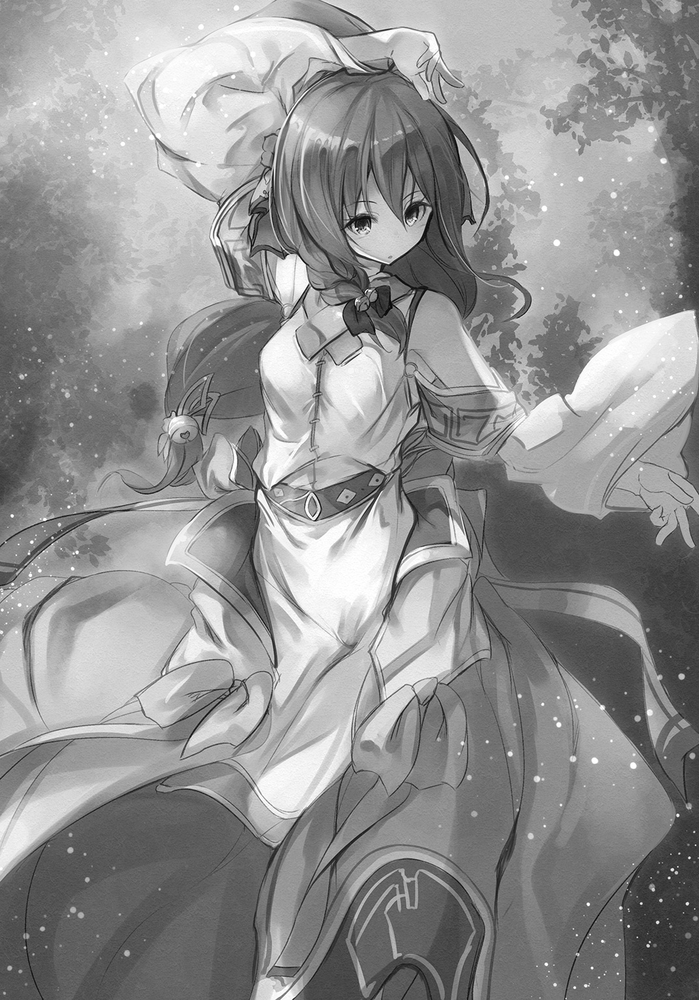
「そうだったのか」
てっきり、どこかの術師が儀式で結界を張ったのだと思っていた。ただ座っているだけで、村を守る役目を果たしていたとは。
だが、その力も肉を持った獣には効果はないらしい。闇の中に慣れ親しんだ息遣いを感じ、アレイは剣をそちらに向けた。
そこそこ、でかい。
おそらくは、ノギモだ。鼻につんとくる、独特の獣臭がある。
不意に、剣を持つ手から力が抜けていく感覚に襲われた。竜の呪いだ。これを使えば、ノギモを殺してしまうということだ。
この呪いで、いいところがあるとすれば、ある程度、相手の実力がわかることだ。剣を使って死ぬくらいなら、別にやり方がある。
剣を鞘に収めると、アレイはヤイバを下ろし、ミコネに押しやった。
「アレイ、何を!?」
手に力が戻ってくる。つまり。素手で殴り殺せるほど、弱くはないということだ。それで大体の大きさがわかった。油断をすればこちらが死ぬが、戦えない相手ではない。
「......来い」
腰を落とし、闇の中にそう呼びかける。
腹に重く響く叫びが上がり、僅かな明かりに浮かび上がる、潰れた鼻の両脇の長い牙が見えた。軽い地響きを足裏に感じながら、ぐうっと力を溜める。
次の瞬間、ずん、と痺れるような衝撃が背中に抜けた。
「アレイ！」
ミコネの悲鳴のような声が、闇を震わせる。
「......大丈夫だ」
言って、アレイは全身の筋肉に力を込めた。両手はがっしりと、ノギモの長い牙をつかんでいる。逃れようと暴れるが、蹄は土を搔くばかりだ。
「どっせい！」
気合と共に、思いきり腕を捻った。最後の最後に僅かに力が抜けたのは、致命の一撃を妨げる呪いの力だろう。
ノギモの首が重い音を立てて、そのまま横倒しになる。
獣は哀れな悲鳴を上げて短い脚をばたつかせたが、すぐに立ち上がると、そのまま一心不乱に駆けだし、逃げてしまった。
ヤイバにもう少し経験があれば、横倒しになった一瞬にとどめを刺せたかもしれないが、怯えきってミコネにしがみつくいまは、無理な話だった。
「やれやれ」
大きく息をつき、アレイは肩を回した。ノウギョウばかりで鈍ったかと思ったが、体に染み付いた勘と技術は簡単には消えないらしい。
「さて、帰るか。こんなところに長居は無用だ」
「はい」
まったく怯えた様子を見せず、ミコネは頷いた。ヤイバが森へ入ったと取り乱し、涙を浮かべていたのが噓のようだ。
あれは、ヤイバの実力を正しく見極めていて、それで案じていたということなのだろう。彼女自身は、森奥を怖れてはいないようだ。
「ほら、自分の足で歩け」
ヤイバの小さな背中を叩くと、彼の腰で、首を縛った瘦せ鳥が、ぶらんと揺れた。
☆
「えらそうに人に草を投げつけておいて、何？ 結局、獲れたのはそれだけ？」
机の上に置かれた瘦せ鳥を指して、サラリは容赦がなかった。
他の子供たちはおろおろしながら、どうしたらよいかわからず、目配せをし合っている。ミコネも不安げだ。
ただひとりアズマだけは、腕を組み、何故か薄い笑みを浮かべて、どこか微笑ましげだ。
「ミコネ姉さんや、アレイ兄さんに迷惑かけて、助けられて、あたしたちに心配かけて、それで、この鳥だけ？ 馬鹿じゃないの？ ぜんぜん見合わないじゃない！」
心配はしたのだな、とアレイは気づいたが黙っていた。
「......ごめん」
それだけいうのが、精一杯といった様子だった。目に涙が溜まっている。それがまたサラリの癇に障ったようだ。
「またそうやって泣く！ 泣けば許してもらえると思ってるわけ!? そんなんだったら、えらそうに猟師を気取るんじゃないわよ！」
ヤイバは破れるほど強く、服の裾をつかんだ。涙が落ちるのだけは何とか堪えている。
まあ、このくらいでいいだろう。
「サラリ、もうよせ」
「でも――」
「おまえもヤイバのことをとやかくいえるのか？ 結局、トマト畑の草のほとんどは、ササヤが抜いたんだろう？」
「そ、それは、ササヤがどうしてもやりたいって言うから――」
ササヤがびっくりした顔をして、
「わたし、そんなこと......」
「言ったよね？ ほら、言ったでしょ？ 自分の方はもう済んだから、手伝おうかって」
「それは言ったけど......いっしょに草を抜こうっていう意味で、わたしひとりでやるってことじゃないよ......」
「それは――」
「サラリ。噓はつくな」
ぴしりと言うと、サラリは口を尖らせて黙った。
「この話はもうしまいだ。ヤイバへの罰は長々が考えてくださるだろう。これ以上、俺たちがあれこれ言うことじゃない」
子供たちは、納得はしていないのだろうが、もう何も言わなかった。
その中にあってアズマだけは、どこか楽しげに瘦せ鳥を見ていた。
「......その鳥が、どうかしたか？」
「なあ、こん鳥、どうすんだ？」
「羽根を毟って、帽子の飾りに使うくらいしか役に立たないな。焼いても骨と皮ばかりで、食べるところはほとんどない」
「だったら、俺がもらってもええか？」
「かまわないが......土産にでもするのか？」
「いんや。こいつで、鶏がらスープを作ってみようかと思うてな。そうすれば、ラーメンが作れる」
ラウメン？ と子供たちが首を傾げる。
「......パン生地で作る別の食べ物だそうだ。スプというものが必要らしい」
「んだ。こん鳥は食うところがない言うけんど、丸ごとスープの材料になりそうだ。あ。もちろん内臓は抜かんといけんけんど」
アズマがにっと笑うと、ヤイバはそろりと顔を上げて彼を見た。
「......じゃあ、役に立つの？ オレの獲った鳥......」
「ああ。どうすればええか、ちゃんと覚えとくれよ？ いろんなもんに使えっから」
ヤイバは真剣な目で、しっかりと頷いた。
「っと、そろそろ俺は戻る時間みたいだから、明日、また呼んでくれ。そん時までに、必要な道具、揃えとくから。寸胴鍋とか、なさそうだかんな」
そう言って、アズマは消えた。
ズンドー鍋とはどういうものなのか、アレイには想像もつかなかった。
鍋自体は、こちらの世界にもある。湯を沸かしたり、様々な果実からマジュを作ったりするのに使う。
そんな道具を使って、いったい何を作ってくれるのだろうか。不安よりも楽しみが勝り、アレイは明日が待ち遠しかった。
だが、その前にやることがある。
罰を長々に決めてもらわねば。
アレイはヤイバの背中を軽く叩き、戸口に向かって歩き出した。ヤイバは不安そうだが、ひどいことにはなるまい。
子供たちが分担して行っている掃除を、一人で五日ほどやるといったところだろうか。
「しっかり反省するんだ」
肩に置いた手に力を籠めると、ヤイバは力なく頷いた。背後でサラリが、あんな言い方は駄目よ、とササヤに叱られていた。
☆
「こいつが、寸胴鍋だ」
翌朝、アズマが焜炉に置いたのは、鍋というよりも筒だった。持ってみると意外に軽く、鉄以外の金属でできているのだと思われた。
子供たちも興味津々といった様子でみている。
「こんでも小さい方だけんど、こん村で使うには丁度ええだろう。置いてくわけにはいかんから、同じもんを作るか、買うかすれば、色々便利だぞ」
「今度、鍛冶屋が来た時に訊いてみよう。大きさと形だけなら同じ物が作れるはずだ。重さだけはどうしようもないと思うが」
「こいつはアルミ製だかんなあ......」
アルミというのがこの鍋の材料の金属らしい。鉄、鉛、銅、が一般的な金属だ。あとは稀少金属がいくつかあるが、とても手に入るものではない。
「銅で作るのはどうだ？」
「おお、銅はあるんか。なら、そんで大丈夫だ。銅は熱の伝導率が高いからええぞ。そこそこ軽いしの」
ならば決まりだ。銅ならばそれほど高くもない。
「んじゃ、まずはこん鳥の羽根を毟って、それから内臓を抜く。アレイ、頼めっか？」
「ああ」
鳥の下処理なら慣れたものだ。
ヤイバが血抜きはしていたので、羽根を毟り、内臓を傷つけないように取り出した。それが済んだら水でよく洗い、残った血を扱き出す。
「脚や手羽は外すか？」
「いんや。そのままでかまわん。じゃあ、そいつをこいつに入れてくれ。そしたら次に、野菜をなんでも入れる」
村の森で採れた自生していた草実や草根を、アズマは次々と取り出して入れていく。
「この珠みたいなのは玉葱。この赤い根っこは人参。こん草は韮で、こいつは大蒜だ。保存庫になるっていう炭鉱の奥で、セロリが生えてるんも見つけたんけんど、こいつを入れっとスープが洋風になっから、今日は使わん。――で、水を注ぐ」
ヤイバが汲んできた水を、桶から鍋に、食材全体が浸るほど入れた。
「あとは火にかけて、じっと待つ。沸き始めてしばらくすると、汚れた泡みたいなんが浮かんでくっから、それは丁寧にとる。一時間くらいかのう」
「アズマ。こちらの一鐘は、一日を陽の傾きで日の出から日の入りまでを六等分にしているんだが、そちらも同じか？」
「あー......違うな。俺ん世界じゃ、一日を正確に二十四等分しとる。陽の出てる時間は、季節によって変わるだろ？ それには左右されん。けんどまあ、こっちの時間で言えば、半時間ってところかの」
アズマは頷いた。村の日時計を使えば時間は計れる。
「じゃあ、そん間に、麵を作ろうか。シズル、小麦粉を持ってきてくんれ」
「はい、師匠」
飛ぶように部屋を出て、シズルはすぐにコムギ粉を入れた小袋を持って戻ってきた。生き生きとした様子に、子供たちも少し戸惑っている。
アズマはコムギ粉を一枚板の机の上に出すと、小山のように盛り上げたあとで、火口のように中央部をへこませた。
「ここに卵をひとつ割りいれて、塩と、少しずつ水を加えながら練っていく」
白かった粉に卵の色がついて、黄色く変わる。ぼそぼそしてまとまりがなかった物が、ひとまとまりになって、やがて玉となった。
「さて、こんからだけんど、麵にはこしがなければなんねえ」
「こし？」
ササヤが自分の腰をみたが、それではないだろう。
「嚙みごたえっていえばええかの。それを出すために一番簡単な方法は、足で踏むことだ。布で包んで、盥ん中に入れて、ぐいぐいと踏む」
説明の通りに、シズルが準備をする。
「誰がやる？」
アレイたちは互いの顔を見合わせた。足で踏んだものを食べるというのは、嫌悪に似た気持ちが湧き上がってくる。土を踏む足は、穢れに一番近い場所だ。
「俺がやってもええけんど、できれば自分たちで感覚をつかんで欲しいんだけんど」
そう言われても、誰の足であっても抵抗がある。
「......あの、わたしが」
手をあげたのは、ミコネだった。
なるほど、とアレイは手を打った。巫女であるミコネが踏むのなら、穢れはない。むしろ聖なるものにすら感じられる。
「んじゃ、頼む」
頷き、ミコネは用意された水で足を洗ってから盥の中に足を踏み入れ、ぐい、とメン玉を踏んだ。最初はおそるおそる――それから次第に律動的に足を動かしていく。
その様子は、まるで祈りの舞踏のようであった。ミコネも興に乗ってきたのか、ただ踏むだけではなく、歌がその唇から流れだし、完全に祈りの場となった。
やがて歌と足が止まると、アズマが大きく手を叩いた。
「こんりゃ、すばらしい！ ええもんが見れた！」
ミコネは肩で息をしながら、にっこりと微笑んで盥から下りた。アズマは平たくなったメン玉を取り出すと、机の上に飾るように置いた。
「こんまんま、しばらく寝かせる――置いておくって意味だけんど」
「パンのときにもやったな」
「んだ。こいつは発酵させるわけじゃないけんど、大事だ。そん間に、スープの方を進めようか。――シズル、どうだね？」
「いい感じです」
ミコネがメンを踏む舞踏を披露している間、シズルは鍋を見ていたらしい。汚れた泡みたいなものをとっていたのだろう。
「ん、いい感じだ」
アズマは大きく頷いた。
中を覗くと、水が黄金を溶かしたような色に変わっていた。
なんとも言えない、よい香りがする。瘦せ鳥は煮ても焼いても臭かったのだが、それが噓のようにしない。
「不思議だ。鳥だけだと、こんな匂いにはならないんだが」
「野菜の力だあよ。肉だけじゃあ、嫌な臭いにしかならん。味も悪い。だけんど、野菜と一緒に煮ると、魔法みたいにうまいスープが取れる。これは、いろんな料理に使えるで。これで野菜を炊けば、そんだけで肉に負けねえおかずになんし、ありとあらゆるソースの元になる。味の世界が素晴らしく広がるんだあ」
よくはわからないが、これがあればうまいものが山と作れるのだということは、その場にいた全員が、感覚で理解できた。そろって唾を飲み込んだのが、その証だ。
「鳥の代わりに魚を使えば、また違った味になる。野菜は料理に使った残りでもええから、無駄なく食べつくすことができるんよ」
それは、ありがたい話だった。食べられるものはなんであれ、できるかぎり無駄にしたくはない。
「――んじゃあ、麵を切るかあ」
半時間が経ち、アズマは異界から持参した道具を机に出した。武器のような棒と、柄が刃の背についた巨大な小刀、それに持ち手のある板だ。
「よんく見て、覚えてな」
そう言うと、アズマは棒で器用にメン玉を平たく伸ばしていく。手の動きが独特でおもしろい。ある程度伸ばすと表面に粉を振り、それを巻くように折りたたんだ。
市場で売っている、敷き布のようだ。
板をその上にのせて押さえ、独特な形の小刀の刃を板に沿わせると、すとん、と落とすように切った。生地が太い糸ほどになって、ばらりとほぐれて落ちる。
「これを繰り返して、同じ太さに切るんだ」
すとん、すとん、と小気味よく小刀を落としていく。見事なものだ。ほとんど太さが揃っている。
「やってみ？」
巻きメンの半ばまで切ったアズマは、アレイに小刀を差し出した。
受け取り、アズマと場所を入れ替わって、同じように刃を落としてみる。
「お？ おお？」
押さえの板をずらすのが見た目よりも難しい。少し力を入れただけで、大きくずれてしまう。戻しても真っ直ぐにはなかなかならない。
「切ったら、板を動かすんじゃなくて、包丁で少しだけ押すようにすんだ」
「な、なるほど」
最初の位置に戻し、言われたとおりしてみると、先刻よりはきれいに切れた。そのまま、同じように、とんとんと切っていく。
「ん、上出来だ」
アズマにそう言ってもらえて、アレイはホッとした。
「んじゃ、次はこれをこんくらい、こんなふうに握って縮れさせるんだあ。そうすると、スープが絡んでうまい。力を入れすぎっと、潰れてただの固まりになっちまうから、気んつけて」
頷き、見よう見まねで、メンを握った。最初の二つはうまくいかなかったが、三つ目でコツをつかむことができ、あとは同じにやればよかった。
「よんし、これで麵はできた。んじゃ、こいつを茹でてラーメンを仕上げっか。――シズル、湯は沸いたか？」
「はい、師匠」
ズンドー鍋の隣の焜炉には大きな鍋が置かれ、湯が沸いていた。そこへ人数分のメンを投入する。メンはほぐれて、湯の中でゆらゆらと踊る。
そちらはシズルに任せて、アズマは机に大きめの椀を並べた。そこへ、異界から持ちこんだ容器から、黒っぽい液体を注いだ。
「それは？」
「こいつは、《いしる》ってんだ。シズルん故郷のウォルは、俺ん世界じゃたぶんナンプラーに近いから、これとは製法が違うんだけんど、魚介から作ったって点じゃあ同じだ。ウォルを作ったらそれを使えばええが、とりあえず、ラーメンがどんなもんか知ってもらうためだかんな、こいつで試すべ」
意味はあまりわからなかったが、とりあえずアレイは頷いた。別に毒を食わせようと思っているわけではあるまい。
アズマはズンドー鍋から黄金液を掬うと、それを椀に入れて混ぜた。
色は濃くなり、香りはさらに複雑になった。
これは、何とも表現のしようがない。これを正確に言い表すことができるのは、宮廷詩人くらいのものではないだろうか。
「麵を茹でる時間は、だいたい三分くらい。固さは好みだから、ちょっと食べてみて、それで決めてくれればええ」
サンプン、という単位はわからなかったが、体感で大まかには理解した。
「よんし」
アズマは大きく頷くと、笊でメンを掬いあげた。別の笊で蓋をして、大きく振る。ざっと湯が飛んで、土の床に染みを作った。
その熱いメンを素手でつかみ、等分に椀に入れていく。
黄金液の中に薄い黄色のメンが沈んでいるのは、不思議な光景だった。こんな食べ物は見たことがない。
「んじゃ、食べてみよう」
肉叉が全員に渡され、アレイは、刺し入れるようにしてメンを掬い、口に入れた。だらりと下がったメンを、どうして食べたらいいのかがわからない。
すると、アズマは器用にそれを吸った。ずるるる、という音は上品とは言えなかったが、彼がそうして食べているのだから、それが正式な作法なのだろう。
真似しようとしたが、うまくいかなかった。息を吸いながら食べるのが難しい。仕方なく、歯に挟んで一度止め、肉叉で持ち上げて口に押し入れるようにしながら食べた。
だが、うまい。
同じコムギなのに、パンとはまったく違う風味、味だ。食感も、弾力があっていい。縮れたメンに絡んだスプも、少しくせはあるが、うまい。
肉叉でメンを手繰る手が止まらない。あまり嚙まずに飲むと、つるつると喉を落ちていく感覚がおもしろい。
こんな食べ物が世の中にあることを、王族だって知らないだろう！
「うん、これはラーメンだ」
納得がいったように、アズマは頷いた。
「麵にはかん水を使ってねえから、正しくは生のパスタ麵なんだけんど、それっぽいスープを使うと、見事にラーメンだなあ」
しみじみという。
ラウメンでもパスタでも、どちらでもいい。これでコムギの新しい食べ方がわかった。それに、このスプというものも素晴らしい。
新しい食べ方と、このスプ。そして、マヨネーズー――草食が、これほど豊かだとは思いもしなかった。いずれも、野菜がなければ成り立たない。
すでに子供たちの顔に、飢えに怯える影はない。腹いっぱいとはいかないが、空腹で寝られないということは、もはやないのだ。
「オレのおかげだな！」
ラウメンをあっという間に平らげてしまったヤイバが、罰を命じられたことなど忘れたかのように胸を張った。
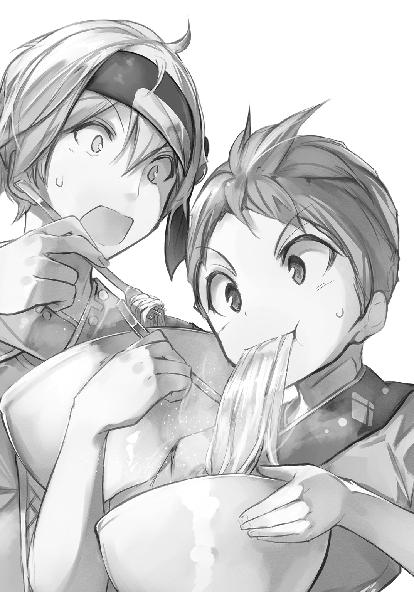
「オレの瘦せ鳥がなかったら、こいつは作れなかったんだから！」
「えらそうに言ってんな」
ふんぞり返った後頭部を、サラリが平手で叩いた。
「みんなに散々迷惑かけといて、まだ反省してないの？ 長々にいいつけるわよ？ 全然、反省してないって」
「よ、余計なこと言うなよな！」
「だったら、ちゃんと反省しろ。あたしたちが採った野菜がなかったら、この味は出ないんだから、むしろあたしたちのおかげよ」
むっとして、ヤイバとサラリは睨み合った。
「いいかげんにしろ」
溜息をついてアレイは椀を置いた。中はもちろん空だ。汁の一滴も残してはいない。
「誰の手柄でもない。みんなで頑張って、アズマに教わった結果だ。シズルのウォルの話がなかったら、この味はないんだしな」
アズマが頷く。隣でシズルは照れたように単眼鏡を持ち上げた。
「そうですよ」
空気をかえるように、ミコネが微笑みながら、ヤイバとサラリの肩に手を置く。
「誰のおかげかというのなら、それはもちろん森のおかげでしょう？ 鳥も、草も、森の恵みなのだから。わたしたちはそれを分けていただいただけ」
ミコネはまったく正しい。
子供たちはどこかまだ不満そうだが、鳥や草を生み出したのは、森でしかない。それを己の手柄のように言うのは、不敬というものだ。
「そん通りだあ」
感じ入ったように、アズマは大きく頷いた。
「農業は人の力んだけではどうにもならん。野菜を育てるんは、土だ。水だ。空気だ。俺らはそん手伝いをすることしかできん。それをわかってるあんたらは、シズルとおんなじで、きっといい農家になれる」
ミコネの頰が微かに赤くなり、子供たちの顔には自信と誇りのようなものが浮かんだ。
おまえならできる、と言われることがどれほど生きる力になるか、アレイは身を以て知っていた。かつて通った道だ。
しかしアレイは、彼らと同じ顔はできなかった。それを無邪気に信じるには、竜の呪いによる挫折は、あまりにも大きかった。
そうするしかないとわかっていても、剣を棄てた手で草を抜いていく人生が、これからの自分なのだとは、割り切ることはできなかった。
～第３話 終わり～
第４話 ハタケの秘密
～初めてのブルーベリーケーキ～
村の森の草実が生えた場所――ハタケ、というらしいが、余計な草を抜き、柵を作り終えるとようやく、それらしくなった。
それぞれには、生えている草の種類、どんなものが生るか、採りごろはいつか、などを書いた札が立てられている。
勝手に採らないように、と村の人々には長々から厳命が下されていた。と言っても、そんなことをするのは、子供たちぐらいなのだが。
老人たちは、腹が膨れはしても草食にはやはり抵抗感があるのか、あまり積極的ではない。飢えない程度には食べているが、それだけだ。
例外は長々で、彼女はとにかく何でも食べ、特にラウメンを気に入っていた。
川で獲った小魚で作ったウォルは、色々と使い勝手がいい。
ラウメンのスプもだが、焼いた野菜に味をつけたり、マヨネーズーに混ぜると違った味わいになって、パンに塗ることもできた。
炭鉱の奥の倉庫には、採れた野菜が随分増えた。数日はもつし、限界が来たら、鳥スプの材料にするか、何種類かの野菜は干して保存することができるとも教わった。
アズマは毎日召喚されるわけではないので、いない間のハタケの管理は、主にシズルが任されている。
彼女はほぼ一日中ハタケを歩き回って、村にいないことが多い。
特に熱心に見ているのが、森外れの斜面のハタケだ。そこでは、コメを実らす、オカボが育っている。
森に詳しい彼女も、オカボがコメを実らせているところを見たことがないと言うから、他の草よりも余計に手と目をかけてやらなければ、ならないのだろう。
シズルは、以前よりも生き生きとしている。
それは実に喜ばしいことだが、代わりに他の子供たちとはあまり過ごさなくなった。
シズルは構わない様子だが、ササヤとサラリ――特にサラリは、おもしろくなさそうだ。以前はどこか自分を頼るようなところがあったからだろう。
ヤイバが、瘦せ鳥狩りに夢中なのもあるかもしれない。肉としては役に立たない鳥が、スプには欠かせないとわかってからは、熱心に狩りに行っている。
あの大きさの鳥なら、アレイが狩っても呪いは発動しないが、ヤイバに任せている。先のことを考えれば、ヤイバには狩りの腕を上げてもらわねばならない。
草食は食卓を豊かにしてくれたが、やはり肉は必要だ。
アズマには悪いが、村の長たちは、聖典に卑しい行為であるとされているものを、ずっと続けたいとは思っていなかった。
とはいえ、ヤイバがまともに狩りができるようになるまでには、十年近くはかかる。その頃には、すっかり当たり前になっているかもしれなかった。
事実、食べ盛りの子供たちにはもう、そうした抵抗感はないように見える。
アレイ自身、新しい野菜を食べるときには僅かに心が騒ぐが、一度でも口にしたものであれば、もう何も思わなかった。
だが、それはあくまでも村の中だけのこと。
他の村の人々に知られれば、どのような中傷を受けるかわからない。出稼ぎに出ている女たちにも悪い影響が出るかも知れず、村の秘密にしておかねばならない。
そのことは、子供たちに、よくよく言い含めておく必要がある。
☆
「明日、村に商人が来る」
アレイは長々と共に、集めた子供たちをぐるりと見渡した。一応、神妙な顔をしているが、早く終われと思っているに違いなかった。
自分がそうだったから、わかる。
だがこれは、単なる説法とは違う。村の存続がかかった話だ。子供といえど、真面目に聞いてもらわなければならない。
「商人に、わたしたちが草食を行っていることを知られてはならぬ。決して口外せぬよう、よくよく気をつけるのじゃ。森にも近寄らせてはならない」
「どうして？ お婆さま」
サラリが怪訝そうに首を傾げた。
「あんなにおいしいのに。前みたいにお腹だって空かないし、とってもいいことだわ」
ササヤとヤイバも頷く。
「草食は卑しい行為だからじゃ。獣の行いだからじゃ。生きるため、我らは仕方なく草食に手を出したが、決してよい行いではない」
「じゃあ、アズマは悪い人なの？」
サラリの言葉に、シズルの目が剣呑な光を帯び、アレイは、いや、と割って入った。
「それは違うぞ、サラリ。アズマは俺たちとは信じる神が違うんだ。だから、俺たちにとってはよくないことでも、アズマにとってはそうじゃないってだけだ」
シズルが僅かに頷く。
砂漠の民の一部は、独自の神を持っていると聞いたことがある。もしかしたらシズルはその一族なのかもしれない。
「......よくわかんない」
それはそうだろう。アレイ自身、矛盾を感じている。生きるために選択したことであり、後悔はないが、いざ飢えの心配がなくなると後ろめたさを覚えずにはいられない。
自分ですらこうなのだから、巫女である長々や、その後継者たるミコネの心中は、推し量ることも憚られた。
よいか、と長々は子供たちを見回した。
「我らは、生きるために卑しくもなろう、と決めた。だが、それを余所者が知れば、我らをそうした目で見、蔑むじゃろう。それはこの地に余計な騒ぎを持ち込むことになろう。町に出た娘たちには、特に悪い影響が出かねぬ。働き口を失うだけならまだいい。獣に堕ちたのじゃからと獣と同じ扱いを受けるかも知れぬ」
もはや送金もしてはこない、村を棄てて新たな人生を歩んでいる女たちであっても、長々にとってはいつまでもこの村の娘なのだ。
「それに、じゃ。これを知れば、商人は我らに物を売らぬし、買わぬようになるかも知れぬ。そうなれば、日々の生活に必要なさまざまなものが手に入らなくなる。服や、塩漬け肉や、塩や酒、桶などもそうじゃ。おまえたちはいらぬと言うかも知れぬが、勉強の道具も、祈りに必要な祭具も、商人から買わねばならん」
ようやく深刻さがわかったのか、子供たちの顔が真剣なものに変わった。
聖典を読むため、子供たちは文字の読み書きを習う。そのための一式も、商人から買わなければならないのだ。
「わかったら、草食のことは決して口外してはならぬ。ハタケの存在も知られてはならぬ。よくよく肝に銘じておくのじゃ。よいな？」
子供たちはしっかりと頷いた。適当な相槌ではない。
「長々。商人連中には、俺から、森奥の獣が周囲をうろついていると話します。村の中にいれば結界があるから安全だが、森に入れば魂ごと食われると」
「......うむ」
長々は、重々しく頷いた。
それにしても、長々は、前より若くなったように見える。もちろんミコネほどに若返ったということではないが、肌に張りが出て、皺が減った気がする。
その老婆は、怖い目で子供たちをもう一度ぐるりと見た。
「では、よいな。決して悟られるでないぞ――決して、じゃ。知られれば、我らは獣のように扱われ、鎖に繫がれることになるやもしれぬのじゃからのう！」
長々は目を剝き、枯れ枝のような指で首を搔き毟る真似をした。
アレイは苦笑しそうになったが、何とか堪えた。脅しすぎだとは思うが、大袈裟に過ぎるとも言えない。
何であれ、用心に越したことはない。人は、掌を簡単に返す。それは、竜の呪いを受けたアレイの、身を以て知った事実だった。
☆
ギギュアが商隊を率いてこの村に商売に来るのは、これで三度目であったが、あくまでもついででしかなかった。
正直、たいした稼ぎにはならない。だが、その大したことのない稼ぎをおろそかにしない者が金をつかむのが、商売人の世界だ。
猟師になる男が絶え、次代の若者はまだ子供だという村に、高名な冒険者が戻ったと聞き、これは良い商売になると期待したのだが、その当ては外れてしまった。
戻った冒険者が、別の意味で名高い男であったのだ。
《竜呪のアレイ》――迷宮の深奥部に棲む竜に不殺の呪いをかけられ、冒険者を引退したという話は、都で知らぬものはいなかった。
敵を殺せない男に冒険者は務まらない。引退は、せざるを得なかったのだ。
しばらくの間、男は町に留まり、呪いを解く方法を探していたようだ。
だが、竜の呪いを人の知恵でどうにかできるはずもなく、どうあっても解呪ができないとわかると、それまでに稼いだ金を湯水のように使い、酒の湖に溺れて沈み、体を壊して故郷に戻ったと聞いた。
それが、この村だったのだ。
だが、噂というものはやはり当てにならない。《竜呪のアレイ》は健康そうだ。村人たちも困窮しているようには見えなかった。
むしろ、豊かに肥えた自分たちの方が不健康そうに見える。
肥満は豊潤の証だが、肌の艶はこの村の長々の方が良いのではないかと思える。自分たちのは、ただ脂でてかっているだけだ。
「では、干し肉の樽がひとつと、直しの服が十着。靴が七足。文房具の補充と、油も、と。これで間違いないですか？」
目録を確認し、長々は頷いた。実質、交渉をしているのは隣に立つ若い巫女だった。アレイはその後ろで、怖い顔をして睨みを利かせている。
前回も、その前も、こんな態度ではなかった。何を警戒しているのだろうか？
「何か気になることでも？」
顔に出てしまったのか、長々はやけに張りのある声で訊いてきた。
「あ、いえ。なにやら冒険者殿の気が張り詰めているご様子ですので......」
「ほほほ、さすがは商人殿。目端が利く」
長々は笑ったが、皺に埋もれた目はまったくの逆だった。
「何、大したことではありませぬよ。森奥が騒がしくなって、獣や幽鬼が近くまで来ているだけのこと」
ギギュアは、棒を飲んだように背筋が伸びた。
だけのこと、ではない。恐ろしい事態ではないか。獣はともかく、実体のない幽鬼などは、自分たちにはどうすることもできない。
「いやいや、案じめさるな。村の周囲には強力な結界を張っておる。森に近づかなければ、何の危険もないよ」
そう言って長々は笑ったが、その笑みはどんな幽鬼よりも空恐ろしく見えた。
「近づきません、決して」
ギギュアは手を胸に当て、早く用事を済ませて去ろう、と心に決めた。服の直しなどがあるから半日は動けないが、長居をする気はなかった。
☆
「......わけがわかんない」
ハタケの草を抜きながら、サラリは唇を尖らせた。それにしても、余計な草は、抜いても抜いても生えてくる。本当にきりがなかった。
けれど、この地味な作業が収穫量を増やすためといわれれば、やらないわけにはいかない。トマトはたくさん食べたかった。
「こんなにおいしいのに、それがいけないことだなんて。本当は、あたしたちに食べさせたくないから、卑しいとか言ってるんじゃないのかな」
「サラリちゃん、そんなこと言ったら駄目よ」
たしなめるように、ササヤが言う。
彼女はひとつ年が下の十三歳だったが、子供たちの中では一番しっかりしていて、ミコネに次いで、お姉さんのように振る舞う。
背はサラリの方が拳ひとつ分も高いが、ササヤの方が女らしいふくよかさがあった。
何よりサラリは、彼女の赤い髪がうらやましかった。トマトの色にとても近い。自分の髪は蜜の色で、これも嫌いではなかったが、ササヤの色の方が良かった。
「聖典にそう書いてあるんだから、何か理由があるのよ」
「理由って？」
ササヤは、ううん、と唸った。少し下がり気味の目が余計に下がる。その間も、草を抜く手は止まらないのだから、本当に真面目だ。
「......おいしすぎるから？」
確かに、野菜はおいしい。それ単品だとそうでもないが、何かと組み合わせたりするとまったく違うものになる。それに、スプとソスは、野菜がなければ作れない。
「おいしすぎると、何で駄目なの？」
「おいしいものは、ずっと食べていたくなるからとかじゃないかなあ。そうしたら、お仕事にならないでしょう？ 食べすぎると太るし」
「そうかなあ......」
どうも納得がいかない。
太っているのは、野菜を食べたこともないだろう、いま村に来ている商人たちのほうだ。顔がぎとぎとしていて、滑りそうだ。
それに比べて長々は、近頃、若返ったような気がする。お婆さんには違いないけれど、曲がっていた腰が、少し真っ直ぐになってきたような。
「駄目だよ、サラリちゃん」
たしなめるように、ササヤは眉間に皺を寄せた。
「聖典を疑うようなこと言っちゃ。どこで魔鬼が聞いてるかわからないんだから。森奥に連れていかれちゃうよ？」
「ちょっ、やめてよ......」
心底からゾッとするようなことを、ササヤは平気で言う。
彼女は心から聖典を信じている。
誰かに打ち明けたことはないが、正直、サラリはそれほどでもなかった。全てが間違っているとは思わないが、ところどころ変だと思う箇所がないわけではない。
ヤイバはそもそも内容を理解していないし、シズルは砂漠の民だからなのか、聖典などどうでもいいと思っている感じがする。ここで生きていくしかないから、仕方なく学んでいるのかもしれない。
「......そういえば、ヤイバの奴、どこに行ったの？」
これ以上、聖典のことで言い合いをしたくなかったので、サラリは話を変えることにした。いつも問題を起こす男の子のことなら、同じ気持ちになれる。
「あいつも今日はここで草を抜くはずだったのに」
「たぶん、瘦せ鳥を獲りにいったんじゃないかなあ......。あの子、やっぱりそっちの方が好きなのよね、男の子だから」
「好き嫌いで仕事を選んでいいなら、あたしだってこんな草取りより、木工作業をしたいよ」
木を削って、椀や皿、肉叉や匙を作るのは楽しかった。
サラリが木工作業を手伝っている老婆は、年のせいかあまり多くを作れない。
自分に任せてもらえれば、という思いはあるが、十五になるまでは大人の仕事はできない掟になっている。聖典によって、そう定められているのだ。
「ササヤは将来、どうするの？」
「わたし？ ううん......」
ササヤは、本気で悩んで首を捻った。
「立派な猟師の男の子をお婿さんに迎えて、村の役に立つことかな？」
「............」
ササヤのことは好きだが、こういうところはついていけない。
シズルも同じような女の子だと思っていたのだが、アズマを師匠と呼び、ノウギョウに夢中になっているところを見ると、そうではなかったようだ。
「あたしは、そんなのごめんだわ」
げえ、と舌を出す。
「あたしの人生は、村のためにあるわけじゃないもの。姉さんたちも皆そう思ったから、町にいって帰ってこないんじゃない？」
「うん、いいと思うよ？ サラリちゃんはサラリちゃんだもの。けど、わたしはこの村が好きだから、この村を好きになってくれる猟師とここで暮らしたいの」
にこにこと微笑みながら、本気で言っている。
「......別に、ササヤがそうしたいんなら、それでいいけどさ......」
ササヤの言う通り、人の夢に良いも悪いもない。本人がそうしたいと言っているものを、間違っているとは言えなかった。
会話はそこで途切れてしまい、あとは黙々と草を抜いた。おかげで随分とはかどり、思っていたよりも早く終わってしまった。
「さあ、済んだ」
ササヤは手を叩いて土を落とした。
今日は一日、ハタケの世話をするように言い付かっている。
商人に会わせないためだというのはわかるけれど、ここのことを言うはずがないのに、信用してもらえていないのは腹が立つ。
けれどそんなことを思っているのは、どうやら自分だけのようだった。
ヤイバは大人にあれこれ言われないからと好きに森を駆け回っているし、シズルは好きなだけ森にいられるのが嬉しいようだ。
ササヤは――大人に言われた通りに、いい子でいるのが好きなのだ。
「まだ日が高いね。どうする？」
「シズルじゃないけど、そこらへんをぶらぶらするしかないんじゃない？ 日が暮れるまで、戻るわけにはいかないんだし」
「じゃあ、そうしましょう」
ササヤはいまだしゃがんだままのサラリに、堂々とした前掛け姿のまま、まだ少し土のついている手を差し出した。
☆
なにかおかしい、とギギュアの鼻が言っていた。
金の匂いがする。
それは商人として培ってきた勘のようなもので、本当に鼻の奥がつんとするのだ。
この村の連中は困窮しているはずなのに、飢えている様子はない。
塩漬け肉の樽を見たときの目の輝きを見れば、肉が乏しいのは事実だとわかったが、それにしては、態度にどこか余裕めいたところがあった。
売り手が優位にあるのは明らかなので、多少、吹っかけるつもりだったのだが、その値段ならいらない、と言わんばかりの態度で交渉に臨んできたため、いつもどおりの値で売るしかなかった。
聞いていた話と違う。その理由がわからない。
何人かの老婆にカマをかけてみたのだが、さすがに長く生きているだけあって、のらりくらりとかわされてしまった。
二人の若者も同じだ。娘の方はにこにこと微笑むばかりで口をきかず、男の方は、ああ、とか、まあ、とか言うばかりで要領を得ない。
この村には他に、成人していない子供が数名いるはずなのだが、姿が見えなかった。この村の周りに、遊びに行く場所などない。あるとすれば森くらいだが、そこはいま、森奥と同じくらい危険らしい。
ギギュアは顎を撫でながら、首を捻った。
（待てよ......？）
森には本当に、森奥の魔が広がっているのだろうか。村人の余裕の秘密は、森にこそあるのだとしたら？
子供たちがいないのは、森に行かされて戻らないようにいい含められているのだとしたら？
それならば、姿が見えないことも納得がいく。
――金の匂いがする。
森奥の魔を理由にしてまで隠したいものがあるなら、金にならないはずがない。ギギュアは是が非でも、その正体を確かめたくなった。
とはいえ、こうした小さな村では長々の命令は強い効力を持つ。村には個々の儀式めいた儀式や規範があり、外の人間であっても村にいる間はそれに縛られる。
もしも破れば、最悪、殺されることもある。
実際、そうした商人を、ギギュアは何人か知っていた。中央の法も、こうした辺境にまでは及ばないのだ。そもそも法を守らせる者がいない。
（やるなら、用心深くやらねばな......）
商隊の使用人と持ってきた荷物についてあれこれとやり取りをする村人たちの様子を横目に入れつつ、ギギュアは森に入るにはどんな魔除けが必要かを考えた。
☆
「これ、どう思う？」
目前の背の低い木に生る綺麗な粒を見ながら、サラリはそう呟いた。木といっても、子供の背丈ほどもないから、これは草だ。
いままではもちろん見向きもしなかった。
ブレプに似た房をつけているが、ブレプとは違う。粒もずっと小さいし、ひとつひとつが小さい花をつけている。
色は薄い紫で、鼻を近づけて嗅ぐと甘い香りがする。
「どうって？」
何が言いたいかはわかっているくせに、ササヤはあえて、問いで返してくる。
「わかってるでしょ？ 食べられるかなって、こと」
言うと、ササヤは眉をしかめる。
あれだけパンを食べているのに、彼女はいまだに草食に抵抗がある――もしくは、あるという態度を取りつづけている。
「知ることが必要？」
サラリは頷いた。
そうすると、ササヤの眉間の皺はより深くなった。
「そりゃあ、食べられるかもしれないけど、食べる必要、ある？ いまある草で十分だと思ううけど......」
「そんなことないわよ。寒くなれば、がくんと採れるものがなくなるって、アズマが言ってたし。だったら少しでも、食べられる草があった方がいいでしょ？」
「けど、ちっともおいしそうじゃないよ？」
「そう？ ブレプみたいじゃない？ 色も綺麗だし」
別に、ササヤに許可を求めているわけではない。食べられるかどうか、どう思うかを聞きたかっただけだ。意見がないのなら、それはそれでいい。
サラリは一房、草実を枝から千切った。ブレプに比べると、実の皮はしっかりして厚そうだ。鼻を近づけて匂いを嗅ぐと、淡い甘い匂いがした。
引っ張ると、実は簡単に取れた。
「やめなよ......」
ササヤはそう言ったが、それが却ってサラリのやる気に火をつけた。サラリは見せつけるように、その草実を口に放り込んだ。
奥歯で嚙み潰そうとしたのだが、弾力がすごかった。実が、食われてなるものか、と押し返してきているみたいだった。
だがそれも、空しい抵抗でしかない。ぷちっという音と共に実は弾け、中からとろりとした汁があふれた。甘味よりも酸味の方が際立っている。
「......おいしい」
思わず呟くと、ササヤが懐疑的にサラリを見た。
「本当だって！ こんなの食べたことない！ 不思議な味......あんまり甘くないんだけど、すごくおいしい！」
「きゃ！」
ササヤが短く悲鳴を上げた。
「何？」
「口！ 口！」
口がなんだというのだ。首を傾げながら手の甲で、ぐい、と拭うと肌が青紫色に染まった。
ぎょっとして、背囊から銅鏡を出して覗き込むと、なるほど、歯がおかしな色に染まっている。けれど、指で擦ると簡単に元の白に戻った。
「平気よ。果物の中にもあるじゃない。色がつくの。それと同じでしょ？ 擦れば落ちるんだし、問題ないわよ」
本当は少し不安も残っていたが、ササヤに弱みを見せたくはなかった。だから代わりに、もっとたくさん、いっぺんに草実を頰張って見せた。
ぷちぷちぷちと、口の中で草実がはじける感じが気持ちがいい。それに、ブレプもそうだが一粒ずつ食べるより、こうしていっぺんに食べた方がおいしい。
「ふん」
実を嚙み潰しながら、サラリは草実の房を突き出した。
ササヤは躊躇ったが、サラリが余りにおいしそうに食べているものだからか、結局はそれを受けとった。細い指で実を一粒取り、口に入れる。
おそるおそるといった態で実を嚙み潰すと、その瞬間、表情が変わった。
「おいしい」
勝った、とサラリは胸の中で拳を握った。この草実がおいしいのは、自分の手柄ではないのだが、それでもそう思った。
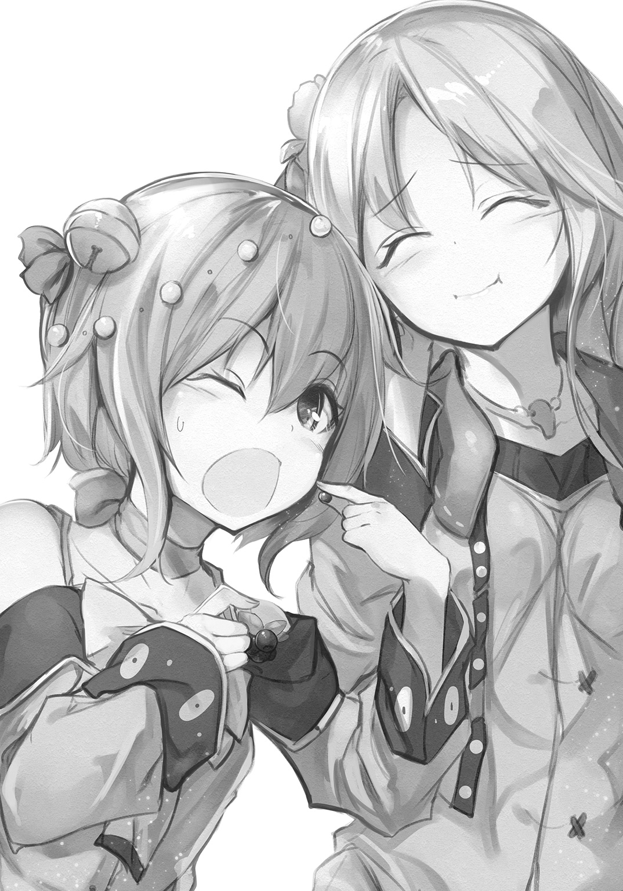
「でしょ？ もっとあるかもしれないから、探そうよ。これでマジュを作ったら、パンがおいしくなるよ、きっと！ お菓子みたいに！」
ササヤの目が大きく見開かれて、きらきらと輝いた。
お菓子！
この魅惑の言葉に逆らえる子供なんかいない。
果物を花の蜜と煮つめたマジュは、肉に塗って食べるソスのひとつだが、パンに塗ってもおいしいはずだった。果物はオルトの季節まで待たないと実らないが、これならばいま、マジュにすることができそうだ。
そうすれば、菓子のようにあのパンを食べることができるはずだ。
「わかった。探しましょう」
ササヤの返事に、そうこなくっちゃ、とサラリは彼女の二の腕を叩いた。
☆
（とりあえず、聖典と、儀式用の小刀、古い聖水......でいいか）
普段は木箱の奥に放り込んだままで、すっかり埃を被っていた品々を引っ張り出し、ギギュアは懐にねじ込んだ。
これらがあれば幽鬼が出ても追い払うことは可能なはずだった。
血肉を持った魔物が相手では、こんなものはたいした役には立たないだろうが、その心配はしていなかった。
もしこの周辺に魔獣が出たのなら、村はとっくに滅んでいるはずだ。
だが、そうはなっていない。
にもかかわらず、自分たちを森に近づかせないようにするということは、そこに何か隠したいものがあるということだ。
すなわち、金。
金貨や金塊そのものではなくとも、何かしら金につながる何かが隠されているに違いない。それは村の老婆たちの健康に、関係があるかもしれなかった。
健康は、裕福なほど切実な問題だ。解決できるなら、いくらでも金を出すという連中を、ギギュアはたくさん知っていた。
問題はどうやって忍び込むかだが、用心棒でもある男が邪魔だった。あの目端の利く男が見張っている限り、好機はないだろう。
だが、男も人間だ。生理的な欲求には逆らえまい。いずれその時が来る。それまでは、ひたすら待つしかない。
そしてその好機は、思っていたよりも早く訪れることになった。
男は昼を過ぎてすぐ、若い巫女に見張りを任せ、便所に向かった。
（いましかない）
ぼんやりした若い巫女の目を搔い潜ることは、それほど難しいことではない。実際、彼女は普段は目にすることの無い、外の人間の作業に夢中だった。
自分も外の人間の一人だが、目立たないようにすればいいだけのことだ。
ギギュアは、建物の陰から陰に移動した。森の入り口にたどり着くのは、思った通り、簡単だった。しかし、そこから先が、難しかった。
目に見える邪魔があるわけではない。柵もない。だが、入り口に置いてある、二つの像が、結界を示すそれが、見えない壁となって立ちはだかっている。
聖なるものへの怖れが、足を竦ませる。
結界を破ったらどうなるのか――恐怖に背中の毛が逆立ったが、ギギュアは首を振ってそれを追い払った。
これはまやかしだ。金になる何かを隠すために、結界を張ったと言っているのだ。森奥は静寂に包まれたままだし、影のモノは何も出て来てはいない。
自分にそう言い聞かせ、ギギュアは一歩を踏み出した。
（ほうら、みろ！）
結界を越えたはずだが、何も感じなかった。びりっともしなかったし、寒くなったりもしなかった。何も変わらない。結界を張ったなどというのは、噓だったのだ。
やはり、ここには何かが隠されている――それをはっきりと確信し、ギギュアは森の奥へと入っていった。
しばらくの間は、何の変哲もないただの森だった。
だが、さらに奥へと進むと、意図的に枝を切り落として日が差し込むようにした場所にでくわした。そこの草は綺麗に刈り取られていて、禿げ地になっていた。
屈んで調べると、乾いた草の実がいくつも落ちていたが、薬の材料にもならないような、雑草の実だった。
鳥や虫なら喜んで食べるだろうが、こんなものは金にはならない。
もっと奥だろうか。周囲を見回したギギュアは、茂みの奥で何かが動くのを見た。
（まさか、幽鬼!?）
懐に手を突っ込んで、聖典に触れた。
だがすぐに村の娘のものと思しき話し声がして、胸を撫で下ろした。姿が見えないと思ったら、やはり森にいたのだ。
これでますます確信が持てた。ここが本当に危険な場所なら、娘子がいるはずがない。
後ろからそっと近づいていくと、ぼそぼそとした話し声が聞こえてきた。
「――そんなに食べたら、なくなっちゃうよ」
「――平気、平気。あっちにもあったし」
そんなことを言っていた。
何を食べているのだろうか？ あった、とはどういうことだろう。獣は、あった、とは言わないだろう。
茂みを抜けると、確かに村の娘子が二人、背中を向けてしゃがんでいた。
「君たち」
脅かそうと思い、ギギュアは不意打ちに声をかけた。そうすれば、自分に有利に話を聞きだせると考えて。
案の定、娘子たちは飛び上がって振り向いた。
「――うわあ！」
その顔を見た途端、悲鳴を上げたのはギギュアのほうだった。振り向いた娘子たちも声を上げたが、目を剝いた娘子たちのそれは、魔物の咆哮としか思えなかった。
娘子たちは、人間ではなかった。
その口は青紫色の血に塗れていて、同じ血で染まった手でつかみかかってくるように見え、転がるようにして逃げ出した。
老巫女の言ったことは噓ではなかった。結界を破った自分にどんな罰が下るのかを思い、ギギュアは許しを請いながら、必死に走った。
☆
「んなことがあったんか！」
先日の顚末を聞いたアズマは、腹を抱えて笑った。
だが、笑い事ではなかった。
商人に危うく草食を知られるところだった。あの怯えようを思えば、ハタケには気づかなかったようだが、危ないところだった。
「けんど、そん実を食べたんは、あんま感心はせんなあ」
「え？ どうして？」
サラリが、少し機嫌を損ねた様子で訊いた。誉めてもらえると思っていた節があるから、尚更、癇に障ったのだろう。
「毒があったかもしれんからさ。植物は、何でも食べられるわけじゃないんよ？ 中には猛毒を持つ花や球根だってあるんだあ」
毒、と聞いて、ササヤの顔が青ざめた。あわてて指を口に突っ込もうとする。
「あわてんな」
笑いながら、アズマはササヤの手を止めた。
「こいつは、たぶん大丈夫だんよ。俺ん世界にも似たもんがある。ブルーベリーっていうんだけんどな。それと同じもんだと思う」
娘たちは、ホッとした様子で肩の力を抜いた。そんな二人を交互に見たアズマは、膝を進めて、ええか、と言った。
「毒の有無を確かめるには、まず、匂いをかぐ」
そう言って、自分の逞しい鼻を指した。
「そんで大丈夫そうだったら、今度は潰してみる。指がぴりぴりしたら危ない。そうでなかったら、今度は潰したそれを、ちょっと嘗めてみる」
出した舌を指す。
「ちょっとだど？ んで、しばらく様子を見て、しびれたり気持ちが悪くなったりしなかったら、ちょっと食べてみんだ。そうやって、確認する」
「結局、食べてみるしかないのか？」
「んだ」
少し呆れ気味に言ったアレイに、アズマは力強く頷いた。
「人は、そうやって食えるもんと食えんもんを分けてきたんだ。まあ、動物に食わせてみるって手もあるけんど、動物が平気だから人も平気とは言えんからの」
確かにそうだ。獣は、人が食べたら確実に腹を下すような腐った肉でも平気で食べる。
そもそも獣は、肉を生のまま食べることができるのだから、草実も、彼らが大丈夫でも、人も安全とは言えない。
納得がいったのか、ササヤたちもそれ以上は反論しなかった。
「けんど、これはええもんだぞ」
がらりと変わって、アズマは二人に笑いかけた。
「こん立派なブルーベリーは、俺ん世界じゃ見ん。香りもええ。うんまいジャムができるぞ」
「ジャム？」
「こんいう実を潰して、砂糖で甘く煮詰めたもんだ」
「ああ、マジュか」
果実で似たようなものをこちらでも作っている。主に酒や湯に溶かして飲んだりする。そのまま食べることもあるが、その場合は薬としてだ。
「パンに塗ったら、うまいぞ」
アズマの言葉に、子供たちが目を輝かす。ササヤとサラリは、やっぱり、という顔をした。このブル・ベリィという草実を、マジュにすることを考えていたのだろうか。
「師匠、ちょっと見てもらえますか？」
シズルが革袋を持って話に割って入り、彼の前にそれを置いた。
「これは？」
「コムギの実です。新しいハタケを見つけたんですけど、そこのコムギが、ほかと少し違っている気がして」
アズマは袋の口を開いて中身を出し、コムギの実を一粒つまむと、軽く指で押した。
「ほう。こいつは軟質小麦だあ」
「軟質？ 柔らかいのか？」
「んだ。硬質小麦は強いこしがあっから、パンや麵なんかに向いとるんだけど、軟質小麦は天麩羅やフライ、ケーキのスポンジなんかに向いとる」
「使える料理が違うということか？」
「そういうこったな。けんど、これで料理の幅が広がっぞ。俺はあんま得意じゃねえけっど、ケーキだって焼ける」
アズマは、そうだ、といわんばかりに手を叩いた。
「アレイ、おまえさん、自分でバターは作れっか？」
「ああ。村の固乳は自家製だ」
革袋に獣乳を入れて、機械で回す。根気よくそうしていると、その内に水分が分離して、固乳と呼ばれるものになる。
「んじゃ、少しゆるめに作っといてくれっか？ それと、ブルーベリーのジャムも頼むわ。明日、道具を持って、また来っから」
「構わないが......ケィキとはなんだ？」
「俺ん世界の、菓子だな」
菓子！ そう聞いて、子供たちは目を輝かせた。
彼らの後ろに立っていたミコネが、慌てた様子で目を逸らしたが、子供らと同じように瞳をきらきらさせた顔を、アレイは見逃していなかった。
異界の菓子――果たしてそれがどんなものなのか、想像もつかない。固乳とマジュを使うというのだから、サン・ドイチのようなものだろうか。
明日のお楽しみだ、とでも言いたげに、アズマは楽しげに笑んでいる。
☆
翌日、再び召喚されたアズマが持ってきた品は、材質は異なるが、多くがこちらの世界にもあるものだった。だが、ひとつだけ奇妙な物が混じっていた。
曲げた針金を何本も重ねた骨組みだけの小さな棍棒、とでも言えばいいだろうか。アズマはそれを、泡立て器、と言った。コムギ粉と他の材料を混ぜやすくするものらしい。
「頼んどいたもんは？」
「ああ、用意した」
少しゆるめに作った固乳と、ブル・べリィのマジュ、卵、獣乳、あとは軟質コムギを挽いて作った薄力粉。パンの原料となる硬質コムギから作った粉は強力粉といって、種類を分けるのだということも、昨日、教わった。
その薄力粉は、笊でふるってある。
「んじゃ、始めっか」
ずらりと並んだ材料を前に、アズマは気合を入れるように手を揉んだ。子供たちは、これから何が起きるのかと、食い入るように見ている。
アズマはただやって見せるわけではない。覚えれば、自分たちでも出来るようになるのだ。真剣にもなる。
「まずは、ケーキの土台になるスポンジいうもんをつくる。パンに似とるけど、全然違うもんだ。しっとりしてて、ふわっとしとる――うまく出来上がればだけんど」
アズマはにやりとすると、打ち出し板金で作った大きな椀を取り出し、そこへ卵を三個、割りいれた。
「まんず、こいつを搔き混ぜる」
泡立て器を手にすると、卵をほぐした。あっという間に滑らかな卵液になる。
「んで、ここへ本当は砂糖を入れるんだけんど、いまはないから蜜で代用して、さらによく混ぜる。とにかく混ぜる」
じゃかじゃかと金属同士がぶつかって軽快な音を立てる。アズマの腕の筋肉が盛り上がり、手首の返しが見えぬほど速く動く。
その内に、蜜入り卵液に変化が起きた。水っぽかったのが粘りが出てきて、色も極淡い黄色に変わってきた。
「こんなもんかな」
泡立て器を持ち上げると、卵液が絡んで、とろりと落ちる。
アズマは大椀の縁に泡立て器を軽く叩いて卵液を落とすと、薄力粉を均一に、蓋をするように卵液にかけた。
そうしておいて今度は、木箆で大椀の底から卵液を掬うようにして混ぜる。
「ここで大事なんは、練らんことらしい。泡を潰すんもよくない。空気が抜けてしまうと、ふわっとならんで、スポンジっぽくならんかんの」
その内に薄力粉は完全に溶け、卵液はさらに粘り気を増した。
「こんな感じになったら、溶かしバターだ」
「はい、師匠」
あらかじめ、器に入れて湯で温めて溶かしておいた固乳を、シズルが差し出す。アズマはそれを木箆の表面に流すようにして入れ、再びそこから返すようにして混ぜた。
「よし、こんなもんだろう」
アズマは大きく頷くと、自分の世界から持ってきた金属性の小さな盥を置いた。
幅は大きめの皿程度で、中指ほどの高さがある。内側に残った溶かし固乳を塗ると、アズマはそこへ卵液を流し込んだ。
「こうやって、真ん中に流し落とすんがコツらしい。んで、箆でこそいだんは、型の枠の近くに入れるんがええらしい――よし、できた」
小盥には卵液が綺麗に入った。アズマはその縁を持って、机の上に軽く落とした。
「こうやって、ちょっと中の空気を抜いたら、準備は完了だ――シズル、窯の用意はできてっか？」
「はい。パンを焼くときより熱くなくしてあります」
「よっし」
アズマは小盥をそっと窯に運ぶと、手を少し突っ込んで火加減を確認した。うなずき、アレイにも、手を入れて見ろ、と目で促す。
迷うことなくアレイは同様にした。熱い。が、大体わかった。
アレイが手を抜くと、代わりに小盥を入れて、蓋を閉じる。
「こん温度で、大体、三十分だ」
とん、と机の上に奇妙な道具を置いた。
「こいつは砂時計。中の砂が全部落ちきると三分だから、九回ひっくり返したら焼き上がりってこった」
みたことのない道具に、子供たちとミコネまでもが興味津々で覗き込む。
だが、仕組みは理解できた。この繊細な硝子細工は再現するのは大変そうだが、要は中の砂の量で、どのくらい経ったかを計るということだ。
スポンジというものが焼けるまでの間に、使った道具を片付け、アズマは手際よく次の準備に取り掛かった。焼きあがったスポンジは、冷ます必要があるらしい。
「んで、ハタケの様子はどんだ？」
丸椅子に座ったアズマは、誰を見るでもなく、そう訊ねた。アズマは毎日召喚されるわけではないので、日々の管理はアレイたちが任されている。
「別段、問題はない。言われたとおり、雑草は全て抜いて、乾き過ぎないように水遣りもしている。収穫した野菜は、保存できるものはして、種を取るための実も残している」
「うんむ」
満足そうに、アズマは頷いた。
「シズル、稲はどんだ？」
「いまのところ、大丈夫です。師匠の仰っていた病気や虫の被害もありません。心配があるとしたら、スパメですが......今年はまだ姿を見ていません」
イーネを食べるという巨鳥だが、いつも暑さが退く頃に森に現れる。一羽獲れば、かなりの肉が手に入るが、アレイの呪いの対象だった。
「来たらオレが狩ってやるよ！」
ヤイバが頼もしくもそう言ったが、誰も本気で獲れるとは思っていなかった。スパメは人を怖れてすぐに逃げてしまうからだ。
シズルが砂時計を返し、また返しを繰り返し、あっというまに九回が済んだ。
アズマは鍛冶屋が使う手袋をして、窯から小盥を取り出すと、木串を刺して中まで焼けているかを確認した。
どうやらちゃんと焼けていたらしい。格子状の台のうえにひっくり返し、底をとんとんと叩くと、すとんとスポンジが落ちた。
甘い香りが、ふわりと辺りに立ち込める。パンに比べると、軽い感じがする。とても柔らかそうだ。
「触っちゃなんねえぞー」
こっそり手を出そうとしたヤイバを窘め、アズマは小盥を脇に置いた。
「んじゃ、スポンジが冷める間に、バタークリームを作ろうかの」
「固乳クリムというのは？」
「えんと......ケーキに塗る、甘い衣？ むずかしいな......。とにかく、ケーキいうんは、泡立てた生クリームを、スポンジに塗ったり挟んだりした菓子なんよ。生クリームは手作りするんが手間だし、乳がたくさん要るから、バタークリームのケーキにした」
「そうか」
と答えはしたが、よくはわかってはいなかった。生クリムというもので作るのが王道なのだが、自作が困難だから固乳クリムで代用する、ということだろうか。
「まずは卵の白身だけを使って、さっきと同じように泡立てる」
アズマは卵の殻を使って器用に黄身だけを分けると、泡立て器で白身を豪快に混ぜ始めた。
「シズル、蜜を温めといてくんれ」
「どのくらいの熱さですか？」
「ぐつぐつ」
それでわかったのか、シズルは小さく頷くと焜炉に向かった。
その間も、アズマは腕を動かし続けている。
この力具合――子供では厳しいだろう。これを再現するとなると、おのずと自分がやることになる、とアレイは悟った。
「師匠、煮えました」
「よーし、こっちもいいぞ。そっと端から流し入れてくれ」
「はい」
シズルが静かに蜜を白身へと流し込む。
端から熱で固まってしまいそうだが、大丈夫そうだった。すべてを入れてしまうと、アズマは再び泡立て器を振るい始める。
そうするとやがて、先ほどの生地よりもずっと固い液が出来上がった。泡立て器を持ち上げるとそのまま白身が山のようにそそり立つ。
頷き、別の金属椀に入っていた少し緩めの固乳を引き寄せ、そこへ泡立てた白身を入れて混ぜ合わせる。
真っ白く柔らかい――これが、固乳クリムか。
「よんし、できた」
「師匠、こっちもそろそろ大丈夫です」
スポンジの様子を見て、シズルが告げる。十分に冷めたということだろう。
アズマはそれに横に刃を入れて分けると、円板を三枚作った。
上の二つを外し、下のスポンジの表面に、ブル・ベリィのマジュをたっぷりと塗る。中間のスポンジを戻し、その上にもマジュを塗る。一番上のスポンジを戻すと、三層のスポンジが完成した。
アズマはその表面に、固乳クリムを箆で均一に塗っていった。スポンジが白く塗り固められていく。その作業は、料理というよりも建築か彫刻のようだ。
クリムをほとんど使い切ってしまうと、洗って水気をふき取ったブル・ベリィをスポンジの上にびっしりと並べていった。
「よし、完成！ ブルーベリーのバタークリームケーキだ！」
アズマがそう言って披露したものは、皆が持っている食べ物の概念を超越していた。
短く切った大理石の円柱の上に、青紫の宝石を敷き詰めたような美しさ。一見して、これを食べ物だと思える者はいないだろう。
アズマは刃の長い小刀を取り出すと、軽く火で炙り、できたばかりのケィキを切った。正確に、八等分にする。
小刀をケィキの下に刺し入れて、そっと引き出すと、白いクリムと黄色のスポンジ、その間の紫のマジュの、三層に分かれた断面がとても美しい。
それなのに、これは食べ物なのだ。
シズルが皿を用意し、アズマが切り分けたケィキをのせていく。
肉叉と共に配られたそれを目の前にして、子供たちは早く口に入れたい衝動と必死に戦っている。比べるとミコネは、少しばかり不安そうな目で、ケィキを見ていた。
わからないではない。色も形も常識から外れている。
この世界で菓子と言えば、果物のことを指す。生で食べるか、乾燥させたものに蜜をかけるかしかなかった。だが、これはまったくちがう。甘い固乳など誰も考えない。せいぜいが獣乳に蜜を入れるくらいだ。
「いただきまぁす」
アズマは自分の世界で習慣としている食前に行う感謝の祈りを口にして、肉叉でケィキを切った。全員がじっと見ている。彼は切り取ったケィキを、草実と一緒に食べた。
「......うん、うまい！」
アズマが大きく頷くと、子供たちは一斉に肉叉を入れた。
「うわっ！ うまっ！」
「信じられない......」
「何これ？ 何これ!?」
「......美味です、師匠」
そう口々にいって、再び肉叉を刺し入れる。
アレイも子供たちに倣い、ケィキを切って口に運んだ。クリムが舌に触れた瞬間、これまでに味わったことのない甘さの快感が、体をつきぬけた。その下のスポンジは、パンとはまったく違う。こちらも甘く、幻のようにふわっと融けていく。
上にのったブル・ベリィの酸味とマジュにした実の甘さが、固乳クリムの濃厚さをやわらげてくれて、さらに肉叉が進む。
世の中に、こんな菓子があるとは。
ブル・ベリィ・ケィキを平らげたアレイと子供たちは、空になった皿を、呆然と見つめることしかできなかった。
「おいしい、おいしいです......」
ただ一人、ミコネは、大きな瞳にうっすら涙を浮かべながら、ケィキをちょっとずつ削るように食べている。
「おいしすぎて、申し訳ないです......」
わかる気がする。これは、あまりにも美味すぎる。何に対してかはわからないが、罪を犯している気になる。
だが、アズマはまったく気にした様子はない。文化の違い、というやつだろうか。
「ま、道具も環境も違う状況にしては、よく出来たほうだんな。小麦粉にはこういう使い方もあるっゆうこった。ここまでこったもんでなくても、カップケーキなんかなら、もっと簡単に作れっから、そういうもんから始めっといい」
アズマの言葉は、遠くから呼ぶ誘惑のようだった。
ようやく食べ終えたミコネが、はっと我に返ったように、目を瞬いた。
「こ、これは特別なときだけのお菓子にします！」
不意に、そう宣言した。
「これは、おいしすぎます！ ケィキに関するあれこれは、長々の許しを得ることとし、勝手に作ることを禁じます！」
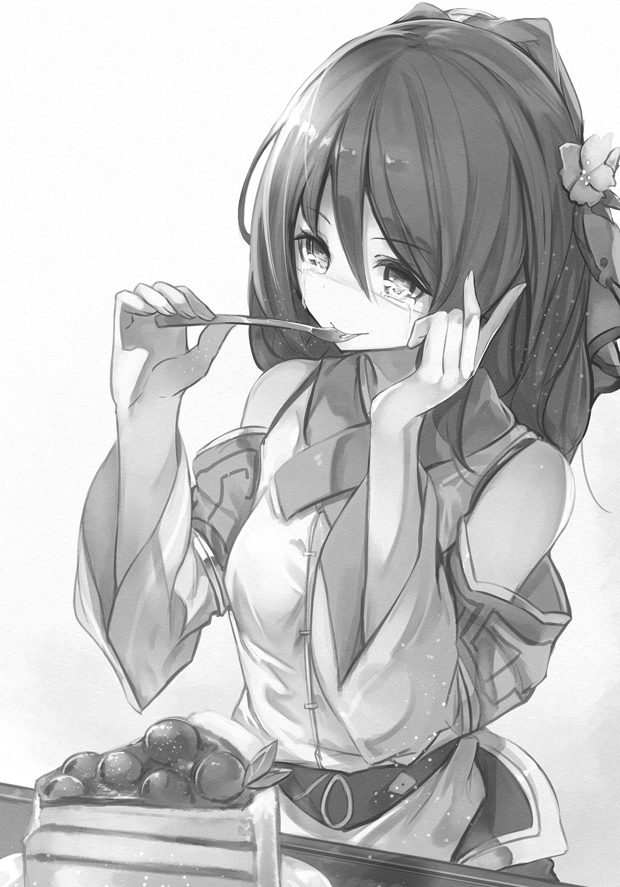
子供たちは一瞬啞然とし、
「ひどい！」
「横暴！」
とすぐに叫んだ。
だが、ミコネは頑として抗議を受け付けなかった。
アレイは彼女の気持ちがわかった。こんなものをしょっちゅう食べていては、たちまち堕落してしまいそうだ。
「うん、それがよいかもなあ」
気を悪くするでもなく、アズマは大きく頷いた。
「俺ん世界でも、ケーキはご褒美だったり、誰かの誕生日に食べるもんだかんな」
賛同を得られたことにミコネは勇気付けられたのか、
「そういうことです。ケィキは、何か特別なお祝いごとのときにだけ、作ること、食べることを許すことにします」
巫女らしい威厳を持って、子供たちにそう告げたのだった。
～第４話 終わり～
第５話 森の査察と昔の仲間
～肉巻きナスの照り焼き～
「ここは、本当にいい土地だなあ」
イーネの育ったタナダを見回して、アズマはそう言っていた。本来、サクモツを育てるにはもっと手がかかるらしいのだが、ここの草はとても強いらしい。
「けんど、作物を育てると土地は瘦せる。土の力を野菜が取り込んで、俺たちが食っちまうからな。だから休ませたり、肥料をやったりすんだ。土も人と同じさ。働けば腹が減る。まあ、肥料についてはおいおい考えるさ」
そう言った。
アズマはユーキサイバイというものを行っているそうだが、前に村では排泄物はどうしているのかと訊かれた。
もちろん、決まった場所に棄てている、と答えた。それは森奥の傍だ。不浄なものは不浄の傍に、というのが決まりだ。
己の中の罪と毒が形を得て出て行くのだから、という話をすると、どういう意味かわからないが、アズマは微妙な顔をして、使うのは無理か、と言っていた。
そういえば、草食を始めてよかったことのひとつに、罪が出やすくなったというのはある。
以前は何日も罪と毒が体に留まって苦しむ婆たちが多かったのだが、草を食べるようになってからは、そうしたことが減ったらしい。
肌艶がよくなったのも、罪を溜めないようになったからかもしれない。
スムアの暑さもそろそろ終わる。
イーネは今のところ順調に育っていて、暑さの頂の頃に、小さな花の房をつけた。
「無事に出穂したか！」
とアズマは喜んでくれた。
シュッスイ、というこの現象――小さな花が咲いてから、約一月で実が生るということだった。まだ真っ直ぐだが、これが次第に頭を垂れてくるということだ。
アズマの世界では、タナダには水を張るらしいが、こちらのタナダは乾いたままだった。
故に、イーネを育てるのに一番大変なのは、水遣りだ。
斜面で育てているから、上から水を流せば自然と下に届くが、加減がなかなか難しい上に、ここまで水を運ぶのが一仕事だった。
子供たちも頑張っているが、主にはアレイの仕事だ。
おかげで剣を振るっているときとは違う筋肉が、鋼のようについた。特に足と腰は鍛えられた。いまならノギモの突進も軽く止められるだろう。
何となくアズマと似てきた気がする。
「農家の体になってきたなあ」
と彼は笑ったが、アレイはそれを素直には喜べなかった。
嫌なわけではない。
だが、どこかでまだ、かつての冒険の日々を懐かしんでいる自分もいた。満足いくまでやり遂げて、辞めたわけではない。竜に呪われ、仕方なく辞めたのだ。未練がないといえば、噓になる。
「......まったく、情けないな」
タナダを見下ろして、アレイは嘆息した。遠くで笑うように、鳥がうるさく鳴いている。
「――アレイ兄さぁん」
森の中から自分を呼ぶササヤの声がして、アレイはタナダに背を向け、ここだ、と大きな声で返事をした。
☆
長々が呼んでいる、と告げられ、アレイは急ぎ、老婆の祈舎に赴いたが、中からは、入る前からただならぬ空気が漂い出ていた。
「......失礼します」
そろりと扉を開け、蠟燭の淡い明かりの中に足を踏み入れると、長々とミコネの二人が待っていた。その顔は厳しく引き締まり、長々は顔の皺は深く、目が完全に埋もれている。他の長たちは誰もいない。
座るように促され椅子に着くと、膝の上に畳まれた手紙が、枯れた指によって放られた。
「出稼ぎに出ている娘の一人からじゃ」
金は送ってこずとも、つながりだけは残しておきたいと思う女はいる。名を言わぬということは書いていないということだ。
手紙を開いたアレイは、書かれていた内容に目を瞠った。
「そうじゃあ」
長々の喉は、ごろごろと雷鳴の如き音を発した。
「以前、ここを訪れた商人のギギュアが、あろうことか教団本会に、村の森の魔物聖伏を具申しおったのじゃ。教団はそれを認め、調査と退治の為に冒険者を送ったとある。その手紙が出されたのは十日も前じゃ。時はない。何か策を練らねばならん」
冒険者、という言葉に、アレイは胸を搔き乱された。かつての自分が今を嗤うためにやってくるように思え、胃の辺りが重く痛んだ。
冒険者と呼ばれる人間の仕事は多岐に渡る。ほとんどは未知の土地や遺跡の調査だが、害獣の駆除や、魔物の聖伏、商隊や要人の護衛、中には暗殺や誘拐などの犯罪仕事を引き受ける連中もいる。
管理する組織や、国家の認めた資格があるわけではなく、そう名乗れば誰でも冒険者になれるという、適当なものだ。
「策と言われましても......」
「おぬしも元は同じ冒険者じゃろう。やつらの仕事のやり方はわかっておるはず。それを逆手に取ることはできるはずじゃ」
「そいつは難しい話です」
アレイは首を振らざるを得なかった。
「俺たちは、個人でそれぞれ仕事のやり方が違います。雑なやつもいれば、とことん緻密なやつもいる。ですが、俺たちは総じて鼻が利く。生半可なごまかしは簡単に看破しますよ」
「では、何もせずにハタケを見せるのか？」
「長々よ。露見し、蔑まれることは、草食を始めた時に覚悟したことでしょう？」
「無論じゃ。しかし、露見せぬように手を打たぬとは言ってはおらん。本会が、我らをただ蔑むだけならば良い。じゃが、もはやそうは思わん」
「何故です？」
「草はうまいからじゃ。こんな身近に、飢えを凌ぐどころか、暮らしを豊かにしてくれるものがあると知れれば、聖典は何故これを禁じたのかという話になる。本会がそれを許すとは思えん。ハタケは焼かれるぞ」
あれを焼く？
子供たちとこの数ヶ月、丹精込めて世話をしてきた、あの草たちを？ シュッスイし、ようやく実が膨らんできた、オカボも？
「............」
怒りが込み上げ、それだけはさせない、という気持ちが大きく膨らみ、アレイはそんな自分に少し驚いた。
「さて、どうする？」
「......少し考えさせてください。すぐに思いつくようなものじゃありませんから」
それは即ち、真剣に対策を練る、ということだった。
長々にはそれが伝わったのか、彼女はしわくちゃな首を重々しく縦に振り、ごろごろと喉を鳴らしながら、任せたぞ、と呟いた。
☆
「師匠、こんなものをみつけたんですけれど......食べられるものですか？」
そう言ってシズルが出したのは、ブレプに似た色の、太い獣尾のような形の草実だった。色は毒々しいが、特に匂いはしない。
「おう、茄子だぁな」
アズマは一目見て、そう言った。受けとり、ためつすがめつして、やっぱりナスだ、と請け負った。
「俺ん世界じゃ、秋茄子は嫁に食わすな、つう諺がある野菜だあよ」
「どうしてお嫁さんに食べさせないんですか？」
ミコネが首を傾げる。
「ああ、嫁には勿体ねえっつう意地の悪い話と、体を冷やすといけねえっつう良い話の二つがあんけんど、うまいことだけはまちがいねえな」
「どうやって食べるの？」
サラリが興味深げに訊く。最近は頓に積極的だ。肉よりも野菜が食べたいという。
「まあ、焼くのが一番うまいわな。丸のまんま炙り焼いて、醬油の代わりにウォルをかけるといいんじゃないか？」
出来上がりを想像したらしいサラリは、ふうん、と呟いた。子供の興味を引くには、少し地味だったのかもしれない。
「そんなものより、オレは肉がいい！ やっぱり肉！ 腹いっぱい食いたい！」
ヤイバが駄々をこねるように叫んだ。
無理もない。
コムギのおかげで飢えずには済んでいるが、無性に肉が食べたくなる気持ちはわかる。前回の取り引きで手に入れた塩漬け肉は、削ぐように少しずつしか使えないのだ。
「わがままを言うな。みんな我慢しているんだ。腹いっぱいになるまで肉を食べたら、あっという間になくなってしまう」
「わかってるけど......」
ヤイバは唇を尖らせた。サラリが、野菜もおいしいじゃない、とからかうように言って、ヤイバと睨み合った。
「おう、だったらいい料理があんぞ」
にやりとアズマが笑んだ。
「アレイ。薄切りにした肉はもらえるか？ できればこんくらい長いんがええんだけども」
アズマは両手の人差し指を立てて、長さを示した。
「何枚だ？」
「茄子が......六個あるから、六枚」
「そのくらいならいいだろう。ちょっと待っててくれ」
アレイは厨房を出ると倉庫に行って、指定された枚数の肉を削ぎとった。
ずいぶんと減ったが、まだ保つ。塩気は強いが、その方が少しでパンを食べられるので、一人頭の肉の量を押さえられる。
それにしても、と思う。ハタケの件はどうしたものだろうか。冒険者を誤魔化す方策は、まだ思いつけてはいなかった。
厨房に戻ると、アズマはナスの頭を落とし、皮を剝いて、それを水に漬けていた。紫色の皮の下は、美しい薄緑色をしていた。
「それは？」
「灰汁を抜いてるんだあ。あと茄子はすぐんに色が変わっから、それを防ぐ意味もあるな」
ふうん、と答えて、アレイは肉を差し出した。
アズマはそれを受けとると、ナスを水から引き上げ、水気をよくふき取った。
そうして、その身に薄く切った肉を巻きつけていく。指定された長さは、ナスを包むのに丁度よかった。
「どんだ？」
「肉の塊に見えなくも......ない」
「だろ？ んじゃあ、焼いていくべ。シズル、フライパンの用意はええか？」
「はい。平鍋は十分に温まってます。油も引きました」
「ん」
アズマは肉を巻いたナスを持って、焜炉に向かった。子供たちもぞろぞろとついていって、彼の手元を覗きこむ。
熱せられた平鍋に、アズマは肉巻きナスを入れた。
じゅう、と小気味良い音を立てて、肉が焼けていく。それを調理用の肉叉で転がし、全体を焼いていく。
ヤイバが、唾を飲み込んだ。
肉の焼ける匂いは、やはり、食欲をそそられる。草がうまいと言っていたサラリも、その魅力には抗えないのか、目は平鍋に釘付けになっている。芯はナスなのだが、まるで肉の塊のようだ。
「んで、全体が焼けたら味をつけるんだが、所詮は肉は一枚だかんな。塩だけじゃ物足りんと思う。で、コクを補うために、照り焼き風にする」
「照り焼き？」
「俺ん国の調理法さあ。味醂っつう甘い酒と、醬油なんかで作ったタレに、肉や魚をつけて焼くんだあ。いい艶が出るし、何より味が濃くなって飯が進むなあ」
仕上がりはよくわからなかったが、アズマの話し方だけで、うまそうだと思えた。思わず口中に唾が湧いてくる。
「醬油の代わりにウォルを使って、味醂の代わりに蜜を使うかねえ」
指示をされずとも、シズルがくるくると厨房を動き回っていわれたものを用意した。
「ありがとな、シズル。――じゃあ、この二つを大体、こんな割合で混ぜる」
小椀の中に、目分量でウォルと蜜を入れて、匙でよく混ぜた。
「んで、混ざったらこいつを、肉巻きにかけながらフライパンに入れて、転がしながら、さらに焼いていく」
小椀をシズルに渡し、平鍋の把手を布で巻いて持ち、がこがこと揺する。平鍋の中で肉巻きナスは回転し、調味液が煮えながら絡んでいく。すると、アズマの言った通り、巻いた肉の表面に蜜で包んだような艶が出始めた。
「よし、こんなもんだろう」
シズルが用意した皿に、アズマはナスを移した。
「これが、肉巻き茄子の照り焼きだあ。少しの肉で満足感を得るためん、節約料理だあな。茄子ん代わりに、人参や牛蒡を細く切ったんのとか、大根なんかも使えっけど、俺はこれが一番好きだ」
初めて聞く草の名前もあったが、それよりも皆の目は皿に釘付けだった。
「まあ、どんぞ」
アズマは、笑ってそう勧めた。皆、一斉に肉叉を手にする。だが、肉巻きナスは全部で六個だ。ここにいるのは七人。
「俺はいいから。タレん味はさっきみたから、うめえと思うぞ」
「しかし――」
我慢できなかったのか、ヤイバがナスに肉叉を突き立て、かぶりついた。じゅっと汁があふれて顎に伝う。その目は驚きに見開かれている。
「う、うんめえ！」
きゃあ、という悲鳴にも聞こえるような声だった。
「肉の塊かっていわれたら違うけど、そんな感じがする！ 噓!? 何で!?」
「本当だ......おいしい」
サラリとササヤが顔を見合わせて、信じられないという顔をしている。シズルが、当然という態度なのは、アズマへの信頼の証だろう。
「すごいです......」
口元を手で隠すようにして、ミコネが呟く。その頰には照り焼きのタレというものがついているのに気づいていない。
「本当に、お肉の塊を食べているみたい......どうして？」
アズマは満足そうに頷いた。
「そんは、茄子が肉から染み出した脂をたっぷりと吸ってるからだあ。旨味を逃さんという点では、他の野菜よりこん料理には茄子が向いとると、俺は思う」
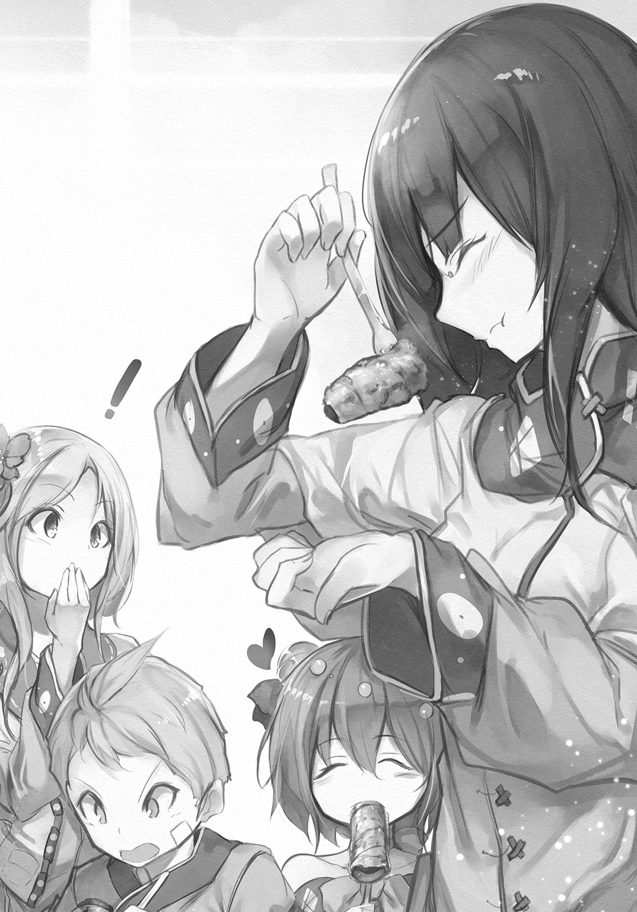
得心がいったのか、ミコネは何度も頷いた。
まったく、この男はすごい。
アレイは感心するしかなかった。自分と比べる気にもならない。これだけの知識をもちながら、誇るでも、驕るでもないのだから。
「そういんや、さっきミコネさんから聞いたんだけんど、森ん畑を、見つからんようにせんといかんのだって？」
ちらりとミコネを見ると、どうしてか、申し訳なさそうな顔をしていた。気にすることではない。自分でも知恵を借りられればと思っていたのだ。
「そうなんだ。前にここへ来た商人が、森に魔物がいると具申したらしい。その調査と駆除のために、冒険者が派遣されてくる。草食が露見しても、俺たちが蔑まれるだけですむと考えていたのだが、長々の考えは変わった」
「ふうん......」
アズマは太い腕を組み、煤けた天井を仰いだ。
「だったら、柵と立て札を抜いちまえばいいんじゃないか？」
アレイは目を瞠った。
そうか。
その通りだ。何故、そんな簡単なことに気づかなかったのだろう。小細工をする必要などない。札を抜いてしまえばそれで済む。
誰も、食べるために草を育てているなどと、思うはずがない。雑草を抜き、土を整えてあるのは、森奥の影響を調べるためとでも言えばいい。
彼らには、草食を思いつくはずもない。あのニギリメシを、食べていないのだから！
「ありがとう、アズマ！ 助かった！」
アレイは極自然に彼の手を取り、その厚い掌をしっかりと握りしめた。アズマの手はやわらかく包み込むようで、そして燃えるように熱かった。
☆
本会から派遣された冒険者が村に到着したのは、それから二日後のことだった。脚の速いホスに乗って二人だけで現れ、所持しているのも最低限の装備だった。
だが、何よりアレイにとって衝撃だったのは、その二人が知り合いだったことだ。
「ジーラ！ ガガン！」
軽装鎧に身を包んだ二人の男は、アレイを見ると破顔し、ホスから降りた。
「アレイ！」
二人は傍に来ると、アレイを強く抱きしめた。彼らの髭や体からは、長旅の臭いがした。
体を少し離すと、二人はまじまじとアレイを見た。
「ふうん、竜に呪われたって聞いたが、特に変わっちゃいないな」
「いや、むしろ筋肉がついたんじゃない？」
「おい、揉むな」
アレイは笑って二人を押しやって体を離した。そうして、呆気にとられている長々たちを振り返り、
「この二人は、冒険者だった時に何度も一緒に組んだ仲間です」
「お、おお、そうか」
長々は、いかにも無理にといった風に笑ったが、恐ろしいだけだった。
「ようこられた。あいにくと、我が村には狩り手がおらぬゆえ、歓待とは参らぬが、ゆるりとしていってくだされ」
二人は居住まいを正し、礼儀に乗っ取って頭を下げた。
「ありがとうございます。ですが、お気遣いはご無用です。食糧も酒もこちらで持参しておりますので。調査もすぐに済むでしょう」
「ほうほう、では頼みましたぞ」
長々はアレイに頷きかけると、ミコネに付き添われて村の広場をあとにした。子供たちも後に続く。前回の時のようなことがないよう、派遣された調査員が滞在中は、家に籠っていることになっていた。
「二人とも、すぐに始めるのか？」
「ああ......まあ、何も出ないと思っているけどな」
ジーラの言葉に、ガガンが頷いた。
「青い血を口から流す娘の幽鬼でしょ？ 本会も酔っ払いの戯言だと思ってるけど、あの商人は上に伝手があるらしくて、それで一応、僕らに頼んだってわけ」
「そうだったのか」
「けど、気前は良かったよ？ 聖水はたんまり持たせてくれたし、剣も聖別してくれたから。まともに金を払ったら、二年はただ働きだね」
「案内してくれるか、アレイ」
「ああ、もちろんだ」
その申し出は願ったりだった。こうした調査の場合、森を全てくまなく見て回るわけではない。ならば、こちらでその場所を選べる方が助かる。
「こっちだ」
アレイは、二人を手招いて、村の外れの森の入り口へと案内した。
と言っても、ここから森、と書かれているわけではない。きちんと舗装されているわけでもなく、踏み固められた獣道のようなものがあるだけだ。
その道を、三人で歩くのは少々窮屈だった。森の中は、とても明るい。
「枝を掃って、光を入れているのか？」
「ああ。その方が、森奥の魔物が村に近づきにくくなると長々が言うのでな」
「なるほど！ 魔は光を嫌うもんね。けど、同じところにひとつの種類の草しか生えていないのはなんでなんだろう？」
ガガンがトマトのハタケを横目に見ながら首を傾げた。
アレイは、さあ、と肩を竦めた。
「理由はわからない。森奥と関係があるのかもしれないが......特にこれといった害もないし、放っておいてる」
噓である。
本当は、ものすごく手間をかけて、この状態を保っている。
「ふうん......けど、幽鬼とは関係なさそうだね」
ああ、とジーラが頷く。
「やはり、酔っ払いの戯言だったんだろう」
そういう結論に至ってくれたのなら、ありがたい。
とはいえ、一応、森の中をぐるりと回ってみなければ、役目を果たしたことにはなるまい。アレイは、微妙にハタケを外して、彼らの案内を続けた。
半日を要し、ようやく森の外れに出た。その景色を見て、ジーラは、おお、と唸った。
「こりゃあ、絶景だな」
その場所からは、丁度、タナダが一望できた。斜面の段々に、背の高いオカボが青々とした葉を伸ばしている。無数の小さく白い花が、光のように揺れていた。
「まあ、草は草だがな」
そう、ジーラは続けた。
アズマの言っていた通りの彼の反応に安堵を覚えつつ、アレイは軽い怒りも覚えた。かけた手間を、この男たちは知らない。だが、それは知られるわけにはいかない。
そうだな、と話をあわせ、アレイは彼らとその場を離れた。
振り返ると、オカボの草原はどこまでも美しく、風に揺れながら、人にはわからぬ詩を、歌っているように思えた。
☆
「泊まっていかないのか？」
アレイの申し出に、ジーラとガガンの二人は、無理するな、と笑った。
「歓迎されてないのは、わかっているさ。なんであれ、本会の査察なんてえのは、おもしろい話じゃないからな。いまなら、一番近い宿場に日没前につく」
「そうか」
正直、その方が助かる。草食は露見していないが、何かのきっかけで疑いを抱かないとも限らない。子供たちの我慢も、いい加減、限界だろう。
「実は、俺たちがこの仕事を受けたのには、もうひとつ、目的があったんだ」
「もうひとつ？」
アレイは眉を顰めて二人を見た。
「ああ。おまえさんがこの村に戻っていたのは、知っていたからな。だから確かめに来た」
「何をだ？」
「腕が鈍ってないかを、だ」
「じゃあ、落胆させただろう。すっかり、だらしなくなった」
苦笑したアレイに、ジーラは首を振った。
「そんなことはない。前よりいい肉の付きかたをしてるぞ。よく働いている証拠だ」
アレイは、どきりとした。
「......まあ、狩りはできなくても、意外とやることはあるからな」
「そうか」
二人は、それがどんなことかには、興味がなさそうだった。
「だが、何であれ、冒険よりおもしろいということはないだろう？ どうだ？ もう一度、冒険者に戻らないか？」
「無茶を言うな。俺は竜に呪いをかけられたんだぞ？ 役には立たない」
「まあ、聞け」
ジーラは、アレイの肩に両手を置いて、まっすぐに見つめた。
「今度、王立学院が大規模な生態調査を行うことになった。魔物、獣の類を問わず、できるだけ多く、生きたまま捕獲するというものだ。つまり、殺しては駄目なんだ。そこで、おまえの呪いが役に立つ」
「わからないな。どういうことだ？」
ジーラは手を離すと、つまりだ、と続けた。
「相手がどのくらい弱っているかは、見てわかるもんじゃないだろう？ 弱った振りをする獣は珍しくないし、逆に強くなるやつもいる。見極めろって言われても無理だ。だが、おまえならそれがわかる」
何を言いたいのかが、ようやくわかった。
「呪いが発動して、俺が殺せなければ、捕獲時、というわけか」
「無論、それだけじゃない。おまえの腕も欲しい。竜にたどり着いた腕は、そう簡単に鈍るものじゃないはずだ」
冗談や酔狂で言っているのではないことは、顔を見ればわかった。
「......考えさせてくれ」
アレイは、そう答えるしかなかった。
それを、是ととらえたのか、二人は満足そうに笑んだ。
「出発は次の月だ！ 王都で待ってるぞ！」
男たちはホスに跨ると、よく肥えた脇腹を踵で蹴り、山を下りる街道へと去っていった。
アレイは答えず、ただその背中を見送った。姿が見えなくなっても、しばらくはそのまま動かず、静かに、見えなくなったかつての仲間を見つめていた。
☆
「無事に乗り切れたようじゃな」
長々に呼ばれたアレイは、彼女の言葉に頷いた。余人はおらず、薄暗い部屋にアレイは長々と二人だけであった。
ジーラとガガンは、間違いなく、森に幽鬼などいなかったと報告するだろう。商人のギギュアがどんな伝手を持っていたとしても、調査に二度はない。
「しかし、大胆な策であったのう。肝が冷えたわい」
「俺もです。うまくいってよかった」
「次善の策はあったのか？ 疑われていたらどうしていた？」
アレイは薄く笑んだ。
「殺したでしょうね」
あっさりと言ってのけた彼に、長々は一瞬、言葉を失った。
「いやいや。おぬしにはできぬであろう？ 竜の呪いがある」
「あれは、人には発動しないんですよ」
事実だ。
試したことがあるわけではないが、竜がそう言ったのだ。竜がわざわざそんな噓を言うとは思えない。理由がない。
だからきっと、人だけは殺せるのだろう。実に人を食った、らしい呪いではないか。
そうか、と言ったきり、長々は何かを考え込むように黙った。
もしかしたら、瞑想に入ったのかもしれない。
しばらく待って何の言葉もないようであったので、アレイは静かに祈舎を出た。外はすっかり暗くなって、村のあちこちで燃える篝火が、ぼんやりと森を浮かび上がらせていた。
「......アレイ」
どこか案じるような声に振り向くと、薄明かりの中にミコネが半ば溶け込んで立っていた。その顔には、不安が浮いているように見えた。
調査の結果が気にかかるのだろう。アレイは笑みを作った。それで結果はわかると思ったのだが、何故か、ミコネの顔は晴れなかった。
「......どうした？」
「あの......聞いてしまったんですけど......」
アレイは、ぎくりとした。人は殺せるという、長々との話を聞いていたのだろうか。だがあれは例えばの話だ。
「アレイは、村を......出て行くんですか？」
「え？」
一瞬、何の話だかわからず、アレイは戸惑った。だがすぐに、ジーラが言ったことだと気づいた。どうやってだか、あれを聞いたらしい。
「いや......別に何も決めていない。体もすっかり鈍ってしまったし」
その時、アレイはミコネの不安げな表情に気づいた。
ああ。
ああ、そうか。
その心配は、当然のことだ。
「そうか、アズマのことだな？ 呼び出せなくなると思っているんだな？ それはまあ、そうなんだが、行くにしても依頼の間だけだし、アズマと話し合って、方策は考えるよ」
すると何故だろう、ミコネの顔が険しく変わった。
「そういうことを言っているんじゃありません！」
叱りつけるがごとく言うと、ミコネはそのまま背を向け、小走りに行ってしまった。
アレイは嘆息した。
何か間違ったのだろうか？ どうもよくわからない。
「冒険か......」
思いも寄らなかった申し出に、アレイは諦めた夢が、胸の奥で微かに疼くのを感じた。
～第５話 終わり～
第６話 黄金の草原
木の陰に隠れたヤイバが、弓の弦を引き絞った。
斜面を駆け上ってくる風に、もう暑さは感じない。首筋を撫でて抜けていくそれは、死者の手のようにひんやりとしている。
肌焼くような火が照り付ける暑いスムアは過ぎ、オルトの季節になった。
ヤイバは少し背が伸びていた。
日々のノウギョウで、腕回りや腿は一回りも太くなった。そのおかげで、弓を引く力が強くなって、少し大きな獲物も一矢で仕留められるようになった。
そのことに気づいてから、ヤイバのノウギョウへの熱は変わったと思う。積極的に雑草を抜き、ハタケを見回り、虫や獣を追い払った。
そしていま、もっとも大きな難敵を前にしている。
スパメだ。
翼を広げると、大人が腕を広げたのと同じくらい大きな鳥だ。
シズルによれば、スパメが毎年、オカボを全て食べてしまっていたという。
今年は人の手が入って、いままでにない量の実をつけたに違いなく、それを狙い、スパメの数も、これまでになく多いようだった。
上空を旋回していたスパメの一羽が、弧を描きながら降りてくるのが見え、ヤイバは矢を放った。ひゅん、と弦が鳴って、矢は一直線にスパメを目掛けて疾った。
「くそっ！」
だが、外れた。
スパメは空中で横転するように器用に体を返して矢を避けると、再び、上空の群れのところへ戻っていく。
射落とせはしなかったが、目的は果たしている。
ヤイバの仕事はタナダのオカボを守ることであり、スパメを狩ることではない。両方できればそれに越したことはないが、優先すべきはオカボを守ることだ。
そろそろ矢が乏しくなってきたらしい。夜になったら回収しに行かなくちゃ、と次の矢を番えながら、ヤイバが呟くのが聞こえた。
スパメは、日が暮れるまえにどこかにある塒へ帰っていく。
あの図体でも鳥は鳥だ。夜目が利かない。
だから、塒がわかれば狩り放題なのだが、ここからはとても遠い場所にあるのか、見つけられずにいる。
「真面目にやってる？」
サラリの声に、ヤイバは矢を構えた手を下ろして、振り返った。
森とタナダの境に立ったミコネとサラリは、さっきからヤイバの仕事ぶりを見ていた。ミコネの手には、布のかかった手提げ籠が下がっている。昼飯を持ってきたのだ。
「六回も追い払ったぜ！」
ぐっと力瘤を見せたが、サラリに、はいはい、と軽く流されてしまい、ヤイバはおもしろくなさそうだった。
「というか、追い払うだけなら、いちいち射ることないんじゃないの？ むしろ、まぐれで当たってタナダに落ちたら困るんですけど」
「んなことになんねーよ！ ちゃんとタナダの外に落ちる辺りに飛んできたときしか、射ってねーし！ ちゃんと考えてんだからな！ 馬鹿にすんな！」
「どうだか」
肩を竦めてみせたサラリを、ヤイバが叩こうとして、ミコネは慌てて止めた。
「よしなさい。天はいつも見ているんですよ？」
ヤイバはムッとしたまま、ミコネを睨んだ。
「じゃあ、草食も？ それも見てるわけ？」
「ええ」
「だったら、どうしてオレたちには罰が下らないのさ」
意地悪で言ったのだろうが、ミコネに迷いはなかった。
「下っていると思いますよ」
子供たちは、ぎょっとした。
「聖典に記された、卑しいとされる行為に手を染めたんですから」
「でも、誰にも何にも起きてないじゃないか！」
「それはそうですよ。ここにいるのは、全員が罪人なんですから。自分だって卑しいのに、他人を卑しいと蔑んだとしたら、おかしいでしょう？ わたしたちは等しく卑しい。けれど、他の人がこのことを知れば、わたしたちに石を投げるでしょう」
子供たちは、ようやく自分たちがしていることの意味を理解したのか、幻の石ころを喉に詰まらせたような顔になった。
ミコネはやさしく微笑んだ。
「大丈夫。そうならないように、長々さまが心を砕いてくださっているから。けれど、天はわたしたちのしたことを見ておいでですから、これ以上、自分たちを貶めるようなことは、しないようにしなくてはね？」
ヤイバも、サラリも、神妙に頷いた。
「はい、よろしい。じゃあ、お昼にしましょうか？」
子供たちは、ホッとしたように顔を緩ませた。
草食が卑しいことだとわかってはいるが、この頃はその罪悪感もほとんどなくなっている。卑しき獣は自分を卑しいとは思わない。それが自然なことなのだろう。
ミコネは地面に敷布を広げ、その上に腰を下ろした。もちろんスパメのことは警戒しつつ、籠から布巾に包んだパンを、子供たちに渡す。
二人がそれを開くと、丸パンのサン・ドイチが顔を出した。
挟んであるのは、たっぷりの葉物と、薄切り肉に厚めのコロモを付けて揚げた《カツ》というものだ。味付けには、マヨネーズーと、野菜や果実にウォルや酒を混ぜて煮詰めた、ソスをかけてある。
アズマの世界のウスタ・ソスというものを真似て作ったものだが、味はかなり違うらしい。まずいというわけではない。別の味だけれども、おいしい。
マヨネーズーとソスのおかげで、食事は本当に豊かになった。
他にも、トマトを基本にしたケ・チャプ、鳥と野菜、魚と野菜を煮込んで濾したスプなど、いずれも野菜がなかったら作れない調味料をたくさん教わった。
卑しくはないかもしれないが、肉と果実しか食べるものがない以前の食生活は、貧しいと思えた。物があっても貧しいこともあるのだと、草食を始めて知った。
ヤイバが成長して、村の食を賄えるほど獲物を獲れるようになったとき、果たして再び肉だけの生活に戻れるのか、ミコネには確信が持てなかった。
堕落は甘美なもの、と聖典にはある。卑しい草食は、まさにその通りだった。食の愉悦は、恐ろしいほど甘美だ。
これを棄てることは、とても難しいだろう。
「ねえ、ミコネ姉ちゃん。アレイ兄ちゃんは、いつごろ戻ってくるの？」
空のスパメに注意を払いつつカツのサン・ドイチを頰張ったヤイバが、そう言った。
その問いは、少し不意打ちだった。
自分でも理由がよくわからずミコネは動揺し、心臓が不規則に鼓動を打った。
「ええと......その......」
うまく言葉が出てこない。
「すぐよ」
代わりにサラリが答えてくれ、ミコネはホッとした。
「すぐっていつだよ」
「すぐはすぐだってば。イーネだってそろそろ収穫しなくちゃならないんだし。だから、アズマ兄さんを呼んでもいい日が来る前には戻るでしょ」
「だから！ あと何日だって訊いてるんだよ！ 何回、日が沈んで、何回、昇るんだよ！ あと何日で、砂時計を何回ひっくり返せばいいか、言ってみ――」
「――チド」
侮蔑を籠めた言葉を、サラリは吐き棄てた。チドは、子供を馬鹿にする言葉だ。ヤイバの顔はたちまち怒りに赤く染まった。
「よしなさい、二人とも」
ミコネは、少しきつめに、ぴしゃりと言った。
「アレイは、あと三日もすれば戻ります」
そのはずだった。
彼が村を出て、そろそろ半月になる。
きっかけは、アズマの申し出だった。彼にも自分のハタケの世話があるので、二十日ほど召喚をやめてもらいたい、というものだった。
長々は承知した。
無理やり呼び出しても、良好な関係は続けられない。むしろ、これまで快く応じてくれたことに感謝を述べ、召喚できない間にやるべきことを教えてもらうことで対応した。
アレイが町に行きたいと言い出したのは、その後だ。
この機会に、町で色々と仕入れてきたい、と願い出たのだ。
長々は、これも許した。
今後は、商隊の村への立ち入りは禁止することにしたからだ。ハタケを守るためには、こちらから町に出向いて必要な品を手に入れる方が安全だ。
だが、アレイには別の目的があるのではないか、とミコネは思っていた。
この前の査察のとき、アレイは冒険者に戻らないか、と誘いを受けていた。はっきりとした返事はしていなかったが、出発は一月後だといっていた。
だとしたら、そろそろ日がない。
冒険者の頃に使っていた鎧などは持っていかなかったから、新調するのでなければ、一度は取りに戻るだろう。
だがまたすぐに出て行ってしまい、それきり戻らないかもしれない。
今回、町に下りたのは、すぐに出発できるように準備を整えるためかもしれなかった。王都へ向かう足は、簡単には確保できない。何の準備もなしに村を出て行っても、こちらが追いつくのが早いだろう。
それでアレイの決意が翻るとも思わないが、少なくとも気まずい思いはしなくてもすむ。
できればそうなって欲しくはないけれど、彼を止める権利は誰にもない。
けれどその場合、アズマの召喚はどうなってしまうのだろう。
召喚珠は、アレイにしか使えない。
あの力は、竜にかけられた呪いと引き換えに得たものだ。
だとすれば、ようやく道筋がついたノウギョウも絶えてしまう。
アレイは、それでいいのだろうか。
冒険者に戻れば、以前のように多額の報奨金を得ることができるから、それで肉を買い、贈ってくれるつもりなのだろうか。
けれど、とミコネは思う。
一度、卑しき草食に堕ちた者が、再び聖道を歩むことができるのだろうか？ 棄てるには、草食はあまりにも甘美だ。
ミコネでさえ、野菜を使わねば作ることのできない数々の美味を二度と味わえぬ暮らしに戻ることを考えると、暗澹たる気持ちになる。
無論、いままでに得た知識で、続けることもできるだろう。だが、何かあった時に安心して頼れる者がいるのといないのとでは、大違いだった。
アズマがここへ来られなくなるのは困る。
だから、アレイがいなくなるのは困る。
二人ともこの村にいて欲しい――それが自分の本心だと、ミコネはようやく理解した。
けれど、自分のためではない。村のためだ。
それ以外に何があろう。
自分は巫女なのだから、他に願いなど持つはずがなかった。
「――ミコネ姉さんは、アズマ兄さんとアレイ兄さん、どっちが好きなの？」
サラリの不意打ちに、ミコネは齧っていたパンを喉に詰まらせ、激しくむせた。
慌ててヤイバが水筒を差し出してくれる。
毟り取るように受け取り、ミコネは必死に水を飲んだ。パンは何とか喉を流れ落ち、息を詰まらせずにすんだ。
「な、何を言ってるの？ どっちとかってないわ。わ、わたしは皆と同じように、アズマもアレイも好きよ」
何とか微笑んだが、サラリは不愉快そうに眉を顰めた。
「あたしの言ってる好きが、そういう好きじゃないってことくらい、ミコネ姉さんもわかってるでしょ？ どっち？」
「ど、どうしたの、急に？」
「そうだよ。オレだって二人とも好きだし。何がおかしいのさ」
「チドは黙ってて」
サラリはヤイバを睨み、その目の力だけで黙らせてしまった。
「アズマ兄さんが、急に呼ばないでくれって言い出して、アレイ兄さんも町に行っちゃうなんて、何かあったと思うのが普通でしょう？ だったらそれは、恋愛のことしかない」
サラリはそう断定し、ミコネをじっと見た。
村の誰かが、巷の騎士と姫君と竜の物語でも、語って聞かせたのだろうか。
「ありえません」
ミコネは、きっぱりと言い切った。
「どうして？」
サラリは食らいついてくる。今日の彼女は執拗だった。
「どうしても何も、わたしは巫女よ？ 誰か特定の人を好きになることは、掟によって禁じられています。恋とかできないし、結婚して子供を生むこともありません。そういうのは、あなたたちに任せます」
サラリはミコネをじっと見て、そっか、と小さく呟いた。
「ミコネ姉さんは、巫女だもんね。忘れてた」
「まだ見習いだけどね」
言って、ミコネは苦笑した。巫女であることを忘れられているとは、修行が足りない。
「じゃあ、アズマ兄さんが呼ばないでくれって言ったのって、本当に自分のハタケが忙しいからなんだね？」
「ええ、たぶん」
サラリがこんなに気にするとは、少しおかしかった。おそらく、訊いてみて、と頼まれたのだろう――きっと、シズルに。
サラリに頼む勇気があるのなら、自分で訊きにくればよいと思うが、彼女がサラリを頼ったのは良いことだ。
子供たちには仲良くして欲しい。
そのためになるのなら、おかしな噂が立っても我慢しよう。
そう思ったのだけれど。
「......なあんだ」
サラリの残念そうな態度に、微笑が僅かに引き攣ってしまった。
「来た！」
真剣な声で言ってヤイバが立ち上がり、ミコネたちも空を仰いだ。スパメが三羽、群れから外れてゆっくりと旋回しながら降りてくる。
実ったオカボを食い荒らすために。
そうはさせない、とミコネもサラリも、桶と木の棒を手にとって立ち上がった。
スパメは基本、人の姿を見つけると降りてくるのをやめるが、大きな音を出した方が、より効果があるような気がした。
カンカン、と桶を鳴らしながら、ミコネとシズルはタナダの縁に出た。中には入らない。実ったら、刈り取る時までそうするよう、アズマに言われていた。
「どっかいけー！」
棒を振り回し、サラリが叫ぶ。ヤイバの放った矢が、青い空に弧を描くが、遥か高い空へと戻った鳥には、当たることはなかった。
☆
ホスに牽かせた荷車に頼まれた品々をのせて山道を登っていたアレイは、村の入り口に立つ門が見えると、軽い安堵を覚えた。
特に変わりはないようだ。
モウノ村から狩り手が消え、僅かな肉で少ない村人が食いつないでいるという話は、麓の町にも届いていた。
取り引きのある商人が洩らしたのだろう。問題は、それにしては村人が健康そうだ、という話が付け加えられていることだった。
ノウギョウのことは、知られるわけにはいかない。
アズマが自分のハタケのことで忙しく、しばらく呼び出しを控えてくれというので、いい機会だからと町に行き、直接、噂を確かめることにした。
噂は、心配したほどではなかった。
ギギュアが、森に何かある、などと余計なことを話して回ったようだが、そのあとでジーラとガガンが、それを笑い飛ばしてくれたらしい。
彼らは本会から派遣されてきた冒険者だ。その二人の言葉だけに、町の人々も納得したのだろう。
とはいえ、今後も同じようなことが起きないとは限らない。
アレイは町で力仕事を請け負い、小銭を稼ぎながら村の窮状を話して回り、ギギュアの流した噂を完全に潰した。
竜に呪われた男、という通り名は決して名誉なものではなかったが、こんな田舎の町ではそれを受けるに至った冒険譚を聞きたがるものも多かった。
大そうな宴の席にも呼ばれることがあり、そうした場合はそれなりの礼金が出た。
おかげでかなりの量の塩漬け肉、果物、塩、酒、を手に入れることができた。他にも、傷んでいた釜や鍋などの金物の調理道具を新調することができた。
それらを持ち、アレイはちゃんと帰ってきた。
もっとも、置いたままの荷物もあるから、そのまま出奔することは、端から考えてはいなかったのだが。
村の門をくぐると、車輪の音を聞きつけて、子供たちが外に飛び出してきた。サラリとササヤだ。そのあとから老人たちも、おっとりと現れる。
彼女たちは、荷物を見て目を瞠った。
それはそうだろう。
これだけの量を持ち帰ってくるとは、想像もしていなかったに違いない。何しろ出かける時は、ろくな金を持っていなかったのだから。
働くことは言ってあったが、竜に呪われた身では大して稼げるはずがない、と思っていたに違いなかった。当のアレイがそう思っていたのだから、当然だ。
「どうしたの、これ!?」
肉を目敏く見つけて、ササヤが珍しく興奮気味に言った。肉はしっかりと樽に詰められていたのだが、匂いでわかったらしい。
塩漬けにされた肉は、独特の甘い香りを放つ。他にもこの辺りでは採れない果物がいくつかある。あまり長くはもたないようだから、早めに食べた方がいいだろう。
「俺も、なかなか稼ぐだろう？」
にやりと笑って、アレイは肉の入った樽を肩に担いだ。果物は子供たちに持たせる。
ここに置きっぱなしにしておいたら、耄碌した振りをして老婆たちが勝手に食ってしまうに決まっていた。前にそれで揉めたことがある。
「皆は元気か？」
倉庫に向かいながら訊ねると、意外なことにサラリは首を振った。
彼女自身はとても元気そうに見える。
少し瘦せた気もするが、目にはしっかりとした生気がある。
「スパメが出るようになっちゃって、日の出から日没まで、ずっと誰かがタナダに詰めて、スパメを追い払ってるの。夜はいなくなっちゃうからいいんだけど、その分、他の人が他のハタケの面倒を見なくちゃならないから、もう大変！」
うんざり、と言った表情になって、サラリは天を仰いだ。ササヤもいまの話には、異論はないようだ。よく見れば、ササヤの目の下には、隈ができている。
「そうだ。ミコネ姉さんに、アレイ兄さんをタナダに連れて来てって言われてるの」
「スパメ退治か？ もちろん手伝おう。追い払うのなら得意だ」
というか、それしかできない。
「それもだけど、見せたいものがあるからって」
「見せたいもの？」
いったいなんなのか、二人は教えてくれるつもりはなさそうだった。先ほどまでの表情と違って、どこかいたずらめいた、楽しげな顔に変わっている。
まあいい。
行けばわかる話なら、無理に訊く必要はない。
荷物を倉庫に置き、アレイは二人と共に森に向かった。どのハタケも、きちんと手入れがなされている。
トマト草はさすがにもう枯れてしまったが、きちんと種は採った。来年は、今年よりも多くの草を育てて量を採ることができるだろう。
トマトのソスは、鳥の肉によく合う。
塩を振り、コムギ粉を薄くつけて、オリブ油でじっくりと、皮目がパリパリになるまで焼いてから、果実酒を入れて蒸し焼きにしたものに、トマトで作ったソスをかけて食べる。
これがとてもうまい。
塩だけで食べていた頃を思えば、食の豊かさは天と地ほどだ。地にある草が自分たちを天に連れて行ってくれるとは、なんという皮肉だろうか。
「あ、アレイ兄ちゃん！」
森の外れで、弓を手にしたヤイバがこちらに気づき、大きく手を振った。スパメを狩るつもりなら今の行動はありえないが、追い払うことが大事なのだから構わない。
「え、アレイ？」
木の陰から、ひょいとミコネが現れた。その顔には、懐疑と、驚きと、そして喜びが複雑に入り混じっていた。
「帰ってきたの？」
「あたりまえじゃないか。俺は買出しに行ったんだぞ？」
「そうよね、そうだった」
やり取りの意味がわからない、と言った様子で、子供たちは首を傾げた。
シズルの姿が見えないが、いつものことだ。彼女は常に新しい草を探し、自分で食べてみて、その見識を広げている。
「それで？ 俺に見せたいものって？」
「こっち！」
ヤイバに腕を取られ、アレイは森を出た。
光が目を射す。
アレイは目を眇めた。輝きがやわらかくなるのを待って再び目を開いたアレイは、その景色に言葉を失った。
黄金の草原が広がっていた。
山の斜面のタナダに逞しく育ったオカボが黄金へと姿を変えていた。どの株もたっぷりと実をつけて、祈るように頭を垂れている。
そう、祈りだ。
命の感謝と祈りだ、とアレイは感じた。
イナホ、とアズマは言っていた。彼の国ではコメが黄金と同じ意味を持っていた時代があると話していたことを思い出した。
その時は、そんな馬鹿な、と笑ったのだが、いまなら意味がわかる。
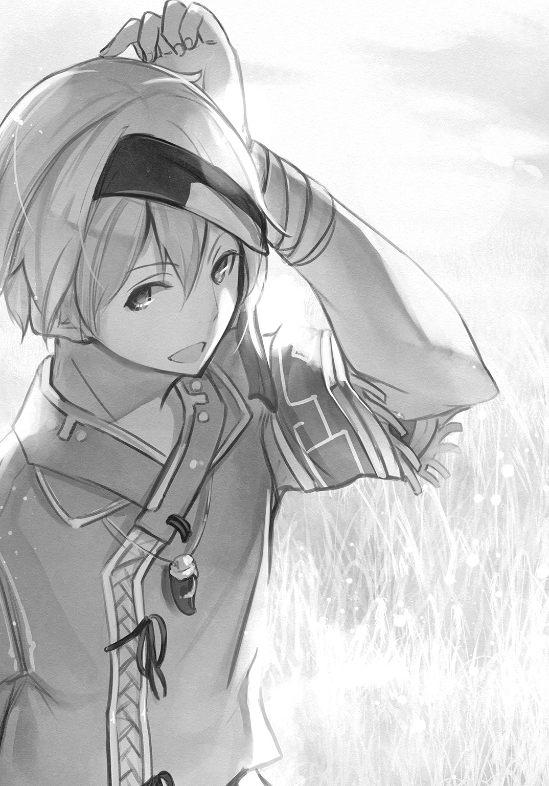
これは黄金だ。
しかも本物の黄金よりもずっと尊い。
なぜなら、あれは食えない。
竜の呪いを受けたあの迷宮で、鞄に詰めた黄金は何の役にも立たなかった。アレイを救ったのはあんな金属ではなく、アズマのくれたニギリメシだった。
死んでしまったら、黄金に何の意味がある。
食ってこそ、生きてこそ、人生には意味も価値もある。自分たちはいま、それを育てることができる。作ることができる。
アレイは振り返り、子供たちの顔を見た。
どの顔も、とても明るく輝いている。
村に戻った頃の子供たちは、瘦せ、飢えて、獣のような顔をしていた。だが、いまは違う。明日に希望を持っている。明日は何を食べようかと思っている。
冒険でいくら黄金を稼いでも、この子たちにこんな顔をさせることができただろうか？
――否だ。
自分たちでこのタナダを守ったのだ、自分で生を繫いでいるのだ、という誇りがその顔に見える。人に与えてもらったのではなく、自分でつかんだのだ、と言っている。
「......スパメはまだイナホを狙ってくるのか？」
「うん、しつこいったらないよ。人がいると絶対に近づいてこないんだけど、ちょっとでも姿が見えなくなると、降りてくるんだ」
「本当、やんなっちゃう」
腕を組み、サラリが唇を尖らせた。
「あたしたちが、代わる代わるここを見張らないといけないから、他のハタケの世話をシズルが頑張るしかなくて、もう倒れそう」
「人がいればいいんだな？」
ヤイバたちは頷いた。
「わかった。待ってろ」
言い置いて、アレイは風のように森を走った。背中にミコネの自分を呼ぶ声が追いかけてきたが、止まらなかった。
森を抜けると、広場では老婆たちが黙々と荷物を仕分けていた。一番年長の長々が一番元気に仕切っている。
それを横目に、アレイは自分の家に戻ると、部屋の隅に置いてあって埃を被っていた大きな包みを脇に抱え、森へと戻った。
タナダへ着くと、丁度、空ではスパメがイナホを狙って、こちらの隙をうかがっているところだった。
「兄ちゃん、それは？」
埃を被った包みを見て、ヤイバが興味津々と覗き込んできた。
アレイは包みを地面に置くと、覆いを取った。埃が舞い上がり、子供たちが咳き込む。だがそれが過ぎると、皆、目を瞠った。
覆いの下にあったのは、軽鎧の装備一式だった。
竜の呪いを受けた冒険の時に着用していたものだ。魔法金属を魔炎で加工した、鎧、兜、籠手、鎖帷子、腰当で一揃えになっていて、どれも皮紙のように軽い。
アレイの持っている道具の中では、剣に次いで高価なものだ。木の台座は、人が着たときのように鎧一式を置けるようになっている。
「これ、どうすんの？」
「こいつをタナダに置けば、スパメは人がいると思って近づかないはずだ。こいつには魔除けの力もある。イナホを守るにはうってつけだろう」
「けど......これって、兄ちゃんの大事なものなんじゃないの？」
ヤイバがこわごわと鎧を見る。
「そりゃあ、大事さ。けど、使う当てもなく、部屋の隅で埃を被らせておくのなら、イナホを守らせる方が有益だろう？」
アレイは笑ってヤイバの髪をぐしゃぐしゃとかき回した。
「当て......ないんですか......？」
ミコネが確認をするように、恐る恐る訊ねた。
「ああ、ない」
アレイはきっぱりと言った。
本当は、迷っていた。町で、王都への足も、一応は手配をしていた。
だが、もうその気はなくなった。この黄金の草原を、子供たちの顔を、この目で見て、それでもここを棄て、冒険に戻る意義があるとは思えなかった。
「俺はここで、これからも草を育てる」
腰に手を当て、イナホの黄金の草原を見回し、アレイは胸を張った。
「俺は、ノーカだ」
☆
「こんりゃあ、見事に実ったなあ！」
久しぶりに召喚されたアズマは、黄金の斜面を見て、心から感心したようだった。眺め、イナホを手に取り、匂いを嗅ぎ、何度も大きく頷いた。
「たいしたもんだ。ほとんど自生でこんだけ実るとは、よっぽど土がええんだな。それと、あんたらの世話もたいしたもんだ。虫にも病気にもやられんかったのは、あんたらの手柄だ。それと、あれ」
アズマは、タナダにぽつんと立つ、アレイの鎧を指差した。
「自分たちで案山子を思いつくなんざあ、なかなかなもんでねえの。けんど、ええのか？ あの鎧、ずんぶん高そうだけんど」
「構わないさ。どうせ埃を被ってたんだ」
「いまは、糞を被っとる」
腹いせか、それとも追い払おうとしてか、スパメが糞を落としていくのだ。鎧はタナダとタナダの間に立ててあるので、イナホにかかることはない。
「勲章だ」
アレイがそう言うと、アズマは豪快に笑い、少し乱暴に肩に腕を回した。
「んじゃ、収穫の計画を立てようかのう」
☆
「さて、収穫だけんど」
集まった若者をアズマはぐるりと見回した。正確には若者と長々だが、近頃は腰の伸びた老婆は、同席しているが、手伝ってくれるわけではない。
「稲穂を米んすんには、いくつかやらねばならんことがある。刈り取って、干して、籾っつう殻を剝いて、糠っていう部分を削らねば、白い米にはなんねえ」
ヤイバが指を折って数え、そんなに？ と驚いた顔になった。
「麦だって同じでねえの。刈り取って、干して、殻を剝いて、粉にしたろ？ たんだ、米は量が多いし、麦みたいに手で揉んでも籾は剝けんから、道具を使う」
サラリが手をあげた。
「これからその道具を作るの？」
「いんや。俺が自分の世界から持ってくる。というても、こっちん世界でも作れるよう、電気とかを使わん、手動の道具だ。こん前、地元ん民族資料館が潰れるから処分するいうんで、貰ってきた。勿体ないけんど、俺ん世界じゃもう使わんからな」
「助かる」
アレイの言葉に、アズマは頷いた。
「んじゃ、まずはこれからだ」
そう言うと、アズマは袋の中から奇妙な形をした刃物を取り出した。獣の爪のような形をした刃の根本に、刃と垂直になるように持ち手がついている。
「これは、鎌だ。刈り取りには欠かせねえ。他に、刈り取った稲を干すための架台――稲木っつうんだけんど、それも同時に作らねばなんねえ。焦らず、一棚か二棚ぐらいずつやんべ」
タナダは全部で二十ほどある。一日に二箇所、作業をしたとして、十日ほどで終わる。
「刈り取ったイーネは、どのくらいの間、干すんだ？」
「天気にもよるけんど、こん感じなら、晴れが続けば二週間くらいでねえかな」
「二......シュウカン？」
「ああ、すまねえ。俺ん世界は、七日で一区切りにして、そいつを週って呼ぶんだ。なんで二週間は十四日。そんくらい干せば、次の作業に移れると思う」
アレイは頷いた。
ならば、オルトも盛りの頃に、コメを手に入れることができるということだ。
「んじゃ、刈り取りっすっか！」
大きな手を、ぱあんと叩き、アズマは本当に嬉しそうな笑みを浮かべた。
☆
初めの計画の通り、十日をかけて全てのイーネを刈り取り、それを干す、ハザカケという作業をおこなった。
三株ぐらいずつで一束にし、アズマの持ってきた、枯れたイーネで作った縄で縛って、架台に引っ掛けて、ひたすら乾燥が済むのを待った。
十四日が過ぎ、アズマがコメの粒の様子を確認すると、殻の下からは半透明の粒が現れた。触って見ると固く、アズマに言われて嚙んでみると、かりっと音がして割れた。
「こん感じになったら、もう大丈夫だかんな」
覚えておくように、ということだ。
忘れないように、今の歯ざわりと色と感触を頭に刻み込んだ。
「んじゃ、最初の束を村に運ぼうか」
そう言われ、アレイたちは総出で干したイナホを村へと運んだ。その間、よく日に当たって乾燥したイナホからは、なんとも言えない良い香りが漂っていた。
作業場として用意した空き家には、アズマが持ってきた道具が並んでいた。
一見すると武器のようにも見える道具と、木の盥を二つ合わせたような物に横木が付いたもの、謎の大きな箱、薬を作る時に使う鉢と擂粉木を巨大にしたような代物だった。
「こいつは、千歯扱き」
巨大な鉄の櫛のような道具を、アズマは叩いた。櫛歯が斜めに天に向いている。
「見ての通りん代物だ。歯が本当に千あるわけじゃないけんどな」
アズマはそれを足で押さえて、束にしたイナホを叩きつけるようにして歯の間に通した。
そうしてイナホをゆっくりと引く。すると、殻のついたコメがおもしろいように取れて、下に置いた笊に溜まった。
「籾をとるこの一連の作業を、脱穀っつう。......やってみ？」
促され、アズマがしたことを思い出しながら、アレイはイナホを振り下ろした。束が千歯に突き通り、ゆっくりと引くと、ばらばらとモミが落ちた。
おもしろい。それに気持ちいい。
何度か繰り返すと、手元には枯れたイナホの草だけが残り、モミは全て笊に溜まった。
「オ、オレもやる！」
「わたしも！」
子供たちが次々と手をあげて、残ったイナホを同じようにダッコクした。楽な仕事ではないが、楽しくはある。
モミが溜まった笊は目がかなり粗い。それを揺すると、モミだけが落ちて、一緒に取れてしまった枯れ草は笊に残った。
「こん枯れた茎と葉っぱを、藁いうんだけんど、これは捨てんように。草を喰う動物のいい餌んなるし、田んぼの肥料にもなんし、来年、苗を作んときにも使えっから」
アレイは頷いた。
何という無駄のない草なのだろう。アズマの持ってきた縄も、このワラというもので作ったというのだから、感心するしかなかった。
「出来た籾は、袋ん詰めて、ひとまず保管しておく。全部済んだら、今度は殻を剝く、籾摺りっつう作業を行うんだけんど、それにはこいつを使う」
そう言ってアズマが次に指し示したのは、横木の付いた木の盥を重ねたような道具だった。その盥は木で組まれた台の上にのっていて、さらにその上に大きな円錐形の筒が備え付けられていた。
「こんは、籾摺り器。ここから籾を入れて二人掛かりでこん棒を動かすと、殻と玄米に分けられる。まあ、色々仕掛けはあんけんど、原理は石臼なんかと同じだあな。――アレイ」
頷き、アレイはアズマと反対側の棒を握った。
「シズル、籾を入れとくれ」
「はい」
単眼鏡の位置を直し、シズルはモミを筒の中に入れた。
アズマの動きに呼吸を合わせて棒を押し引きすると、盥が回って、ざあざあとモミが、殻とゲンマイとやらに分かれてこぼれ出した。
一粒の時は指で擦っても簡単には剝けなかったものが、容易に出来た。
「こんで、ようやく食べられるものになったつうわけだ。こん玄米を磨いていくと、どんどん白くなってく。こん一連の作業を精米とか、搗くっていうんだけんど、玄米、三分、五分、七分、白米ってのがよくある搗き具合だんな」
「俺が食べたニギリメシは？」
「白米だ」
「じゃあ、俺たちもハクマイにセイマイしたい」
「わかった。けんど、その前に籾と米を分けんとな。それにはこいつを使う」
アズマは把手のついた箱を叩いた。
「ただし、外で使わんと。ここだと、えんらいことになる」
そう言うと、アズマは一人でその箱を運び出した。随分と軽いものらしい。
「こいつは唐箕、いうて、さっきは使わんかったけんど、籾と藁をより分けるのにも使える。いまは、籾殻と玄米を分けるんに使う」
アズマが把手を回すと、トウミと呼んだ箱の横に開いた口から、風が出てきた。
シズルが箱に上の穴にモミ殻とゲンマイが混じったものを入れる。
すると横口からモミ殻だけが風に吹き飛ばされて、ゲンマイだけが選り分けられて下からあふれ出てきた。
「麦ん時、板で殻を飛ばしたろう？ それを、こん道具は一度に大量にやれる。麦にも使えっから」
そんな便利な物があるなら、もっと早く教えて欲しかった。けれど、最初から楽をしたら駄目なのかもしれない。
ゲンマイとモミ殻は、あっというまに仕分けられた。好奇心に負けたヤイバが、トウミの横口を覗き込んで、もろに殻を浴びた以外は問題はなかった。
「んじゃあ、いよいよ、精米だ」
アズマは最後に残った道具、巨大なすり鉢と擂粉木のようなものを叩いた。
「こいつは臼と杵。米を割らんように力を加減しながら、落として、押すようにして磨いていく。作業としては、こいつがいちばん大変だな。水車があれば楽なんだけんど、こん村にはなさそうだから、時間のあるときに少しずつでも精米しておくこった。そんでも全部の米を搗くんには、随分かかると思うけんどな」
そう言うと、アズマはキネを持ち、ウスに入れたゲンマイの上に、どすん、と落とした。
コメが砕けてしまうのではないかと思ったが、そうはならなかった。ウスの内側は丸くなっていて、押し出されたコメが被るように戻り、そこへ再びキネを落とすようにする。
それを幾度も幾度も繰り返す。
アズマの額にも、袖をまくって筋肉が固く盛り上がった腕にも、じわりと汗が滲んできた頃、ゲンマイに変化が起きていることに気づいた。
茶色い粉のようなものが現れた。
それがコメから剝がれたものだと気づくのに、少しばかり時がかかった。よく見れば、コメの色が変わっている。茶緑色だったものが、ほんのりと白くなっている。
「ふう」
息をつき、アズマはキネをアレイに差し出した。
「やってみっか？」
「もちろんだ」
キネを受け取ると、ずっしりと腕に重かった。だが、剣ほどではない。
アレイはアズマの動きを思い出してキネを持ち上げ、コメの山の中心へと落とした。そうして、擦るように押してから持ち上げ、同じことを繰り返す。
「ええな」
アズマに誉められ、アレイは薄く笑んで作業を続けた。しばらくするとアズマと同じように汗が噴出してきた。体が燃えるように熱い。それでもキネを落とし続けた。
「うん、そんなもんだべ」
アズマの声に腕を止めたとき、アレイの服は肌にぴったりと張り付いていた。山を二つ駆け抜けたくらいに、心臓が速く鼓動を打っている。
だが、コメにはっきりとした変化が起きていた。
茶色の粉に埋もれて、コメの粒が、砂の中の輝石のように白く光っている！ 砂金を見つけたときと同じ、否、それ以上の喜びが胸に込み上げた。
アズマはウスの中身を目の細かな笊に移すと、素早く揺すった。粉は目の間から落ち、あとには真っ白な美しい粒だけが残った。
「こんが、白米だ」
アズマの言葉は、まるで天からの福音のようにアレイたちの胸に響いた。
これが、ハクマイ。
あの黄金の草原が、黄金よりも貴重なものへと生まれ変わった瞬間であった。
そっと掌に掬うと、ハクマイはほんのりと温かかった。
それは、この先の自分たちの命の温もりそのものであるかのように、アレイには思え、目頭がじわりと熱くなった。
☆
祝いをしよう、と言い出したのはアズマだった。コメが採れたら最初のそれを皆で食べ、大いに祝い、天に感謝をするのだそうだ。
もちろん、アレイたちに否はなかった。草食を始めて、初めてのコメを収穫したのだ。
すべての始まりはニギリメシ――コメだ。
それをようやく手に入れることが出来たのに、祝わない理由がない。
もちろん、今年は森に頼りきりのノウギョウだということはわかっている。
勝負は来年だ。
自分たちで種から育てることを考えて、より収穫を増やすのだ。
だがそれは、寒さの厳しいクルディの季節を越えた、その先の話だ。いまはただ、初めてのコメが無事に採れたことを祝いたい。
村の広場に、宴席と調理場を設けることになった。
アレイたちは森のハタケで採れた様々な草実を用意したが、何を作るのかは聞いていなかった。アズマが、コメに一番合う、草料理を教えてくれるという話だった。
召喚の時刻になり、慣れた手順でアズマを呼び出すと、彼はまた様々な道具を持ってきた。
見たことがなかったのは、大きな鉄の椀だった。子供の腕で一抱えもあり、輪のような物がついている。
ハガマ、とアズマは言った。コメを食べられるメシへと変える、鍋の一種らしい。
「まんず、米を洗わねば」
アズマはそう言って、コメの入ったハガマに水を入れるとすぐに水だけを棄て、手でコメを挟んで擦るようにした。
そこへ再び水を入れると白く濁った。
その水を棄て、再びコメを祈るような手で擦る。また水を入れて棄てる。それを水が濁らなくなるまで繰り返した。
「こうやって、残った糠と汚れを落とすんだあ」
そう、アズマは言った。
アレイたちは口を差し挟まず、ちゃんと覚えようと真剣に彼のやることを見ていた。
「水加減は、大体、こんぐらいだ」
人差し指を立てて入れ、量を示す。このハガマは、一度に十人ほどのメシが作れるらしい。
それが二つある。
もうひとつのハガマは、アレイたちがコメを研ぎ、水の加減も行った。
「研ぎ終わったらこのまましばらく待って、水を吸わせる。そうせんと芯が残っちまって、うまくねえんだ。んじゃ、そん間に、天麩羅の下拵えをすっかね」
「テンプラー？」
「飯に一番合う野菜の食い方は、天麩羅だと俺は思っとる。野菜なら何でもええけんど、火が通りやすいように細くだったり、薄くだったりに切って、卵と水と小麦粉で作った衣液に浸して、高温の油で揚げんだ」
「カツとは違うのか？」
「全然違う」
あたりまえ、と言いたげにアズマは首を振った。
「カツにはソースだけんど、天麩羅は塩だ。どっちも飯には合うけんど、野菜はやっぱり天麩羅だんよ。フライもいいけんど、俺は天麩羅の方が好きだんなあ」
フライ、と言うのは初めて聞く。それについては今度訊こう、とアレイは思った。
「材料は、こんだけの野菜を使う」
計ったようにシズルが、籠にいっぱいの野菜を入れて現れた。
「全部、こん村の畑で採れたもんだぞ。人参と玉葱はかき揚げにすんべ。薩摩芋と南瓜は薄切りにしたもんを揚げて、茄子は半分に切ってからヘタの部分を残して刃を入れて、少しずらして広げんだ」
話だけではよくわからないが、実際に調理をするところを見れば理解できるだろう。
アズマは野菜の皮を剝き、ニジンとタ・マネギは細く切った。
「これはかき揚げにする」
サツマ・イモとカボチーヤは板のような薄切りにして、ナスは半分にしてから斜めに刃を入れ、手のように開いた。
「こっちは普通の天麩羅だ」
なるほど、どうすればいいかがわかった。
コロモ液というものは、大きめの椀に薄力粉と卵、そこに井戸で汲んだ冷たい水を入れて、ざくざくと混ぜた。
「師匠、そろそろいいかと」
「そっか。それじゃあ、羽釜を火にかけっか」
シズルが頷き、アズマはハガマを広場に設えた竈に置いた。
釜の周囲にぐるりとついていた輪の意味がようやくわかった。穴の口に引っ掛けるためだ。そうすれば球面の下に満遍なく炎が当たる。
「初めちょろちょろなかぱっぱ。赤子泣いても蓋取るな、ってな」
「それはなんだ？ 何かの呪文か？」
「呪文ちゃあ、呪文かのう。飯をうまく炊くためんの、歌だ。こん歌のとおりにやれば、まあまあうまくいく」
「それを唱えればいいのか？」
何故かアズマは笑った。
「いんや。そういうこっちゃない。火加減のことさ。とにかく、初めは弱めの火にかける。そんうちに沸騰して吹きこぼれたら、火を弱めて十五分くらい待つ。砂時計で計っとくれ」
アレイは頷いた。
その内に、アズマの言った通りに蓋を押し上げるように泡と共に湯があふれた。アズマは少しも焦らずに、薪の量を調節して火を弱めた。
砂時計は出さない。どうやら、アズマには必要ないらしい。感覚的に覚えているということだろうか。
砂時計を四回返すのとおなじくらいの時間が経つと、アズマは再び薪をくべて、火の勢いを竜の火炎のごとく強めた。だがすぐに、今度は薪を全て搔き出してしまい、火を消した。
「こんまま、しばらく待つ。蒸らし、つうんだ」
「ムラシ」
アレイはそれをしっかりと頭に叩き込んだ。
「よし」
大きく頷いて、アズマは蓋を取った。
不思議な香りが、ふわん、と立ち昇った。
これをずっと薄くしたものを、アレイは覚えていた。ニギリメシからした微かな匂いだ。これはそれを何十倍も強くしたような香りだった。
中を覗くと、あれだけたっぷりと入れた水が綺麗に消えていた。コメはメシとなり、より白く輝きを増して、一粒一粒がそそり立っている。
皆、思わず唾を飲み込んでいた。
アズマはそのメシを、蓋の付いた木の桶に移した。オヒツ、というらしい。メシを掬うのに使った板はシャモジというようだ。いずれもアズマが自分の世界から持ってきたものだが、再現は簡単に出来そうだった。
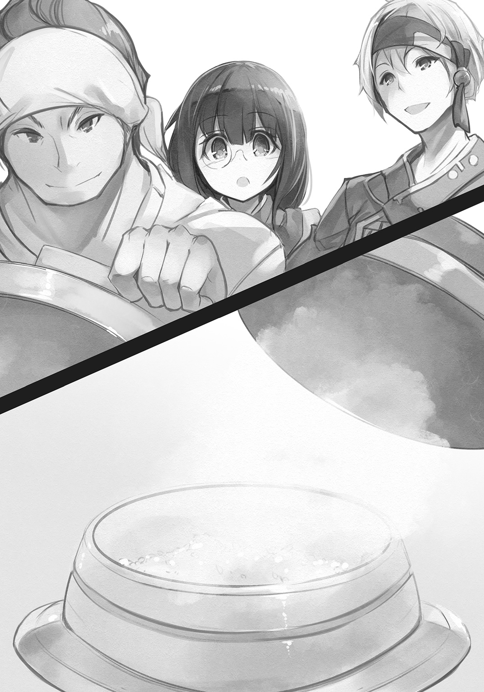
「じゃあ、天麩羅を揚げっかの」
「はい、師匠」
シズルが、ハガマを除けた竈にあまり深くない底の丸い鍋を置き、そこへ油らしきものを、たっぷりと注いだ。
「こいつは菜種油いうんだ。俺ん世界から持ってきたんだけんど、同じような草が生えとるんのを確認してっから、来年はそん種から取ればええ。今年は俺んからの祝いってことで」
シズルが薪をくべると、アズマは二本の細い木の棒の先端を鍋の中に入れて、何かが起きるのを待った。
「何をしているんだ？」
「これか？ 菜箸から立つ、泡を見とるんだ。こん泡の出方で、だいたいの油の温度がわかるかんな。天麩羅ん場合は、しゅわしゅわって感じかの」
アズマは、サイバシとやらを油から引き上げた。どうやら目的の温度になったらしい。
「んじゃ、どんどん揚げるぞー！」
宣戦を布告するがごとく言い、アズマはサイバシで器用に切った野菜を摘むと、コロモ液の中に入れ、しっかりと絡めてから油の中に入れた。
じゅわっと泡が立つ。
しばらくすると、一度沈んだ野菜が浮かんできた。次第に泡も小さくなっていき、コロモが薄く色づいてくる。
「泡が殆ど出なくなって、箸で持った時に、じじじって震えるような感じが伝わったら、揚がったと思っていい」
引き上げると、細く切ったニジンがひとかたまりになって、甘い香りを立てている。アズマはそれを細い金属の格子の上にのせた。
「揚げる時間は使う素材で変わっから、自分で覚えるしかない。今日は祝いの席だから、俺が揚げるけんど、今度、自分たちでもやってみっといい」
アレイは頷いた。
もちろんそのつもりだ。そのためにも今日は、しっかりと見て学ばねば。
アズマの手際は芸術的と言ってよかった。あるいは魔法。目の前で、次々とテンプラーが出来上がっていく様子は、圧巻としかいいようがなかった。
薄い黄色のコロモを纏った野菜たちは、どれもこれも不思議な感じがした。
味の想像が、まったくつかない。
油で揚げたものを、ただ塩で食う――それがどうして野菜をもっともおいしく食べる方法なのか、わからなかった。
マヨネーズーのようなソスをつけた方が、よりうまいのではと思う。
「シズル、飯をよそってくれ」
「はい」
単眼鏡の奥で赤い瞳を瞬き、シズルはオヒツの蓋を取ると、シャモジで、木の椀に真っ白なメシをよそっていった。
「手伝うよ」
サラリとササヤがそれを受けとり、長机についた婆たちのところへ運んでいく。
「ありがとう」
シズルの素直な言葉に二人は少し驚いた顔をしたが、すぐに破顔して、わたしたちが作ったおコメでしょ、と砂漠の少女の肩をやさしく叩いた。
ヤイバはそんな三人には構わず、アレイと共にじっとテンプラーの出来上がっていく様子を見つめている。狩りと同じくらい、料理にも興味があるようだ。
ミコネは、長々の傍にいて、老婆たちのとりとめのない話に付き合ってくれている。正直、助かる。彼女たちの相手をするのはアレイには荷が重かった。
「よーし、できたぞー！」
山のように切られた野菜は、山のようなテンプラーに変わった。大きな皿が何枚も、不思議な食べ物でいっぱいになった。
アレイは、アズマと共にその皿を皆の前に置いて回った。
老婆たちの目にもはや嫌悪はない。草食のうまさにすっかり目覚めてしまったようだ。
全ての用意が整うと、ミコネが支えようとした手を断って、長々が立ち上がった。皺にうずもれた目で宴席を見回す。
「......皆、早くこのテンプラーというものを食べたいのじゃろう？ わかっておる。じゃから挨拶は短く済ます」
小さく咳払いをする。
「聖典に寄れば、我らは卑しいのかもしれん。じゃが、草食は、ノウギョウは、われらを飢えから救ってくれた。わしは生きたい。生きていればこんな面白いこともある。こんなうまいものにも出会える。死んでしまってはなにもならん。わしはわしの決断を後悔していない。じゃがいいか？」
老婆は皺のしたから目を剝いて、一同を見回した。
「そうは思わぬ人々も多い。じゃから、このことは内緒じゃ。町に行ってしまった娘たちにも言ってはならぬ。いいな？」
皆が大きく頷いた。
「では、頂くとしよう。天に感謝を！」
細い腕を、どんと胸に打ちつけた。アレイたちもそれに倣う。アズマは一人、掌を胸の前で合わせて、いただきます、と言った。
アレイは、肉叉でニジンのテンプラーのカキアゲを刺した。小皿に盛られた塩をちょっと付け、がぶりとやった。
途端、アレイは目を瞠った。
熱々のコロモがさくさくと崩れ、その下からニジンの甘味があふれ出してきて、口の中一杯に広がった。
これが、ほんとうにニジンなのか？
生のまま食べるサ・ラダや、焼いてたべるのとは、まったく違う。とてもやわらかく、そして、信じられないくらい甘い。
ニジンの甘味が残っている内に、メシをすくって食べた。
そのうまさに、アレイは再び目を剝いた。
迷宮で食べたニギリメシも、ハタケで食べたオニギラーズもとてもうまかったが、炊きたてのメシは、世界が違った。
甘い。うまい。香りが違う。
テンプラーのコロモについた塩気が、メシをいっそう引き立ててくれる。
ああ、肉叉がとまらない！
確かにテンプラーは――メシに合う！
タ・マネギのカキアゲも、またうまい！
薄く切ったタ・マネギは、コロモがさくりと崩れると、口中でとろりと溶けてしまう。
生で食べるとぴりぴりとした痛みと、微かな苦味があるのに、それがまるで消えてしまっているのが不思議でならない。
ヤイバはメシの上にタ・マネギのカキアゲをのせて塩を振り、メシと一緒に、口の中に乱暴にかき込んでいた。
では、このサツマ・イモとカボチーヤはどうだろう。
「おいしいっ」
アレイが食べる前に、そんなミコネの声がして、見るとカボチーヤのテンプラーを食べていた。断面は朝日のような火の色をしている。
「まるで高級なお菓子みたい......」
そんな馬鹿な、と思ったが、
「本当だ！」
「甘い！ サツマ・イモも本当にお菓子みたい！」
サラリとササヤが、きゃあきゃあ、と喜ぶ。その隣でシズルは、しっていますとも、と言いたげに頷きながら食べている。
「んだろう？」
アズマが楽しげに笑いながら、サイバシの半分ほどの長さの棒を振った。彼はその二本の棒で器用にメシとテンプラーを食べている。
「薩摩芋も、南瓜も、おかずにもなるし、菓子にもなる。今度また、ケーキとはべつん菓子を作ってみんべ」
少女たちの目は、期待に輝いた。
老婆たちも、メシとテンプラーに満足している様子だった。皿に盛られたテンプラーが、見る間に減っていく。
あちこちでメシをくれ、と声が上がり、子供たちがよそって回った。
町で買い求めた果実酒の樽が軽くなり、宴席は笑い声に満ちていくのを眺め、アレイは、夢のようだ、としみじみとした。
竜に呪われてここへ戻った時、村は死んでいた。生きたまま幽鬼と化したようだった。
だが、いまは違う。
この村は、生きている。生きて、こうして笑っている！
「......ありがとう、アズマ」
「ん？」
木の杯に注いだ果実酒を飲んでいたアズマは、少し赤い顔で首を傾げた。
「この村を救ってくれた」
「なんもなんも。稲を立派に育てたんは、あんたらだし、こん森だあ。俺はその手伝いをちょこっとしたにすぎね」
「そんなことは......」
「あるよ。それに、俺も楽しかった。自分とこじゃ一人きりだかんなあ。こんなふうに大勢で飯を食うんは、ひさしぶりだあ」
そう言ったアズマの顔は、真実、楽しそうで、アレイは急に胸が詰まって、
「そうか」
としか言えなかった。わけもなく涙ぐみそうになり、顔を背けたアレイのその肩を、アズマの大きな掌が包むように叩いてくれた。
「――異界の男よ！」
長々が立ち上がり、杯を掲げた。
「そなたには感謝をしてもし尽くせぬ！ 欲しい物があれば何なりと申し出よ。我らにかなうる限りのことをしよう！」
「いんや。感謝なら、こん土地にしよう。あんたらも頑張ったけんど、土に感謝する気持ちがなかったら、農業は続けらんねえ」
「なるほど......では、その感謝はどう表せばよい？」
アズマは少し考え、そうだなあ、と呟いた。
「野菜も命だ。それを貰って生きてるってことを忘れんよう、俺ん世界じゃ、飯の前と後に感謝の言葉ん言う」
「ほう、それはなんと」
アズマは、食べる前にしていたように胸の前で手を合わせた。
「いただきます。そして食べ終わったら、ごちそうさま、だ」
「うむ。では、異界の男よ、首唱を頼めるかの？ 丁度、皆の食事も済んだようだ」
「ええよ」
大きく頷いたアズマは、一度手を下ろし、それから再び、ぱあん、とその大きな掌を胸の前で打ち合わせた。
「ごちそうさまでした！」
彼に倣い、その場にいた全員が、胸の前で手を打ち鳴らし、そうして、ありったけの感謝の思いを込め、天と地の彼方にまで届け、と大きな声で唱えた。
「――ゴチソウサマデシタ！」
～第６話 終わり～
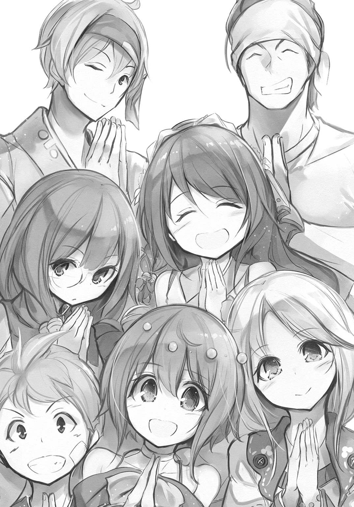
あ と が き
ダッシュエックス文庫の読者様、はじめまして。
ゆうきりん、と申します。
前身のスーパーダッシュ文庫では、古代エジプトの半神の姫ファラオ、イプネフェル様を甦らせてしまい、さらに化け猫少女やマヤの神様の眼鏡っ娘、子牛の幽霊、九尾ノ狐娘などが入り乱れるラブコメディー、『オーパーツ・ラブ』（全二十四巻）を書いておりました。
電子化はまだされておりませんので、ご興味がある方はお待ちいただくか、古書などで手にとってやってくださいませ。
最近では、電撃文庫で『魔王なあの娘と村人Ａ』というシリーズを手がけ、一般文芸小説や、時代小説なども書かせてもらっています。
その後、『イタカノと彼らのおかしな毎日』という、少し実験的なお話を書かせてもらい、あれやこれやあって、三年ぶりに《ダッシュ文庫》に戻ってきました。
この『豊作出来！ ～異世界農場へようこそ～』は、『野菜を食べない異世界のある村が、飢えに耐えかねて現代日本の若い農民を召喚し、野菜のおいしさを知り、畑をつくって農業に目覚めていくお話』です。
『ファンタジー×食』をテーマにした小説というのは、前からあれこれと企画はしていたんですが、昨今の異世界ブームのおかげで、ようやく形に出来ました。
『豊作出来！』はそのテーマに『＋農業』したものですが、同じ月にもう一冊、ファミ通文庫さんからも『ファンタジー×食』の本が出ます。そちらは『＋狩り』となっていますので、あわせてお楽しみいただけたら幸いです。
美味しそうな野菜、料理を描いて下さった、ファルまろ先生、ありがとうございます！
原稿を粘り強く待ってくださった担当さんにも感謝を！
願わくば、本作を読んでくださった皆様のお腹が空きますように！
二〇一六年 八月上旬
ゆうき りん
※本作はフィクションであり、実在する地域、個人、法人、会社、団体等とは何の関係もございません。
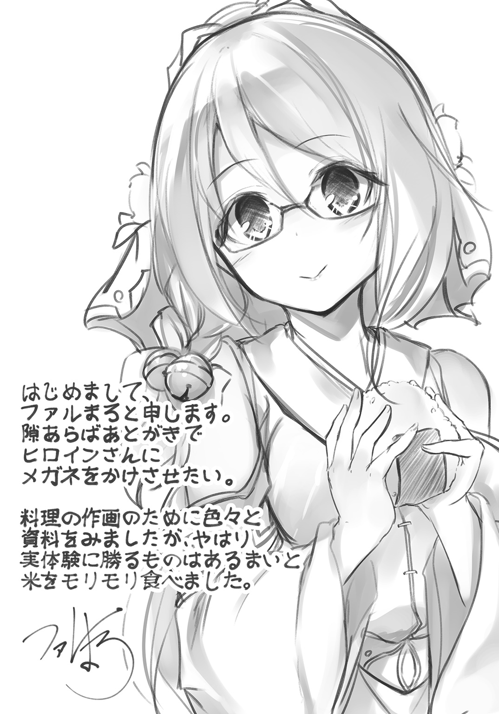
著者紹介
ゆうきりん
ライトノベルから一般文芸、時代小説やノベライズなど、様々な小説を書かせてもらっております。最近はあまり食べ歩きはしなくなりましたが、代わりにますます料理をするようになりました。カレーは奥が深すぎます。あと、猫が可愛すぎて困ります。たとえ毎日午前三時に起こされても！
illustration
ファルまろ
はじめまして、イラストを担当させていただきましたファルまろと申します。
１９８８年生まれ、豆腐の美味しい所に住んでおります。
料理を食べる描写が大変美味しそうで、読み返すたびにセルフ飯テロ状態でございます。
ダッシュエックス文庫DIGITAL
豊作出来！
～異世界農場へようこそ～
著者 ゆうきりん
© RIN YÛKI 2016
２０１６年10月31日発行
この電子書籍は、ダッシュエックス文庫「豊作出来！ ～異世界農場へようこそ～」
２０１６年９月26日発行の第１刷を底本としています。
発行者 鈴木晴彦
発行所 株式会社 集英社
〒１０１－８０５０
東京都千代田区一ツ橋２丁目５番10号
０３－３２３０－６０８０（読者係）
編集協力 石川知佳
制作所 株式会社ＩＣＥ
本作品の全部また一部を無断で複製、転載、改竄、インターネット上に掲載すること、および有償無償に関わらず、本データを第三者に譲渡することを禁じます。なお個人利用の目的であっても、コピーガードを解除しての複製は、法律で禁じられています。